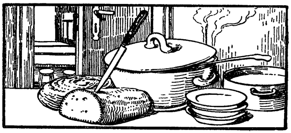

Deutsch von Hanny Brentano
Mit Bildschmuck von Professor A. Brentano
Regensburg
Druck und Verlag von Josef Habbel
Wir wissen, daß wir aus dem Tode in das Leben übergegangen sind, weil wir die Brüder lieben. Wer nicht liebt, bleibt im Tode.
(I. Joh. 3, 14.)
Wer die Güter dieser Welt hat und, wenn er seinen Bruder Not leiden sieht, sein Herz vor ihm verschließt, wie bleibt die Liebe Gottes in ihm?
(17.)
Meine Kindlein, laßt uns nicht mit Worten noch mit der Zunge lieben, sondern in Tat und Wahrheit.
(18.)
Geliebte! laßt uns einander lieben, denn die Liebe ist aus Gott und jeder, der liebt, ist aus Gott geboren und erkennt Gott.
(I. Joh. 4, 7.)
Wer nicht liebt, hat Gott nicht erkannt, denn Gott ist Liebe. (8.)
Gott hat niemand jemals geschaut. Wenn wir einander lieben, so bleibt Gott in uns und seine Liebe ist in uns vollkommen.
(12.)
Gott ist Liebe, und wer in der Liebe bleibt, bleibt in Gott und Gott in ihm.
Wenn jemand sagt: Ich liebe Gott, und haßt seinen Bruder, der ist ein Lügner. Denn wer seinen Bruder, den er sieht, nicht liebt, wie vermag der Gott zu lieben, den er nicht sieht?
(20.)
Es lebte ein Schuster mit seiner Frau und seinen Kindern bei einem Bauern zur Miete. Er besaß weder ein eigenes Haus noch ein Stück Land und ernährte sich und seine Familie mit der Arbeit seiner Hände. Das Brot war teuer, die Arbeit billig, und was er verdiente, das wurde aufgezehrt. Der Schuster und seine Frau hatten nur einen Pelz, und auch der war schon arg zerfetzt. Seit zwei Jahren schon hatte der Schuster die Absicht, Schaffelle zu einem neuen zu kaufen.
Als es zum Herbst ging, hatte der Schuster ein kleines Sümmchen beisammen: ein Dreirubelschein lag im Koffer der Frau und fünf Rubel zwanzig Kopeken schuldeten ihm die Bauern im Dorf.
Eines schönen Morgens machte der Schuster sich auf ins Dorf, um einen Pelz zu kaufen. Er zog eine wattierte, baumwollene Jacke seiner Frau über das Hemd und darüber einen langen Tuchrock, steckte den Dreirubelschein in die Tasche, brach sich einen Wanderstab ab und machte sich gleich nach dem Frühstück auf den Weg. »Fünf Rubel bekomme ich von den Bauern,« dachte er, »meine drei lege ich dazu und kaufe mir Schaffelle zum Pelz.«
Der Schuster kam ins Dorf und ging zu einem der Bauern – der war nicht zu Hause. Die Frau versprach, den Mann noch in derselben Woche mit dem Gelde hinzuschicken, gab aber kein Geld her. Der Schuster ging zu einem andern Bauern – der schwor hoch und heilig, daß er kein Geld habe, und gab ihm nur zwanzig Kopeken für das Flicken seiner Stiefel. Nun dachte der Schuster die Schaffelle auf Borg zu nehmen; der Gerber aber traute ihm nicht und gab nichts her.
»Bring' mir das Geld,« sagte er, »dann kannst du dir auswählen, welche Felle du willst. Ich weiß, wie schwer man Schulden einkassiert.«
So mußte der Schuster unverrichteter Sache wieder abziehen. Nur die zwanzig Kopeken für die Flickarbeit hatte er bekommen und von einem Bauern alte Filzstiefel mitgenommen, die er mit Leder benähen sollte.
Aus Gram trank der Schuster für die ganzen zwanzig Kopeken Schnaps und machte sich ohne Pelz wieder auf den Heimweg. Am Morgen hatte er gefröstelt, jetzt nach dem Trinken erschien es ihm auch ohne Pelz warm genug. So geht er nun seines Weges; mit der einen Hand klopft er mit dem Stecken an die mit Eis bedeckten Steinchen, mit der andern schwenkt er die Filzstiefel hin und her, und dabei spricht er mit sich selber.
»Auch ohne Pelz ist mir warm,« sagt er, »hab' ein Gläschen getrunken, das treibt das Blut durch die Adern. Ich brauch' keinen Pelz, ich geh' meiner Wege und vergesse meinen Kummer. Was bin ich doch für ein Mensch! Was fehlt mir denn? Ich werde auch ohne Pelz auskommen, mein Lebtag brauch' ich keinen Pelz. Nur eines: die Alte wird sich kränken. Und kränkend ist es auch: du arbeitest für ihn und er hält dich zum Narren. Wart' einmal: Bringst du mir kein Geld, so werd' ich's dir zeigen. Was soll denn das heißen? Zwanzig Kopeken gibt er mir, was fang' ich mit zwanzig Kopeken an? Das Einzige ist, man vertrinkt es; ich leide Not, sagt er; gut, du leidest Not, leide ich denn keine Not? Du hast ein Haus und Vieh und alles, ich aber hab' nur mich selbst; du hast dein eigenes Brot, ich muß es kaufen; ich mag es hernehmen, wo ich will, drei Rubel in der Woche brauche ich für Brot allein. Wenn ich nach Hause komme, ist das Brot schon alle, und ich kann wieder anderthalb Rubel hergeben, so gib mir auch das, was du mir schuldig bist!«
So kommt der Schuster zu einer kleinen Kapelle an der Straßenbiegung und sieht gleich hinter der Kapelle etwas Weißes schimmern. Es dämmert schon, der Schuster sieht und sieht, kann aber nicht unterscheiden, was es ist. »Ein Stein«, denkt er, »hat hier nie gelegen, vielleicht ein Tier? Aber es sieht doch nicht aus wie ein Tier. Der Kopf sieht aus wie ein Menschenkopf, aber so weiß ist das Ganze, und warum auch sollte ein Mensch hier sein?«
Er geht näher heran und sieht nun ganz deutlich – welch ein Wunder! – es ist wirklich ein Mensch. Er sitzt da, lebendig oder tot, vollständig nackt, an die Kapelle gelehnt und rührt sich nicht. Dem Schuster wird angst und bang; er denkt sich: Der Mensch muß getötet worden sein, ist ausgeplündert und liegen gelassen; wenn man in seine Nähe kommt, kann man in die Geschichte verwickelt werden.
Und er ging vorüber. Als er um die Kapelle herum war, sah er den Menschen nicht mehr. Er ging weiter, blickte sich um, und schau, der Mensch ist nicht mehr an die Kapelle gelehnt, sondern bewegt sich, als wollte er etwas sehen. Der Schuster erschrak noch mehr. »Soll ich herangehen,« dachte er, »oder soll ich weiter? Wenn ich herangehe, kann es ein Unglück geben; wer weiß denn, was für ein Mensch das ist? Den hat nichts Gutes hergeführt. Wenn ich mich ihm nähere, springt er vielleicht auf und erwürgt mich, ohne daß ich mir helfen kann; erwürgt er mich aber nicht, schau, so werd' ich ihn vielleicht nicht mehr los. Was soll ich mit einem Nackten anfangen? Ich kann doch nicht meine letzten Kleider vom Leibe ziehen und ihm geben. Gott helfe mir weiter!«
Und der Schuster beschleunigte seine Schritte. Schon war er weit weg von der Kapelle, als sein Gewissen erwachte und er mitten auf dem Wege stehen blieb. »Was tust du denn, Ssemjon?« sagte er zu sich selbst; »da stirbt ein Mensch im Elend, du aber bist feig und gehst vorüber. Du bist wohl plötzlich sehr reich geworden und fürchtest, daß man dir deinen Reichtum raube? Ei Ssemjon, das ist nicht hübsch von dir!«
Ssemjon kehrte um und ging auf den Menschen zu. Er betrachtet ihn von allen Seiten und sieht, das ist ein junger, kräftiger Mann, am ganzen Körper keine Wunde, nur erfroren und erschreckt ist der Mensch. Er sitzt da, an die Mauer gelehnt, und blickt nicht auf, als wäre er zu schwach, um die Augen zu öffnen. Ssemjon trat dicht an ihn heran, und da plötzlich war es, als ob der Mensch zu sich käme; er wendet den Kopf, öffnet die Augen und blickt Ssemjon an – und durch diesen Blick gewann Ssemjon den Menschen lieb. Er warf die Filzstiefel auf den Boden, nahm seinen Gürtel ab, legte ihn auf die Filzstiefel und zog den langen Rock aus. »Da nimm,« sagte er, »laß das Reden, zieh' dich an, schnell! So!«
Ssemjon faßte den Menschen unter die Arme und richtete ihn empor. Der Mensch erhob sich. Ssemjon sieht, es ist ein feiner, reiner Körper; die Hände und Füße sind zart und unversehrt, das Gesicht ist rührend und hold. Ssemjon warf ihm den Rock über die Schultern; der Jüngling aber fand nicht in die Ärmel hinein. Ssemjon half ihm die Hände hineinbringen, schlug den Rock zusammen und band ihm den Gürtel um.
Dann nahm Ssemjon seine zerrissene Mütze vom Kopf und wollte sie dem Nackten aufsetzen, aber es fror ihn selbst am Kopfe. Da dachte er: »Ich hab' eine Glatze, er aber hat lange lockige Haare!« und er drückte sich die Mütze wieder aufs Haupt; »ich ziehe ihm lieber die Stiefel an!« Er setzte ihn nieder und zog ihm die Filzstiefel an die Füße.
Nachdem der Schuster den Fremden so bekleidet hatte, sprach er:
»Nun, Bruder, setz' dich in Bewegung, dann wird dir warm werden. Diese ganze Sache wird sich auch ohne uns aufklären. Kannst du gehen?«
Der Mensch steht da, blickt Ssemjon freundlich an, kann aber kein Wort hervorbringen.
»Warum sprichst du denn nicht? Wir können hier doch nicht überwintern. Wir müssen ein Unterkommen suchen. Da nimm meinen Stock und stütz' dich darauf, wenn du ermattet bist. Vorwärts, Bruder!«
Und der Mensch ging. Und er ging leicht, ohne zurückzubleiben.
So ziehen sie ihres Weges und Ssemjon fragt:
»Also wo bist du wohl her?«
»Ich bin nicht von hier.«
»Die hiesigen Leute kenne ich; wie bist du also hierher geraten, grade zur Kapelle?«
»Ich kann es nicht sagen.«
»Wahrscheinlich haben dir die Leute etwas angetan?«
»Niemand hat mir etwas angetan; Gott hat mich gestraft.«
»Versteht sich, alles macht Gott; aber immerhin, du mußt doch irgendwo ein Unterkommen haben. Wohin führt dein Weg?«
»Das ist mir einerlei.«
Ssemjon wundert sich. Wie ein Vagabund sieht der Fremde nicht aus. Seine Rede ist sanft, aber er sagt nichts über sich. Und Ssemjon denkt, es kommt vielerlei vor in der Welt, und sagt zu dem Jüngling:
»Also komm mit mir ins Haus, kannst dich wenigstens etwas erholen.«
Ssemjon geht weiter; der Fremde hält Schritt mit ihm und geht neben ihm her. Inzwischen hat sich ein Wind erhoben, der bläst Ssemjon nun kalt unter das Hemd; sein Rausch verfliegt und es fröstelt ihn wieder. Laut atmend schreitet er daher, zieht die Weiberjacke fester um sich und denkt:
»Da hab ich's nun, einen Pelz zu kaufen ging ich aus, und ohne Rock komme ich heim und bringe mir noch einen Nackten mit! Matrjona wird mich nicht loben.«
Und bei dem Gedanken an seine Frau wird ihm unbehaglich zumute. Wenn er aber den Fremdling ansieht und sich erinnert, wie der ihn dort hinter der Kapelle angeblickt hat, dann hüpft sein Herz vor Freude.
Ssemjons Frau hatte die Wohnung früh in Ordnung gebracht. Sie hatte Holz gehackt, Wasser herbeigeschleppt, die Kinder gefüttert und selbst ein wenig gegessen; nun dachte sie darüber nach, wann sie frischen Brotteig machen sollte, heute oder morgen? Es war noch ein großes Stück Brot übrig geblieben.
»Wenn Ssemjon dort Mittag ißt,« dachte sie, »und zum Nachtmahl nicht mehr viel verzehrt, dann reicht das Brot bis morgen.«
Sie drehte das Brot hin und her und kam zu dem Entschluß: »Ich mach' heute keinen Teig. Hab' ohnehin nicht mehr viel Mehl im Haus, bis Freitag komm' ich schon noch durch.«
Matrjona legt das Brot fort und setzt sich an den Tisch, um das Hemd ihres Mannes zu flicken. Sie näht und denkt daran, wie Ssemjon die Schaffelle zum Pelz einkauft.
»Wenn ihn der Gerber nur nicht betrügt! Er ist doch gar zu einfältig, mein Alter; er selbst betrügt niemand, aber ihn kann jedes kleine Kind an der Nase herumführen. Acht Rubel sind nicht wenig Geld. Da kann man schon einen guten Pelz haben. Wenn auch kein gegerbter, wird es doch ein Pelz sein. Wie haben wir uns vorigen Winter ohne Pelz quälen müssen! Konnten nicht an den Fluß gehen, nirgendwohin. Da ist er nun fortgegangen und hat alles angezogen; für mich ist nichts zurückgeblieben. Früh genug ist er fortgegangen, es wäre schon Zeit, daß er heimkehrt. Wenn er nur nicht irgendwo hängen geblieben ist, mein lieber Alter.«
Kaum hatte Matrjona das gedacht, so knarrten die Stufen der Treppe, und jemand trat in den Flur. Matrjona steckte die Nadel in die Arbeit und ging hinaus. Da sieht sie, zwei Menschen sind da: Ssemjon und mit ihm ein Fremder, ohne Mütze und in Filzstiefeln.
Matrjona spürte sofort den Branntweingeruch, der von ihrem Manne ausging. »Na also,« denkt sie, »es ist, wie ich fürchtete.« Und als sie sieht, daß er ohne Rock dasteht, nur in der Jacke, und daß er nichts mitgebracht hat und ein verlegenes Gesicht macht und schweigt, da will ihr das Herz stillstehen. »Vertrunken hat er das Geld,« denkt sie, »ist mit irgend einem Vagabunden in der Schenke gewesen und bringt ihn noch gar mit sich nach Haus.«
Sie läßt die beiden in die Stube treten, geht selbst hinein und sieht nun: der Fremde ist ein junger, hagerer Mann und trägt den Rock ihres Mannes. Ein Hemd ist unter dem Rock nicht zu sehen; eine Mütze hat er nicht. Wie er eingetreten ist, so bleibt er stehen, rührt sich nicht und blickt nicht auf. »Das ist kein guter Mensch,« denkt Matrjona, »er fürchtet sich.«
Sie machte ein finsteres Gesicht, ging zum Ofen und wartete, was die beiden tun würden. Ssemjon nahm die Mütze ab und setzte sich auf die Bank, als wäre gar nichts Besonderes geschehen.
»Na, Matrjona,« sagte er, »richte uns was zum Nachtmahl.«
Matrjona brummt etwas vor sich hin. Sie bleibt unbeweglich am Ofen stehen, blickt bald den einen, bald den andern an und schüttelt nur den Kopf. Ssemjon sieht, daß seine Alte verstimmt ist; nichts zu machen! Als wenn er gar nichts bemerke, nimmt er den Fremdling bei der Hand.
»Setz' dich, Bruder,« sagt er, »wir werden nachtmahlen.«
Der Fremdling setzt sich auf die Bank.
»Oder hast du nichts gekocht, was, Matrjona?«
Matrjona packt die Wut.
»Gekocht hab' ich schon, aber nicht für dich. Du hast den Verstand vertrunken, sehe ich. Gehst fort, um einen Pelz zu kaufen, und kommst ohne Rock zurück und schleppst noch gar irgend einen nackten Landstreicher mit ins Haus. Für euch Trunkenbolde hab' ich kein Nachtmahl.«
»Still, Matrjona, was schwätzest du da für unnützes Zeug! Frag' doch zuerst, wer der Mann ist.«
»Du aber sag', wo du das Geld gelassen hast?«
Ssemjon steckte die Hand in die Tasche, zog den Dreirubelschein heraus und faltete ihn auseinander.
»Das Geld? Da ist es; Trofimow aber hat nicht gezahlt, hat mich auf morgen vertröstet.«
Matrjona wurde noch wütender: den Pelz also hatte er nicht gekauft, den letzten Rock irgend einem Habenichts gegeben und den Kerl mit ins Haus gebracht. Sie nahm das Geld vom Tisch, brachte es in Sicherheit und rief:
»Ich hab' kein Nachtmahl; ich kann nicht alle nackten Trunkenbolde füttern.«
»Ach, Matrjona, halt doch deine Zunge im Zaum! Hör' doch erst, was man dir sagt.«
»Als wenn man von einem betrunkenen Narren etwas Gescheites zu hören bekäme! Nicht ohne Grund hab' ich dich nicht heiraten wollen, du Trunkenbold! Mütterchen hat mir Leinwand mitgegeben – du hast's vertrunken; bist gegangen, einen Pelz zu kaufen, hast dich betrunken.«
Ssemjon will seiner Frau klarmachen, daß er nur zwanzig Kopeken für Schnaps ausgegeben hat. Er will ihr sagen, wo er den Fremden gefunden hat; aber Matrjona läßt ihn nicht zu Worte kommen. Sie schimpft ununterbrochen, ihre Worte überstürzen sich. Was schon vor zehn Jahren geschehen ist, tischt sie wieder auf. Sie spricht und spricht; endlich springt sie auf Ssemjon zu und ergreift ihn am Ärmel:
»Gib mir meine Jacke! Es ist die einzige, die mir geblieben ist, und auch die hast du mir genommen und hast sie selbst angezogen. Gib sie her, du bunter Hund! daß dich der Schlag rühre!«
Ssemjon begann die Jacke auszuziehen und drehte dabei den Ärmel um. Das Weib riß daran, daß alle Nähte krachten. Matrjona ergriff die Jacke, warf sie sich über den Kopf und rannte zur Tür. Sie wollte fort, blieb aber plötzlich stehen: ihr Herz war voller Wut; sie hätte aber doch gerne gewußt, wer der Fremde war.
Matrjona blieb also stehen und sprach:
»Wenn's ein guter Mensch wäre, wär' er doch nicht nackt. Der da hat ja nicht einmal ein Hemd an! Und wenn du ein reines Gewissen hättest, würdest du doch sagen, wo du den feinen Herrn gefunden.«
»Das sage ich dir gern: ich geh' meines Weges, da sitzt dieser Mann nackt an der Kapelle, halb erfroren. Es ist ja doch nicht Sommer. Gott hat mich zu ihm geführt, sonst wäre er umgekommen. Was tun? Es kommt viel vor in der Welt! Ich nahm ihn also, bekleidete ihn und brachte ihn her. Beruhige dich doch, Matrjona, sündige nicht, denke an die Stunde des Todes.«
Matrjona wollte wieder losschimpfen; da fiel ihr Blick auf den Fremdling und sie verstummte. Der Fremde sitzt da, unbeweglich, so wie er sich auf den Rand der Bank niedergelassen hat. Seine Hände sind auf den Knien gefaltet, sein Kopf ist auf die Brust herabgesunken, die Augen sind geschlossen, die Brauen zusammengezogen, als bedrücke ihn etwas. – Matrjona sprach kein Wort; Ssemjon aber sagte:
»Matrjona, hast du denn keinen Gott in dir?«
Matrjona hörte das Wort, blickte noch einmal auf den Fremdling, und plötzlich wurde ihr das Herz weich. Sie entfernte sich von der Tür, ging in die Ofenecke und holte das Nachtmahl, stellte eine Schüssel auf den Tisch, goß Kwas Säuerliches Getränk aus Wasser und Schwarzbrotteig. (Anm. d. Übers.) hinein, brachte das letzte Stück Brot herbei und reichte Messer und Löffel.
»Eßt!« sagte sie.
Ssemjon schob den Fremdling zum Tisch.
»Komm' näher, Bursche,« sagte er. Dabei schnitt er Brot ab, brockte es in die Schüssel, und sie begannen zu essen. Matrjona aber setzte sich an die Ecke des Tisches, stützte den Kopf in die Hände und blickte den Fremdling an. Und da erfaßte sie Mitleid mit dem Jüngling und sie gewann ihn lieb. Und plötzlich erheiterte sich das Gesicht des Fremden; er heftete seine Augen auf Matrjona und lächelte.
Sie hatten genachtmahlt. Die Alte räumte den Tisch ab und begann den Fremden auszufragen.
»Wo bist du wohl her?«
»Ich bin kein Hiesiger.«
»Wie bist du denn auf die Straße geraten?«
»Ich kann es nicht sagen.«
»Wer hat dich denn ausgeraubt?«
»Mich hat Gott gestraft.«
»Ganz nackt hast du also dagelegen?«
»Nackt lag ich da und fror. Ssemjon sah mich, erbarmte sich meiner, zog seinen Rock aus, gab ihn mir und hieß mich mit ihm gehen. Hier aber hast du mir zu essen und zu trinken gegeben und hast Mitleid mit mir gehabt, und Gott wird es euch lohnen.«
Matrjona stand auf, nahm das Hemd ihres Mannes, das sie eben geflickt hatte, und gab es dem Fremdling. Sie fand auch noch ein Paar Beinkleider und gab es ihm ebenfalls.
»Da nimm, ich sehe ja, du hast nicht einmal ein Hemd an. Kleide dich an und leg' dich nieder, wo du willst, auf der Bank oder auf dem Ofen.«
Der Fremdling zog den Rock aus, bekleidete sich mit dem Hemd und den Hosen und legte sich auf die Bank. Matrjona löschte das Licht, nahm den Rock und suchte die Lagerstatt auf, wo ihr Mann es sich bereits bequem gemacht hatte. Sie bedeckte sich mit dem Zipfel des Rockes, lag da und schlief nicht; der Fremde ging ihr nicht aus dem Kopf. Wenn sie daran denkt, daß er das letzte Stück Brot aufgegessen hat und daß für morgen gar nichts übrig geblieben ist, wenn sie daran denkt, daß sie ihm Hemd und Hosen geschenkt hat, so ärgert sie sich; wenn sie sich aber erinnert, wie er sie angelächelt hat, so hüpft ihr Herz vor Freude.
Lange lag Matrjona wach da; sie merkte, daß Ssemjon auch nicht schlief; er zog den Rock zu sich hinüber.
»Ssemjon!«
»Ja?«
»Das letzte Brot haben wir aufgegessen, und ich habe keinen frischen Teig angerührt. Weiß nicht, was ich morgen machen soll. Ich werde wohl bei der Gevatterin Melanie eines leihen müssen.«
»Wenn wir leben, werden wir auch zu essen haben.«
Das Weib lag eine Weile still und sprach kein Wort, dann begann sie wieder:
»Scheint doch ein guter Mensch zu sein, – aber warum erzählt er nichts von sich?«
»Wahrscheinlich kann er nicht.«
»Ssemjon!«
»Wir geben den andern, aber warum gibt uns denn niemand etwas?«
Ssemjon wußte nicht, was er antworten sollte.
»Genug des Redens!« sagte er, drehte sich um und schlief ein.
Am andern Morgen erwacht Ssemjon. Die Kinder schlafen noch; die Frau ist zu den Nachbarn gegangen, um Brot zu leihen. Nur der Fremdling von gestern sitzt in den alten Hosen und im Hemd auf der Bank und schaut nach oben. Und sein Gesicht ist nicht so düster wie gestern. Da sagt Ssemjon:
»Nun, mein Lieber, der Magen verlangt Brot und der nackte Körper Kleidung; man muß sich doch ernähren. Kannst du etwas arbeiten, was?«
»Ich kann nichts.«
Ssemjon wunderte sich und sprach: »Wenn du nur Lust dazu hast, der Mensch kann alles erlernen.«
»Der Mensch arbeitet, so werde auch ich arbeiten.«
»Wie heißt du denn?«
»Michael.«
»Nun, Michael, du willst mir nichts über dich sagen, das ist deine Sache; aber essen muß der Mensch. Wenn du arbeiten willst, was ich dir auftrage, so werde ich dir zu essen geben.«
»Vergelt's dir Gott! Ich werde lernen. Zeig' mir nur, was ich machen soll.«
Ssemjon nahm Pechdraht, legte ihn um den Finger und machte einen Knoten.
»Die Sache ist nicht schwer, sieh nur zu.«
Michael sah zu, nahm ebenfalls Pechdraht und machte alles genau so wie der Schuster.
Nun zeigte ihm Ssemjon, wie man die Sohle anbringt. Auch das begriff Michael sofort. Der Meister zeigte ihm alle Handgriffe, und alles begriff Michael; so ging es mit jeder Arbeit, und vom dritten Tage an arbeitete er, als wenn er sein Lebtag Schuster gewesen wäre. Er arbeitet ununterbrochen, ißt nur wenig. Fehlt es an Arbeit, so sitzt er schweigend da und schaut nach oben. Er geht nicht auf die Gasse hinaus, er spricht kein unnützes Wort, er scherzt nicht und lacht nicht. Nur einmal hatten sie ihn lächeln sehen, damals am ersten Abend, als die Frau ihm das Nachtmahl gereicht hatte.
Es verging ein Tag nach dem andern – eine Woche nach der andern, ein ganzes Jahr. Michael lebte bei Ssemjon und arbeitete, und man begann von Ssemjons Gesellen zu erzählen, daß niemand so saubere und so feste Stiefel nähen könne wie er. Aus der ganzen Umgebung kamen die Leute, um bei Ssemjon Stiefel zu bestellen, und der Wohlstand des Schusters nahm immer zu.
Eines Tages im Winter sitzen Ssemjon und Michael bei der Arbeit. Da kommt eine Schlittenkutsche, von drei Pferden gezogen, mit Schellengeklingel vor das Häuschen gefahren. Sie schauen zum Fenster hinaus; der Schlitten hält gerade vor der Tür, ein junger Bursche springt vom Kutschbock und öffnet den Schlag. Aus dem Schlitten steigt ein Herr im Pelz; steigt heraus, geht auf Ssemjons Haus zu, schreitet die Treppe hinauf. Matrjona springt auf und öffnet die Tür weit. Der Herr bückt sich, tritt ins Zimmer und richtet sich wieder auf, so daß sein Kopf beinahe die Decke berührt. Die ganze Zimmerecke nimmt er ein.
Ssemjon erhob sich, verbeugte sich und staunte den Herrn an. Noch nie hatte er einen solchen Menschen gesehen. Er selbst war mager; auch Michael war schmächtig, und Matrjona gar, die war ausgetrocknet wie ein Span. Dieser Fremde aber sah aus wie ein Mensch aus einer andern Welt: ein dickes, rotes Gesicht, ein Nacken wie ein Stier, der ganze Mann wie aus Eisen gegossen.
Der Herr verschnaufte sich, zog den Pelz aus, setzte sich auf die Bank und sagte:
»Wer ist der Meister Schuster?
Ssemjon trat vor: »Ich, Euer Gnaden.«
Da ruft der Herr seinem Burschen zu: »He, Fedja, bring mal die Ware herein!«
Der Bursche eilte herbei und brachte ein Bündel. Der Herr nahm es und legte es auf den Tisch.
»Binde es auf!« sagte er.
Der Bursche gehorchte. Der Herr berührte mit dem Finger die Lederware und sagte zu Ssemjon:
»Na hör' mal, Schuster, siehst du diese Ware?«
»Ich sehe sie, Euer Wohlgeboren.«
»Und verstehst du auch, was das für eine Ware ist?«
Ssemjon befühlte das Leder und sagte:
»Die Ware ist gut.«
»Und ob sie gut ist! Du dummer Kerl hast gewiß noch nie eine solche gesehen. Deutsche Ware ist es, und fünfundzwanzig Rubel hat sie gekostet.«
Eingeschüchtert sagte Ssemjon:
»Wo soll unsereiner so was sehen!«
»Na also, kannst du aus diesem Leder für mich Stiefel machen?«
»Ich kann schon, Euer Gnaden.«
Da schreit ihn der Herr an:
»Kannst du's? Bedenke, für wen du arbeitest und aus welchem Leder! Mach' mir ein Paar Stiefel, die ein Jahr lang halten, ohne schief zu werden und ohne zu platzen. Wenn du das kannst, so mach' dich an die Arbeit, schneide das Leder zu. Kannst du es aber nicht, so laß es sein und zerschneide das Leder nicht. Ich sage dir's, wenn die Stiefel vor einem Jahr schief werden und platzen, so lasse ich dich ins Gefängnis stecken. Werden sie nicht schief und platzen sie nicht vor einem Jahr, so zahle ich dir zehn Rubel für die Arbeit.«
Ssemjon wird ängstlich und weiß nicht, was er sagen soll. Er blickt zu Michael hinüber, stößt ihn mit dem Ellenbogen an und flüstert:
»Sollen wir's annehmen?«
Michael nickt mit dem Kopf: »Nimm's nur an.«
Ssemjon gehorchte ihm und übernahm es, Stiefel zu machen, die ein Jahr lang nicht schief werden und nicht platzen.
Der Herr rief wieder seinen Burschen herbei, hieß ihn, ihm den linken Stiefel auszuziehen, und streckte den Fuß aus.
»Nimm mir Maß,« befahl er dem Schuster.
Ssemjon nähte sich einen Papierstreifen, etwa eine halbe Elle lang, glättete ihn, kniete nieder, wischte die Hände ordentlich an seiner Schürze ab, um den Strumpf des Herrn nicht schmutzig zu machen, und begann Maß zu nehmen. Er maß erst die Sohle, dann das Blatt, dann wollte er die Wade messen, doch da reicht der Papierstreifen nicht aus. Der Fuß ist in der Wade so dick wie ein Balken.
»Paß' auf, daß du den Stiefelschaft nicht zu eng machst.«
Ssemjon näht noch ein Papier an den Streifen an. Der Herr sitzt unterdessen da, bewegt die Zehen im Strumpf und betrachtet die Leute im Zimmer. Da bemerkt er Michael.
»Wer ist denn der da?«
»Das ist ja mein Werkmeister, der wird auch die Stiefel nähen.«
»Also paß' auf,« sagt der Herr zu Michael, »vergiß nicht, daß die Stiefel ein Jahr lang halten müssen.«
Auch Ssemjon blickt Michael an; da sieht er, daß Michael den Herrn gar nicht anschaut, sondern den Blick in die Ecke hinter dem Herrn heftet, als wenn er dort jemand sehe. Er schaut und schaut und plötzlich – lächelt er und sein ganzes Gesicht erhellt sich.
»Was grinst du denn, Dummkopf? Paß' lieber auf, daß die Stiefel zur Zeit fertig sind.«
Und Michael antwortet: »Sie werden gerade zur Zeit fertig sein.«
»Na also!«
Der Herr zog seinen Stiefel und den Pelz wieder an, hüllte sich tüchtig ein und ging zur Tür. Er vergaß aber, sich zu bücken, und stieß mit dem Kopf an den Türbalken. Schimpfend rieb er sich den Kopf, stieg in den Schlitten und fuhr davon. Als er fort war, sagte Ssemjon:
»Der ist hart wie Kieselstein. Hat mit dem Kopf fast den Balken krumm gebogen und merkt das kaum.«
Matrjona aber spricht: »Bei solchem Leben, wie soll man da nicht kräftig sein! So einen Klotz wird auch der Tod nicht bezwingen.«
Und Ssemjon sagt zu Michael:
»Übernommen haben wir die Arbeit, wenn's nur kein Malheur gibt. Das Leder ist teuer und der Herr böse, – wenn wir nur keinen Fehler machen. Weißt du, du hast ein schärferes Auge und auch mehr Geschicklichkeit in den Händen als ich; da hast du das Maß, schneide du das Leder zu, ich werde unterdessen an den Kappen weiter arbeiten.«
Michael gehorchte, nahm das Leder, das der Herr gebracht hatte, breitete es auf dem Tisch aus, legte es doppelt zusammen, ergriff das Messer und begann zuzuschneiden. Matrjona kam herzu. Sie sieht, wie Michael schneidet, und wundert sich, was er da eigentlich macht. Sie kennt doch die Schusterarbeit schon, schaut hin und sieht, daß Michael das Leder nicht zu Stiefeln schneidet, sondern eher zu Pantoffeln.
Matrjona wollte es sagen, dachte sich aber: »Wahrscheinlich habe ich nicht verstanden, was für Stiefel der Herr bestellt hat. Michael weiß es jedenfalls bester, ich werde mich nicht hineinmischen.«
Michael schnitt das Paar zu, nahm das Ende und fing an zu nähen, aber nicht wie man Stiefel näht, mit zwei Fäden, sondern nur mit einem Faden, wie man Schuhe näht, die auf bloßem Fuß getragen werden. Wieder wunderte sich Matrjona, wollte sich aber nicht einmischen.
Und Michael näht und näht. Die Vesperzeit kommt heran: Ssemjon steht auf und sieht, Michael hat aus dem Leder des Herrn statt der Stiefel – niedrige Schuhe genäht. Ssemjon stöhnt auf. »Wie,« denkt er, »ein ganzes Jahr lebt Michael schon bei mir und hat sich noch nie irgendwie geirrt, und jetzt richtet er mir so ein Unheil an! Der Herr hat Schaftenstiefel mit Randsohlen bestellt, er aber näht Schuhe ohne Sohlen und hat das ganze Leder verdorben. Wie werde ich mich nun mit dem Herrn auseinandersetzen? Eine solche Ware finde ich ja nirgends.«
Und er spricht zu Michael: »Aber lieber Freund, was hast du denn da gemacht? du bringst mich ja um! Der Herr hat doch Stiefel bestellt, und was hast du genäht?«
Kaum hat er angefangen, Michael zu schelten, da klopft es an die Tür. Sie sehen zum Fenster hinaus: ein Reiter ist da, bindet gerade sein Pferd an. Sie öffnen. Derselbe Bursche tritt herein, der mit dem Herrn da war.
Guten Tag.«
»Guten Tag. Was gibt's?«
»Die Herrin schickt mich her wegen der Stiefel.«
»Was ist's mit den Stiefeln?«
»Was es ist? Der Herr braucht keine Stiefel mehr, er wünscht euch ein langes Leben.«
»Was sagst du?«
»Er ist von euch gar nicht lebend nach Hause gekommen. Ist im Schlitten gestorben. Als wir zu Hause vorfuhren und ihm aus dem Schlitten helfen wollten, da lag er schon wie ein Sack; tot lag er da und war bereits erstarrt. Wir konnten ihn nur mit Mühe aus dem Schlitten heben. Daher schickt mich die Herrin her. Sage dem Schuster, so befahl sie mir, es ist eben ein Herr bei euch gewesen, hat Stiefel bestellt und Leder dagelassen. Sage, die Stiefel sind nicht mehr nötig, aber Leichenschuhe sollen schnell aus dem Leder genäht werden. Warte, bis sie fertig sind, und bring sie gleich mit. So bin ich denn hergeritten.«
Michael nahm vom Tisch die Lederreste, rollte sie zusammen, nahm auch die fertigen Leichenschuhe, schlug einen an den andern, wischte sie mit der Schürze ab und reichte sie dem Burschen. Der Bursche nahm die Schuhe.
»Guten Tag.«
Es verging noch ein Jahr und auch ein zweites. Jetzt lebt Michael schon das sechste Jahr bei Ssemjon. Er lebt nach alter Art, geht nicht aus, spricht kein unnützes Wort und hat die ganze Zeit nur zweimal gelächelt: das erste Mal damals, als die Frau ihm das Nachtmahl reichte, das zweite Mal, als der Herr die Stiefel bestellte. Ssemjon kann sich nicht genug freuen über seinen Gesellen. Er fragt ihn auch nicht weiter, woher er sei. Er fürchtet nur das Eine, daß Michael am Ende von ihm fortgehen werde.
Eines Tages sitzen sie daheim. Die Hausfrau stellt die eisernen Töpfe in den Ofen, die Kinder laufen auf der Wandbank herum und schauen zum Fenster hinaus. Ssemjon hämmert an dem einen Fenster, Michael sitzt an dem andern und befestigt gerade einen Absatz.
Der Knabe lief über die Bank zu Michael hin, stützte sich auf seine Schulter und sah zum Fenster hinaus.
»Onkel Michael, sieh' mal, die Kaufmannsfrau mit den Mädels da, kommt die nicht zu uns? Eines der Mädchen hinkt.«
Kaum hatte der Knabe das gesagt, als Michael die Arbeit hinwarf, sich zum Fenster wandte und auf die Straße blickte.
Ssemjon wunderte sich. Sonst schaut Michael doch niemals auf die Straße hinaus. Jetzt aber hat er das Gesicht an die Scheiben gedrückt und starrt auf etwas hin. Auch Ssemjon blickt hinaus und sieht, es kommt in der Tat eine Frau auf sein Haus zu, ist nett angezogen und führt an jeder Hand ein kleines Mädchen, in Pelzchen und gewirkte Tücher gehüllt. Die Mädchen gleichen sich wie ein Ei dem andern; man kann sie kaum unterscheiden. Das eine aber hinkt auf dem linken Fuß.
Die Frau kam die Treppe herauf in den Flur, tastete nach der Tür, drückte auf die Klinke und öffnete. Die beiden Mädchen ließ sie vorangehen und betrat dann selbst die Stube.
»Guten Tag, Meister und Meisterin.«
»Bitte einzutreten! Was steht zu Diensten?«
Die Frau setzte sich an den Tisch. Die Mädchen schmiegten sich an ihre Knie, sie fürchteten die fremden Leute.
»Den Mädchen da möchte ich zum Frühling Lederstiefelchen bestellen.«
»Warum nicht, das kann geschehen. Wir haben zwar noch nie so kleine Stiefelchen genäht, aber es geht schon. Es können Randschuhe sein, es können auch umgewendete und auf Leinwand gearbeitete sein. Der Michael ist geschickt in allem.«
Dabei sah Ssemjon sich nach Michael um und sieht, Michael hat die Arbeit fallen lassen, sitzt da und wendet den Blick nicht von den Mädchen.
Und Ssemjon wundert sich über Michael. Es ist wahr, die Mädchen sind hübsch, dunkeläugig, rotwangig, rundlich, sie haben auch schöne Pelzchen und Tücherchen an, aber dennoch kann Ssemjon nicht begreifen, warum Michael sie so unausgesetzt anblickt. Es ist fast, als kenne er sie.
Ssemjon wundert sich und fängt an, mit der Frau zu verhandeln, um einig zu werden. Dann richtet er das Maß her. Die Frau hebt das lahme Kind auf den Schoß und spricht:
»Nimm hier von dieser Kleinen das Maß, für das lahme Füßchen mach' ein Stiefelchen, fürs gerade drei, denn sie haben ganz gleiche Füßchen. Die eine genau wie die andere. Sind ja Zwillinge.«
Ssemjon nimmt das Maß und spricht, indem er auf die Lahme deutet:
»Wie ist denn das mit ihr so gekommen? Ist doch so ein hübsches Mädel! Hat sie das von Geburt?«
»Nein, die Mutter hat sie gequetscht.«
Nun mischt sich auch Matrjona ein, sie hätte gerne gewußt, wer die Frau ist und wessen Kinder das sind, und fragt: »Bist du denn nicht die Mutter?«
»Ich bin weder ihre Mutter noch ihre Verwandte, Frau Meisterin. Sind ganz fremde – angenommene Kinder.«
»Fremde Kinder – und hast sie doch so lieb?«
»Wie soll ich sie nicht lieb haben, ich habe sie beide an meiner Brust genährt. Ich hatte auch ein eigenes Kindchen, das hat Gott zu sich genommen. Ich habe es nicht so lieb gehabt als ich diese liebe.«
»Ja wessen Kinder sind's denn?«
Nun wurde die Frau gesprächig und begann zu erzählen:
»Vor sechs Jahren etwa,« sagte sie, »da wurden diese Kinder in einer Woche Waisen. Den Vater beerdigten wir am Dienstag, die Mutter starb am Freitag darauf. Drei Tage nach dem Tode des Vaters wurden diese Kleinen geboren und die Mutter lebte nach der Geburt kaum einen Tag. Mein Mann und ich, wir lebten damals als Bauern. Es waren unsere Nachbarn, wir wohnten Hof an Hof. Der Vater der Kinder arbeitete im Walde; da fiel eines Tages ein Baum auf ihn, quer über seinen Körper, so daß das ganze Innere herausquoll. Man hatte ihn kaum nach Hause geführt, da hauchte er seine Seele aus. Sein Weib aber gebar in derselben Woche Zwillinge, eben diese Mädchen. Sie war arm und verlassen, stand ganz allein da, hatte weder eine alte Frau, noch irgend ein Mädel bei sich. Allein war sie in der schweren Stunde, allein ist sie auch gestorben. Am andern Morgen ging ich hin, um mich nach der Nachbarin umzuschauen; ich komme in die Stube, sie aber, die Arme, ist schon tot und kalt. Im Todeskampf war sie auf das Mädchen gesunken, hatte es gequetscht und das Füßchen verrenkt. Die Leute liefen zusammen, die Tote wurde gewaschen, angezogen, in den Sarg gelegt, begraben. Alles besorgten die guten Menschen. Nun waren die Mädelchen allein auf der Welt. Wohin mit ihnen? Und von allen den Frauen war ich die einzige, die ein Kind an der Brust hatte. Meinen erstgeborenen Knaben nährte ich seit acht Wochen. So nahm ich sie denn einstweilen zu mir. Die Bauern kamen zusammen und überlegten, wo man sie lassen sollte. Da sagten sie zu mir: ›Du, Maria, behalte doch vorläufig die Mädchen bei dir. Inzwischen werden wir Rat finden.‹ Ich gab zuerst dem gesunden Kinde die Brust, das lahme aber wollte ich gar nicht nähren, ich glaubte, es würde ja doch nicht am Leben bleiben; dann aber dachte ich, warum soll das Engelseelchen verlöschen? Und es tat mir auch das kranke Kind leid. Ich fing an, es zu nähren, und so hatte ich mein eigenes und diese zwei, also drei an der Brust und zog sie alle groß. Ich war jung, kräftig und hatte reichlich Nahrung. So gab mir denn der liebe Gott so viel Milch, daß ich mehr als nötig hatte. Es kam vor, daß ich zwei Kinder stillte, während das dritte wartete; hatte eines von den zweien genug, so kam das dritte an die Reihe. Aber der liebe Gott hat's gefügt, daß ich diese hier großgezogen hab', mein eigenes Kind aber im zweiten Jahr begraben mußte. Nachher hat mir Gott kein Kind mehr geschenkt, unser Wohlstand aber nahm zu. Jetzt leben wir hier in der Mühle beim Kaufmann. Der Gehalt ist groß, das Leben bequem und Kinder haben wir nicht. Wie sollte ich nun allein leben, wenn ich diese Mädchen nicht hätte? Wie soll ich sie also nicht lieb haben? Sie sind ja mein ein und mein alles!«
Und die Frau zog mit einer Hand das lahme Kind an sich, während sie sich mit der andern die Tränen von den Wangen wischte.
Matrjona seufzte auf und sagte: »Ja, ohne Vater und Mutter kann der Mensch leben, ohne Gott kann er nicht leben.«
So sprachen sie miteinander, dann erhob sich die Frau, um fortzugehen; die Schustersleute wollten sie begleiten und sahen sich nach Michael um. Der aber sitzt, die Hände auf die Knie gestützt, schaut nach oben und lächelt.
Ssemjon ging zu ihm heran.
»Was hast du denn, Michael?«
Michael erhob sich von der Bank, legte die Arbeit beiseite, nahm die Schürze ab, verbeugte sich vor Ssemjon und dessen Frau und sprach:
»Verzeiht mir, Meister und Meisterin; Gott hat mir verziehen, also verzeiht auch ihr.«
Und die beiden sehen, daß von Michael ein Licht ausgeht. Da erhob sich Ssemjon, verneigte sich vor Michael und sagte:
»Ich sehe, Michael, du bist kein gewöhnlicher Mensch, und ich darf dich nicht halten und ich darf dich nicht ausfragen. Sag' mir nur das Eine: Warum warst du so düster, als ich dich fand und in mein Haus führte? Als aber mein Weib dir das Nachtmahl reichte, da lächeltest du, und von jener Stunde an wurdest du heller. Dann, als der Herr die Stiefel bestellte, lächeltest du zum zweitenmal und wurdest noch heller, und jetzt, als die Frau die kleinen Mädchen herführte, lächeltest du zum drittenmal und stehst nun da in hellem Licht. Sage mir, Michael, wie kommt es, daß ein solches Licht von dir ausstrahlt, und warum lächeltest du die drei Male?«
Und Michael antwortete: »Das Licht strahlt von mir aus, weil ich gestraft war und Gott mir jetzt verziehen hat. Und gelächelt habe ich die drei Male, weil ich drei Worte Gottes verstehen sollte – und ich habe diese Worte Gottes verstanden. Das eine Wort habe ich verstanden, als deine Frau Mitleid mit mir hatte, daher lächelte ich damals zum erstenmal. Das zweite Wort habe ich verstanden, als der reiche Mann seine Stiefel bestellte, da lächelte ich zum zweitenmal, und jetzt, als ich die Mädchen sah, verstand ich das letzte, das dritte Wort Gottes, und ich lächelte zum drittenmal.«
Da sprach Ssemjon: »Sage mir, Michael, wofür hat Gott dich gestraft und was sind das für Worte Gottes, damit ich sie kenne?«
Und Michael erwiderte: »Gestraft hat mich Gott, weil ich ihm ungehorsam war. Ich war ein Engel im Himmel und war ungehorsam gegen Gott. Ein Engel im Himmel war ich, und der Herr hatte mich auf die Erde gesandt, auf daß ich einer Frau die Seele nehme. Ich flog zur Erde, da sah ich: die Frau liegt da, krank, hat eben Zwillinge geboren, zwei Mädchen. Die Kinder zappeln an der Seite der Mutter, die Mutter aber kann sie nicht an die Brust nehmen. Da sah mich die Frau, begriff, daß Gott mich geschickt hatte, ihre Seele zu holen, fing an zu weinen und sprach: ›O Engel Gottes, eben erst haben sie meinen Mann begraben, ein Baum im Walde hat ihn erschlagen; ich habe weder Schwester, noch Tante, noch Großmutter; niemand ist da, der meine Waisen erziehen könnte. Nimm doch meine arme Seele nicht! Vergönne es mir, meine Kinder selbst großzuziehen und auf die Füße zu stellen. Die Kleinen können doch nicht ohne Vater, ohne Mutter leben.‹ – Und ich hörte auf die Mutter und legte eines der Mägdlein an ihre Brust, gab ihr das andere in den Arm und stieg wieder empor zum Herrn des Himmels. Und als ich zum Herrn geflogen kam, sprach ich: ›ich konnte der Wöchnerin die Seele nicht nehmen; der Vater ist von einem Baum erschlagen, die Mutter hat Zwillinge geboren und flehte mich an, ihre Seele nicht zu nehmen; laß mich meine Kinder ernähren, großziehen, auf die Füße stellen, sagte sie, die Kinder können nicht ohne Vater, ohne Mutter leben. Da ließ ich ihr die Seele.‹ Der Herr aber sprach: ›Gehe hin und hole die Seele der Wöchnerin, und du wirst drei Worte begreifen. Du wirst begreifen, was in den Menschen ist, was den Menschen nicht gegeben ist und wodurch die Menschen leben. Wenn du das begriffen hast, dann kehre wieder in den Himmel zurück.‹ Und ich flog zurück zur Erde und holte die Seele der Wöchnerin. Die Kinder sanken von ihrer Brust, der leblose Körper fiel schwer aufs Lager, drückte das eine Kind und verrenkte ihm das Füßchen. Ich flog empor über dem Dorf und wollte die Seele zu Gott bringen. Da ergriff mich ein Windstoß, meine Flügel sanken matt hernieder und fielen von mir ab; die Seele stieg allein zu Gott empor, ich aber sank auf die Erde und blieb am Wegrande liegen.«
Nun begriffen Ssemjon und Matrjona, wen sie gekleidet und ernährt hatten und wer mit ihnen gelebt hatte, und sie weinten vor Schreck und Freude. Der Engel aber sprach weiter:
»Einsam und nackt lag ich auf dem Felde, ich hatte bis dahin die Not der Menschen nicht gekannt. Frost und Hunger waren mir fremd, und nun war ich ein Mensch geworden. Ich war hungrig, ich fror und wußte nicht, was ich anfangen sollte. Da sah ich, im Felde steht eine Kapelle, für Gott erbaut. Und ich ging an die Kapelle Gottes heran, um mich in ihr zu verbergen. Doch die Kapelle war verschlossen, und ich konnte nicht hinein. Und ich setzte mich hinter die Kapelle, um mich gegen den Wind zu schützen. Der Abend kam. Der Hunger quälte mich, ich war erstarrt vor Kälte und litt Schmerzen am ganzen Körper. Plötzlich höre ich, es kommt ein Mensch den Weg entlang. Er trägt Stiefel in der Hand und spricht mit sich selbst. So sah ich denn zum erstenmal das Gesicht eines sterblichen Menschen, seit ich selbst ein Mensch geworden war, und mich ergriff Angst vor diesem Gesicht; ich wandte mich zur Seite. Ich höre, daß dieser Mensch mit sich selbst davon spricht, wie er seinen Körper im Winter vor der Kälte bewahren solle, wie er für Weib und Kinder Nahrung schaffen könne, und ich dachte mir: ich vergehe vor Kälte und Hunger, und da kommt ein Mensch und denkt nur daran, wie er sich und seiner Frau einen Pelz schaffen soll, wie er sich ernähren soll. Der kann mir nicht helfen. – Der Mensch aber erblickte mich, machte ein finsteres Gesicht, sah noch schrecklicher aus und ging vorüber. Ich verzweifelte. Plötzlich höre ich, der Mensch kommt zurück. Ich blickte auf und erkannte den Mann kaum wieder. Erst lag der Tod in seinen Zügen, jetzt aber war er lebendig geworden, und in seinem Antlitz erkannte ich Gott. Er trat an mich heran, bekleidete mich, nahm mich mit sich und führte mich in sein Haus. Ich kam in sein Haus, da trat uns eine Frau entgegen und begann zu sprechen; die Frau war noch schrecklicher als der Mann. Ein Hauch des Todes kam aus ihrem Munde und ich konnte kaum atmen vor diesem Hauch. Sie wollte mich hinausjagen in die Kälte; ich aber wußte, daß sie sterben müsse, wenn sie das tat. Da plötzlich erinnerte ihr Mann sie an Gott, und die Frau wurde mit einemmal eine ganz andere; und als sie uns das Abendessen reichte und mich anblickte, da sah ich sie auch an. Der Tod war von ihr gewichen, sie war lebendig, und ich erkannte auch in ihr Gott den Herrn. Da erinnerte ich mich des ersten Wortes Gottes: ›Du wirst begreifen, was in den Menschen ist.‹ Und ich begriff, daß in den Menschen die Liebe ist. Freude ergriff mich, weil Gott schon begann, mir zu entdecken, was er versprochen hatte, und ich lächelte zum erstenmal; aber alles konnte ich noch nicht begreifen. Ich wußte noch nicht, was den Menschen nicht gegeben ist, und wodurch sie leben. Ich blieb bei euch, und es verging ein ganzes Jahr. Da kam der reiche Mann, der die Stiefel bestellte. Die Stiefel, die ein Jahr halten sollten, ohne zu reißen, ohne schief zu werden. Ich schaute ihn an und erblickte plötzlich hinter ihm meinen Gefährten, den Todesengel. Niemand außer mir sah diesen Engel. Ich aber kannte ihn, und ich wußte: ehe die Sonne untergeht, wird die Seele des reichen Mannes von ihm genommen sein, und ich dachte, der Mensch sorgt vor für ein ganzes Jahr und weiß nicht, daß er nicht einmal den Abend erleben wird. Da erinnerte ich mich des zweiten Wortes Gottes: ›Du wirst begreifen, was den Menschen nicht gegeben ist.‹ Was in den Menschen ist, das wußte ich bereits; jetzt erfuhr ich, was ihnen nicht gegeben ist. Es ist den Menschen nicht gegeben, zu wissen, was sie für ihres Lebens Notdurft brauchen, – und ich lächelte zum zweitenmal. Ich freute mich, daß ich meinen Gefährten, den Engel, gesehen hatte, und freute mich, daß Gott mir auch das zweite Wort offenbart hatte. Alles aber konnte ich noch nicht verstehen, ich wußte noch nicht, wodurch die Menschen leben. So lebte ich dahin und wartete, wann Gott mir auch das dritte Wort offenbaren werde. Im sechsten Jahre meines Hierseins kamen die Zwillingsschwestern mit der Frau, und ich erkannte die Mädchen und erfuhr nun, wie diese Kleinen am Leben geblieben waren. Ich erfuhr es und dachte: die Mutter bat mich damals um der Kinder willen; ich glaubte der Mutter, meinte, ohne Vater und Mutter können die Kinder nicht leben, und doch hat eine fremde Frau sie genährt und großgezogen. Und als die Frau aus Liebe zu den fremden Kindern zu weinen begann, da erblickte ich in ihr den lebendigen Gott, und ich begriff, wodurch die Menschen leben. Ich begriff, daß Gott mir nun auch das letzte Wort offenbart hatte und daß er mir verziehen hatte. Da lächelte ich zum drittenmal.«
Die Gewänder fielen von dem Körper des Engels herab, helles Licht umstrahlte ihn, so daß das menschliche Auge ihn nicht anblicken konnte. Seine Stimme wurde mächtig, als käme sie nicht aus ihm, sondern vom Himmel herab, und der Engel sprach:
»Ich begriff, daß ein jeder Mensch nicht durch die Sorge um sich selbst lebt, sondern durch die Liebe. Es war der Mutter nicht gegeben, zu wissen, was ihre Kinder fürs Leben brauchen. Es war dem reichen Manne nicht gegeben, zu wissen, was er selber brauchte, und keinem einzigen Menschen ist es gegeben, zu wissen, ob er noch Stiefel braucht, oder ob er schon Leichenschuhe anziehen muß, ehe der Tag sich neiget. Und ich selbst, als ich ein Mensch geworden war, ich blieb am Leben nicht dadurch, daß ich für mich selber sorgte, sondern dadurch, daß ein vorübergehender Wanderer und dessen Frau Nächstenliebe empfanden, daß sie Mitleid mit mir hatten und mich lieb gewannen. Und die Waisen, sie blieben am Leben nicht dadurch, daß andere für sie sorgten, sondern dadurch, daß im Herzen einer fremden Frau die Liebe wohnte, daß sie Mitleid mit ihnen hatte, sie lieb gewann. Und alle Menschen, sie leben nicht, weil sie selber für sich sorgen, sondern weil Liebe in den Menschen wohnet. Früher wußte ich nur, daß Gott den Menschen das Leben gegeben hat und daß er will, sie sollen leben; jetzt habe ich auch noch ein anderes begriffen. Ich habe begriffen: Gott hat nicht wollen, daß die Menschen jeder für sich leben, daher hat er ihnen nicht offenbart, was jeder für sich braucht: er wollte, daß sie gemeinsam leben, und daher zeigt er ihnen, was sie alle brauchen für sich und für die andern. Und ich verstand: es scheint den Menschen nur so, als wenn sie durch die Sorge für ihr eigenes Ich leben, in Wahrheit aber leben sie nur durch die Liebe. Wer in der Liebe lebt, der lebt in Gott und Gott in ihm, denn Gott ist die Liebe.«
Und der Engel begann das Lob Gottes zu singen, und von seiner Stimme erbebte das Haus, die Decke tat sich auf und eine Feuersäule erhob sich von der Erde bis zum Himmel. Ssemjon aber und seine Frau und die Kinder sanken auf die Knie. Auf dem Rücken des Engels entfalteten sich Flügel und er flog empor zum Himmel.
Als Ssemjon zu sich kam, war alles im Zimmer wie früher und niemand war da als er und die Seinen.
Alsdann trat Petrus zu ihm und sprach: Herr! wie oft soll ich meinem Bruder vergeben, wenn er wider mich sündigt? Bis zu sieben Malen?
Jesus sprach zu ihm: Nicht sage ich dir: bis zu lieben Malen, sondern bis zu siebenzig sieben Malen.
Darum ist das Himmelreich einem Könige gleich, der mit seinen Knechten Abrechnung halten wollte.
Und als er angefangen zu rechnen, wurde ihm einer vorgeführt, der ihm zehntausend Talente schuldig war.
Da dieser aber nichts hatte, womit er bezahlen konnte, befahl sein Herr, ihn und sein Weib und seine Kinder und alles, was er hatte, zu verkaufen und zu bezahlen.
Da fiel jener Knecht vor ihm nieder, bat ihn und sprach: Habe Geduld mit mir, ich werde dir alles bezahlen.
Der Herr aber erbarmte sich über diesen Knecht, entließ ihn und schenkte ihm die Schuld.
Nachdem aber jener Knecht hinausgegangen war, fand er einen seiner Mitknechte, welcher ihm hundert Denare schuldete; und er packte ihn, würgte ihn und sprach: Bezahle, was du schuldig bist!
Da fiel ihm sein Mitknecht zu Füßen, bat ihn und sprach: Habe Geduld mit mir und ich werde dir alles bezahlen!
Er aber wollte nicht, sondern ging hin und ließ ihn ins Gefängnis werfen, bis er die Schuld bezahlt hätte.
Als aber seine Mitknechte sahen, was geschah, wurden sie sehr betrübt; und sie kamen und erzählten ihrem Herrn alles, was geschehen war.
Da rief ihn sein Herr zu sich und sprach zu ihm: Du böser Knecht! Die ganze Schuld habe ich dir erlassen, weil du mich gebeten hast;
hättest denn nicht auch du dich deines Mitknechtes erbarmen sollen, so wie ich mich deiner erbarmt habe?
Und erzürnt übergab ihn sein Herr den Peinigern, bis er die ganze Schuld abbezahlt haben würde.
So wird auch mein himmlischer Vater euch tun, wenn ihr nicht, ein jeder seinem Bruder, von Herzen vergebt.
(Matth. 18, 21–85.)
In einem Dorfe lebte ein Bauer namens Iwan Schtscherbakow. Es ging ihm gut. Er war ein Mann in voller Kraft, der beste Arbeiter im Dorf und hatte drei erwachsene Söhne. Der eine war schon verheiratet, der zweite war Bräutigam, der dritte, ein halbwüchsiger Bursche, verstand mit den Pferden umzugehen und begann bereits zu ackern. Iwans Frau war ein gescheites und wirtschaftliches Weib; seine Schwiegertochter friedliebend und arbeitsam. Iwan und seine Familie konnten es sich also gut gehen lassen. Leute, die da nicht arbeiteten, gab's auf dem Hofe nicht, mit Ausnahme des alten, kranken Vaters, der bereits das siebente Jahr an Atemnot litt und untätig auf dem Ofen lag.
Iwan besaß genug von allem: drei Pferde mit einem Füllen, eine Kuh mit einem Kalb und fünfzehn Schafe. Die Weiber nähten für die Männer Schuhe und Kleider und arbeiteten auf dem Felde, die Männer verrichteten ihre Bauernarbeit. Das Getreide reichte von einer Ernte bis über die andere. Mit dem Hafer wurden die Steuern und die Bedürfnisse des Tages bestritten. Kurz, Iwan hätte mit seinen Kindern ein gutes Leben führen können, aber Hof an Hof mit ihm lebte der Nachbar Gabriel der Hinkende, Gordej Iwanows Sohn, und zwischen ihm und Iwan bestand Feindschaft.
Solange der alte Gordej lebte und Iwans Vater noch selbst wirtschaftete, hausten die Bauern freundschaftlich nebeneinander. Brauchten die Weiber einmal ein Sieb oder einen Kübel, brauchten die Männer einen Sack oder ein Rad, so schickten sie nach dem Nachbarhof und halfen einander nachbarlich. Wenn ein Kalb sich in die Tenne des andern verlief, so jagten sie es heim und sagten nur: »Paßt ein wenig auf, in unserer Tenne liegt noch das Getreide herum.« Aber daß ein Nachbar vor dem andern etwas versteckte oder in der Scheune verschloß, oder gar mit ihm zu Gericht ging, das war unter ihnen nicht Brauch.
So lebte man zu zeiten der beiden Alten. Als aber die Jungen die Wirtschaft übernahmen, wurde es anders. Mit einem Nichts fing die Sache an.
Ein Huhn von Iwans Schwiegertochter hatte früh zu legen angefangen. Die junge Frau sammelte die Eier zum Osterfest. Jeden Tag ging sie in die Scheune, um aus dem Wagenkasten das Ei zu holen. Einmal aber hatten die Kinder die Henne aufgescheucht; sie war über den Zaun in den Nachbarhof geflogen und hatte das Ei dort gelegt. Die junge Frau hört die Henne gackern und denkt: »Ich hab' jetzt keine Zeit, ich muß das Haus zum Feiertag in Ordnung bringen, ich gehe später hin und hol' mir das Ei.« Am Abend geht sie in die Scheune zum Wagenkasten; – es ist kein Ei da. Die junge Frau fragt die Schwäger und die Schwiegermutter, ob sie es vielleicht genommen hätten. Nein, sagen die, sie haben es nicht genommen. Taratz, der jüngste Schwager, aber sagt:
»Deine Henne hat ja auf dem Nachbarhof gelegt; dort hat sie gegackert und von dort kam sie heimgeflogen.«
Die junge Frau sieht ihre Henne an; die sitzt auf der Stange neben dem Hahn, hat die Augen schon geschlossen und will schlafen. Gern hätte die Frau sie gefragt, wo sie das Ei gelegt habe, aber die Henne hätte ja doch nicht geantwortet. So ging denn die junge Frau zu den Nachbarn. Die alte Bäuerin kommt ihr entgegen:
»Was suchst du, junge Frau?«
»Ach, Großmütterchen,« erwidert die junge Bäuerin, »mein Hühnchen ist heute zu euch hinübergeflogen, hat es nicht irgendwo ein Eichen gelegt?«
»Wir haben nichts gesehen. Unsere eigenen Hennen legen. Gott sei Dank, schon lange. Wir haben unsere Eier gesammelt, fremde brauchen wir nicht. Wir gehen nicht auf fremden Höfen Eier suchen, junge Frau!«
Die junge Bäuerin war gekränkt und sagte ein überflüssiges Wort. Die Nachbarin gab zwei zurück und so begannen die Frauen zu zanken. Iwans Frau ging mit dem Wassereimer vorüber und mischte sich auch hinein. Da kam Gabriels Frau herbeigeeilt und fing an, der Nachbarin Vorwürfe zu machen, hielt ihr Dinge vor, die längst gewesen waren, und fügte noch manches hinzu, was nie gewesen war. So entstand ein großer Lärm. Alle schrien durcheinander und überboten einander an Redegeschwindigkeit. Lauter häßliche Worte fielen: du bist dies und du bist das; du bist eine Diebin, du eine Schlumpe; du bringst deinen alten Schwiegervater noch ins Grab, du bist ein Taugenichts und du bist ein Bettelweib, hast mir mein Sieb zerrissen. Du hast auch unser Tragholz, gib unser Tragholz her. – Sie griffen nach dem Tragholz, schütteten das Wasser aus dem daran hängenden Eimer, zerrissen sich gegenseitig die Kopftücher und begannen sich zu prügeln. Gabriel kam vom Felde gefahren und ergriff Partei für seine Frau. Da sprangen Iwan und dessen Sohn herbei und stürzten sich ebenfalls mitten unter die Streitenden. Iwan, der ein starker Mann war, warf sie alle auseinander und riß dabei dem Gabriel ein Büschel Haare aus dem Bart. Eine Menge Menschen versammelte sich und brachte die Gegner kaum auseinander.
So hatte die Feindschaft angefangen.
Gabriel wickelte sein Haarbüschel in ein Blatt Papier und fuhr zum Gemeindegericht, den Nachbar zu verklagen.
»Ich habe meinen Bart doch nicht wachsen lasten,« sagte er, »damit ihn dieser pockennarbige Iwan mir ausreißen soll.«
Und seine Frau prahlte vor den Nachbarn, daß Iwan nun verurteilt und nach Sibirien geschickt werden würde. Und so ging die Feindseligkeit ihren Gang.
Gleich vom ersten Tag an hatte ihnen der Alte vom Ofen aus Vernunft gepredigt. Doch die Jungen hatten nicht auf ihn gehört. Er sprach zu ihnen:
»Dummheiten macht ihr, Kinder, und aus einem Nichts macht ihr eine wichtige Angelegenheit. Bedenkt doch, daß euer ganzer Streit um eines Eies willen entstanden ist. Kinder haben wohl das Ei vom Boden aufgehoben. Gott mit ihnen! An einem Ei liegt doch nicht so viel; Gott hat für alle genug. Na, und hat die Nachbarin ein böses Wort gesagt, so antwortet ihr mit einem guten. Und habt ihr euch geprügelt, – ihr seid halt sündige Menschen, bei denen auch das Vorkommen kann. Geht hin und versöhnt euch, und die Sache hat ein Ende: wollt ihr aber im Bösen weiter leben, wird's schlimmer werden als es ist.«
Die Jungen hörten nicht auf den Alten und meinten, er rede gar nicht zur Sache, sondern fasele etwas nach alter Leute Art. Iwan gab dem Nachbar nicht nach.
»Ich hab' ihm den Bart nicht ausgerissen,« sagte er, »er hat ihn sich selbst ausgezupft. Sein Sohn aber hat mir das Hemd, das ganze Hemd zerfetzt. Da ist es.«
Und auch Iwan fuhr hin und klagte. Ihr Streit kam zum Friedensgericht und zum Gemeindegericht. Inzwischen kam bei Gabriel ein Deichselnagel aus dem Leiterwagen in Verlust, und Gabriels Weiber behaupteten, daß Iwans Sohn ihn genommen habe.
»Wir haben gesehen,« sagten sie, »wie er sich in der Nacht am Fenster vorüber zum Wagen geschlichen hat, und die Gevatterin hat erzählt, er sei an der Schenke vorgefahren und habe dem Wirt den Deichselnagel verkaufen wollen.«
Und wieder ging das Klagen an; und zu Hause verging kein Tag ohne Zank oder gar Prügelei. Sogar die Kinder zankten sich schon, wie sie's von den Alten gelernt hatten. Und wenn die Weiber sich am Fluß beim Wäschewaschen trafen, so schlugen sie weniger die Wäsche mit dem Klopfholz als einander mit den bösen Zungen.
Anfangs verleumdeten die Männer einander nur, dann aber begannen sie sich in Wirklichkeit zu bestehlen, sobald etwas unbewacht dalag, und sie gewöhnten auch ihre Frauen und Kinder daran. So wurde ihr Leben immer schlechter und schlechter. Iwan Schtscherbakow und Gabriel der Hinkende klagten gegeneinander in den Gemeindeversammlungen, beim Dorfrichter und beim Friedensrichter, so daß sie bereits allen Richtern lästig wurden. Bald bringt Gabriel den Iwan zu einer Geldstrafe oder ins Gefängnis, bald Iwan den Gabriel. Und je mehr Böses sie einander antun, desto zorniger werden sie aufeinander. Wenn Hunde sich ineinander verbeißen, so werden sie ja auch immer wütender, je länger der Kampf dauert. Schlägt man den einen Hund von rückwärts, so denkt er, der andere hat ihn gebissen, und fährt noch wütender auf ihn los. So war's auch mit den beiden Männern: sie gingen zu Gericht, wurden bestraft und empfanden danach nur noch mehr Groll aufeinander: »Wart nur, ich werd' dir das alles heimzahlen.«
So ging es ganze sechs Jahre hindurch. Der Alte auf dem Ofen predigte ihnen immer ein und dasselbe; oft genug ermahnte er sie:
»Was macht ihr, Kinder! laßt doch die alten Streitigkeiten sein. Vernachlässigt eure Arbeit nicht und ärgert euch nicht über andere Leute, das wird das Beste sein. Je mehr ihr gegeneinander wütet, um so schlimmer wird es.«
Sie hörten nicht auf den Alten.
Im siebenten Jahre wurde der Streit von neuem angefacht, weil Iwans Schwiegertochter bei einer Hochzeit den Gabriel vor allen Leuten beschimpfte und ihn beschuldigte, er sei beim Pferdestehlen ertappt worden. Gabriel war angeheitert, konnte sich nicht beherrschen und schlug die Frau so, daß sie eine Woche zu Bett liegen mußte. Iwan freute sich und fuhr mit einer Klage zum Untersuchungsrichter. »Jetzt,« denkt er, »rechne ich mit dem Nachbarn gründlich ab. Jetzt kann er dem Zuchthaus oder Sibirien nicht entgehen.« Aber es kam wieder nicht, wie Iwan dachte. Der Untersuchungsrichter nahm die Klage nicht an, die Frau wurde untersucht, sie stand auf und es waren keine Folgen von den Schlägen zu bemerken. Iwan fuhr zum Friedensrichter, der aber schickte die Sache an das Gemeindegericht. Iwan tat in der Gemeinde, was er konnte; bewirtete den Schreiber und den Gemeindeältesten mit einem halben Eimer süßen Branntweines und setzte es durch, daß Gabriel zu Rutenhieben verurteilt wurde. Das Urteil wurde dem Gabriel bei Gericht vorgelesen. Der Schreiber liest:
»Das Gericht hat beschlossen, dem Bauer Gabriel Gordejew zwanzig Rutenhiebe in der Gemeindeverwaltung geben zu lassen.«
Iwan hörte das Urteil und blickte den Gabriel an: was der jetzt wohl machen wird? Gabriel hörte zu, ward weiß wie ein Handtuch, wandte sich um und ging in den Flur hinaus. Iwan folgte ihm, um zu seinem Pferde zu gelangen. Da hört er, wie Gabriel sagt:
»Gut, er will meinen Rücken schlagen lassen, bis er brennt, – wenn's nur bei ihm nicht schlimmer zu brennen anfängt.«
Als Iwan diese Worte hörte, ging er sofort zu den Richtern zurück.
»Gerechte Richter,« sprach er, »er droht mein Haus anzuzünden, hört nur, er hat es vor Zeugen gesagt!«
Man rief Gabriel wieder herein.
»Hast du das wirklich gesagt?«
»Ich hab' gar nichts gesagt, prügelt mich doch, wenn ihr die Macht dazu habt. Ich muß ungerechterweise leiden, er aber darf sich alles erlauben.«
Gabriel wollte noch etwas sagen, aber seine Lippen begannen zu zittern und er drehte sich gegen die Wand. Selbst die Richter erschraken, als sie ihn ansahen. »Wenn er nur nicht wirklich dem Nachbarn oder sich selbst etwas Böses antut,« dachten sie. Und einer der Richter, ein Greis, sprach:
»Hört mal, Brüder, versöhnt euch doch lieber. Du, Bruder Gabriel, hast du denn gut daran getan, daß du ein Weib schlugst, welches ein Kind erwartet? Es ist noch ein Glück, daß Gott gnädig gewesen ist; was hättest du sonst für eine Sünde getan! War denn das gut? Erkenne doch deine Schuld und bitte ihn um Verzeihung. Er wird dir verzeihen und wir schreiben das Urteil um.«
Als der Schreiber das hörte, sagte er: »Das geht nicht, denn es ist kein friedliches Übereinkommen auf Grund von Paragraph 117 zustande gekommen. Dagegen ist ein Gerichtsbeschluß zustande gekommen, und der Beschluß muß in Kraft treten.«
Der Richter aber hörte nicht auf den Schreiber.
»Latz das Schwätzen,« sagt er, »der erste Paragraph, Bruder, heißt: man muß an Gott denken, und Gott hat befohlen, sich zu versöhnen.«
Und der Richter redete von neuem den Bauern zu, konnte aber nichts ausrichten. Gabriel wollte gar nicht auf ihn hören.
»Ich bin bald fünfzig Jahre alt,« sagte er, »habe einen verheirateten Sohn, und solange ich lebe, bin ich nicht geschlagen worden. Jetzt aber hat mich der blatternarbige Iwan dazu gebracht, daß ich gepeitscht werden soll, und ich soll ihn noch um Vergebung bitten? Hört mir auf! Iwan wird noch an mich denken!«
Dabei zitterte Gabriels Stimme wieder, er konnte nicht weiter sprechen, drehte sich um und ging hinaus.
Vom Gemeindehaus bis zu Iwans Hof waren zehn Werst, und Iwan kam erst spät nach Haus. Die Weiber waren schon fortgegangen, um das Vieh von der Weide zu holen. Er spannte das Pferd ab, räumte den Wagen fort und trat ins Haus. Das Zimmer war leer. Die Söhne waren noch nicht vom Felde heimgekehrt, die Weiber beim Vieh. Iwan kam herein, setzte sich auf die Bank und dachte nach. Er erinnerte sich daran, wie Gabriel beim Verlesen des Urteils bleich geworden war und sich zur Wand gedreht hatte, und sein Herz krampfte sich zusammen. Er stellte sich vor, wie ihm selber zumute gewesen wäre, wenn man ihn zu Rutenhieben verurteilt hätte, und Gabriel tat ihm leid. Da hörte er, wie der Alte auf dem Ofen hustete und sich umdrehte. Der Alte kroch langsam vom Ofen herab, schleppte sich bis zur Bank und setzte sich. Ganz erschöpft von dem Gang hustete er lange, stützte sich dann auf den Tisch und sprach:
»Nun, hat man ihn verurteilt?«
»Zu zwanzig Rutenhieben,« erwiderte Iwan.
Der Alte schüttelte den Kopf.
»Schlecht handelst du, Iwan,« sagte er, »ach, sehr schlecht. Nicht ihm tust du Böses, sondern dir selber. Wirst du es leichter haben, wenn man ihm den Rücken wund schlägt?«
»Wenigstens wird er's in Zukunft lassen,« meinte Iwan.
»Was wird er lassen? Was hat er denn Schlimmeres getan als du selbst?«
»Wie, was er mir getan hat?« entgegnete Iwan, »er hätte die Frau totschlagen können, und jetzt droht er gar, das Haus in Brand zu stecken. Soll ich ihm vielleicht dafür danken? Was?«
Der Alte seufzte und sprach: »Du gehst und fährst viel in der freien Welt herum, Iwan, ich aber liege schon viele Jahre auf dem Ofen. Daher glaubst du, daß du alles siehst und daß ich nichts sehe. Nein, mein Junge, du siehst nichts, denn der Haß hat deine Augen geschlossen. Die Sünden der andern hast du vor Augen und deine eigenen im Rücken. Warum sagst du, er handelt schlecht? Wenn er allein schlecht handeln würde, wäre noch nichts Böses geschehen. Kann denn das Böse zwischen den Menschen von einem einzigen ausgehen? Es geht von zweien aus. Du aber siehst nur seine Schlechtigkeit, und die eigene siehst du nicht; wenn er allein schlecht wäre, und du wärst gut, dann wäre kein Übel da. Wer hat ihm den Bart ausgerissen? Wer hat alles aufs äußerste getrieben, wer hat ihn von einem Gericht zum andern geschleppt? Und er allein soll an allem schuld sein! Du selbst handelst schlecht, und darum steht es schlimm. Nicht so hab' ich gelebt, mein Lieber; und nicht solche Sachen hab' ich euch gelehrt. Wir Alten, sein Vater und ich, haben wir vielleicht so gelebt? Wie haben wir miteinander gelebt? freundnachbarlich haben wir gelebt! Wenn bei ihm das Mehl ausging, kam seine Frau herüber: Onkel Frol, wir brauchen Mehl. – Geh' in den Speicher, junge Frau, nimm soviel du brauchst. – Hatte er niemand, den er mit den Pferden fortschicken konnte: geh', Iwan, führ' seine Pferde. – Fehlte bei mir irgend etwas, so ging ich zu ihm: Onkel Gordej, das und das brauche ich. – Nimm, Onkel Frol. – So war es bei uns. Und auch ihr hattet ein leichtes Leben. Wie aber steht's jetzt? Da hat uns neulich ein Soldat von Plewna erzählt; mir scheint, ihr führt jetzt Krieg, schlimmer als er bei Plewna war. Ist das ein Leben? Und was für eine Sünde! Du bist ein Bauersmann, bist der Herr vom Haus, du hast es zu verantworten. Was lehrst du die Weiber und Kinder deines Hauses? Sich zu zanken wie die Hunde. Neulich schimpfte Taraßka, dieser Bengel, die Tante Arina in Gegenwart der Mutter, und die Mutter lacht dazu. Ist das wohl recht? Du wirst dich einst dafür verantworten müssen; denk doch an dein Seelenheil. Muß es denn so sein, daß auf jedes böse Wort zwei andere, auf jeden Schlag zwei weitere Schläge folgen? Nein, mein Lieber, als Christus auf Erden wandelte, hat er uns ganz etwas anderes gelehrt: sagt man dir ein böses Wort, so schweige still, sein eigenes Gewissen wird ihn strafen. – So hat uns unser Väterchen Christus gelehrt. Wenn dir einer einen Streich auf die Backe gibt, reich ihm die andere hin, hat er gesagt, sein Gewissen wird ihn plagen, er wird demütig werden und auf dich hören. So hat der Herr es uns befohlen, aber nicht den Hochmütigen zu spielen. – Warum sagst du denn kein Wort? Spreche ich nicht die Wahrheit?«
Iwan schweigt und hört zu. Der Alte hustet, hat Mühe, sich frei zu husten und weiter zu sprechen:
»Glaubst du, Christus hat uns Schlechtes gelehrt? Es ist doch alles für uns zu unserem Besten. Denk doch an dein irdisches Leben: geht's dir besser oder schlechter seit der Zeit, daß dieses Plewna bei euch entstanden ist? Berechne doch einmal, wieviel du fürs Gericht ausgegeben hast; wieviel du verfahren und in den Schenken verbraucht hast. Söhne hast du wie junge Adler, du könntest leben, wie sich's gehört, und tüchtig vorwärts kommen; mit deinem Wohlstand aber geht's bergab. Und woher? Alles wegen des Streites und wegen deines Hochmuts. Du sollst mit den Söhnen dein Feld bebauen, anstatt dessen treibt dich der böse Feind zum Richter oder zu irgend einem Rechtsverdreher. Wenn du nicht zur rechten Zeit pflügst und zur rechten Zeit säest, wird Mütterchen Erde dir keine Früchte tragen. Warum ist denn heuer dein Hafer nicht geraten? Wann hast du gesät? Erst als du aus der Stadt zurückkamst. Und was hast du erlangt mit allen den Klagen? Dir selbst eine Schlinge um den Hals. Ach, mein Junge, denk an deine Arbeit mit den Söhnen auf dem Feld und im Haus, und wenn dich irgendwer beleidigt hat, so verzeih' ihm nach Gottes Gebot, dann wird's um deine Angelegenheiten besser stehen und deine Seele wird leicht und frei sein.«
Iwan schweigt.
»Hör' mal, Iwan, folge mir, deinem Vater. Geh' und spann' das Pferd an, fahr' sofort zum Gemeindeamt, begleiche dort alles, und morgen früh geh' zu Gabriel, versöhn' dich mit ihm, wie Gott es fordert, und lade ihn zu dir ein. Morgen ist ja Feiertag. (Es war nämlich gerade am Tage vor Mariä Geburt.) Stell' den Ssamowar auf, kauf' ein halbes Maß Branntwein und schüttle alle deine Sünden ab, auf daß in Zukunft Friede sei, und den Weibern und Kindern befiehl dasselbe zu tun.«
Iwan seufzt. »Der Alte spricht wahr,« denkt er, und sein Herz wird weich. Er weiß nur nicht, wie er es anfangen soll, sich jetzt zu versöhnen, und der Alte beginnt von neuem, als hätte er seine Gedanken erraten:
»Geh', mein Junge, schieb es nicht auf, lösche das Feuer, solange es klein ist, wenn es erst aufflammt, wirst du seiner nicht mehr Herr.«
Der Alte wollte noch etwas sagen, kam aber nicht mehr dazu, denn die Weiber traten in die Stube und schwätzten darauf los wie die Elstern. Sie hatten schon alles gehört, daß Gabriel verurteilt worden war und daß er gedroht hatte, den Hof in Brand zu stecken. Das alles hatten sie erfahren und hatten noch aus eigenem dazu gelegt, und hatten auch schon Zeit gefunden, mit den Weibern des Nachbarhofes auf der Weide neuen Streit anzufangen. Sie erzählten, wie Gabriels Schwiegertochter mit dem Untersuchungsrichter gedroht hatte. Der Untersuchungsrichter, hieß es, sei auf Gabriels Seite. Er wird jetzt die ganze Sache umdrehen, und der Lehrer, so wurde erzählt, hat schon eine andere Klageschrift gegen Iwan aufgesetzt und wird sie direkt an den Kaiser schicken. Und in dieser Klage ist alles erzählt: die Geschichte vom Deichselnagel und vom Gemüsegarten, und die Hälfte des Hofes muß jetzt an Gabriel übergehen. Iwan hörte zu, und sein Herz wurde wieder hart, und er gab den Gedanken an Versöhnung mit Gabriel wieder auf.
Auf einem Hofe gibt es für den Wirt stets viel zu tun. Iwan ließ sich mit den Weibern in kein Gespräch ein, stand auf und ging zum Zimmer hinaus, ging in die Tenne und in die Scheune. Als er dort fertig war und wieder auf den Hof zurückkehrte, war die Sonne schon untergegangen, und seine Söhne waren vom Felde heimgekommen. Sie hatten den Acker des Sommergetreides für den Winter umgepflügt. Iwan ging ihnen entgegen, fragte sie über ihre Arbeit aus, half ihnen ausspannen, legte ein zerrissenes Kummet beiseite, um es auszubessern, wollte auch noch die Stangen in die Scheune stellen, da war's aber schon ganz finster geworden. Er ließ die Stangen für den andern Tag, schüttete dem Vieh Futter vor, öffnete das Tor, um die Pferde zur Nachtweide hinauszulassen, schloß es wieder und legte die Verschlußstange vor.
»Jetzt nachtmahlen und schlafen gehen,« dachte Iwan, nahm das zerrissene Kummet und ging in die Stube. Er hatte inzwischen Gabriel und alles, was der Vater ihm gesagt hatte, vergessen. Als er eben die Türklinke faßte und den Flur betrat, hörte er, daß hinter dem Zaun der Nachbar mit heiserer Stimme auf jemand schimpfte.
»Daß ihn der Teufel hole,« schreit Gabriel irgend jemand zu, »totschlagen sollte man ihn!«
Diese Worte riefen in Iwan den ganzen Groll gegen den Nachbarn wieder wach. Er stand still und horchte, solange Gabriel schimpfte. Als Gabriel schwieg, ging Iwan ins Haus. Er trat in die Stube, in der Licht angezündet worden war. Die junge Frau sitzt in der Ecke am Spinnrocken, die alte bereitet das Nachtmahl, der älteste Sohn flicht Schnüre für Bastschuhe; der zweite sitzt mit einem Buch am Tisch. Alles in der Stube ist gemütlich und fröhlich, – wäre nur diese Giftbeule, der böse Nachbar, nicht auf der Welt.
Iwan trat ärgerlich ein, warf die Katze von der Bank und schalt die Frau, weil die Waschwanne nicht am rechten Platz stand. Ihm war ungemütlich zu Sinn. Er setzte sich, machte ein finsteres Gesicht und begann das Kummet zu richten. Gabriels Worte gingen ihm nicht aus den Kopf: wie er vor Gericht gedroht hatte und wie er jetzt eben mit heiserer Stimme irgend jemand zugeschrien hatte: totschlagen sollte man ihn.
Die Alte machte für Taraß das Nachtmahl zurecht, Taraß aß, zog den Rock und den Pelz an, schnallte den Gurt um, nahm ein Stück Brot und ging auf die Straße zu den Pferden. Der ältere Bruder wollte ihn begleiten, aber Iwan stand selbst auf und ging hinaus auf die Vortreppe. Auf dem Hof war es schon ganz finster. Der Himmel war schwarz und mit Wolken bedeckt, und ein starker Wind hatte sich erhoben. Iwan ging die Treppe hinunter, half seinem Sohn aufs Pferd, jagte das Füllen hinterdrein und stand noch eine Weile da, um dem Knaben nachzublicken und zu hören, wie er durch das Dorf ritt, mit andern Burschen zusammenkam, und wie sie dann alle gemeinsam weiter ritten, bis man sie nicht mehr hörte. Iwan stand und stand am Tor, und wieder gingen ihm Gabriels Worte durch den Sinn: wenn's bei dir nur nicht schlimmer zu brennen anfängt.
»Er wird auch die eigene Gefahr vergessen,« denkt Iwan, »alles ist trocken, und windig ist's auch. Er schleicht sich vielleicht hinten herum, schiebt das Feuer unter, und die Geschichte ist fertig. Der Bösewicht legt den Brand und behält recht. Ach, wenn ich ihn erwischen könnte! Der sollte mir nicht entgehen!«
Dieser Gedanke nahm ihn so gefangen, daß er nicht ins Haus zurückkehrte, sondern zu einer Ecke am Tor schlich.
»Ich will einmal um den Hof herumgehen,« sagte er sich, »wer kann wissen, was er tut.« Leisen Schrittes ging er am Tor vorbei. Als er um die Ecke herumkam und den Zaun entlang blickte, schien es ihm, als wenn sich an der nächsten Ecke etwas bewege; als gucke jemand hervor und verstecke sich dann wieder hinter der Ecke. Iwan blieb ganz still stehen, horchte und blickte angestrengt hin. Alles war ruhig; nur der Wind sauste in den Blättern der Weiden und raschelte im Stroh. Zuerst war es ganz finster und nichts zu sehen. Dann gewöhnten sich die Augen an das Dunkel, und Iwan übersah die ganze Ecke, die Egge und den Hackenpflug. Er stand da und spähte, – niemand ist da.
»Man sieht, es hat mir nur so vor den Augen geflimmert,« denkt Iwan, »ich will aber doch weitergehen.« Und er schlich ganz leise an der Scheune vorbei und trat mit seinen Bastschuhen so vorsichtig auf, daß er die eigenen Schritte nicht hörte. Er kommt zur Ecke, und sieh', an der nächsten Ecke blitzt etwas auf und verschwindet wieder. Iwans Herz begann zu pochen und er blieb wieder stehen. Im selben Augenblick flammte es drüben hell auf und er sieht ganz deutlich, dort kauert ein Mann mit einer Mütze auf dem Kopf, kehrt ihm den Rücken zu und entzündet ein Bündel Stroh, das er in der Hand hält. Iwans Herz klopfte noch lauter, seine Gestalt straffte sich und er eilte mit großen Schritten vorwärts, so leise, daß seine Tritte sogar ihm selbst unhörbar blieben. »Nun,« denkt er, »jetzt kann er mir nicht entwischen. Auf der Stelle packe ich ihn.«
Er war kaum einige Schritte vorwärts gekommen, als es plötzlich hell, ganz hell aufflammte, aber nicht mehr an derselben Stelle und als kleine Flamme, sondern es war das Stroh unter dem Vordach, das lichterloh brannte. Das Feuer züngelte zum Dach hinauf, und Gabriel steht da, vom Feuerschein beleuchtet.
Wie ein Habicht auf die Lerche, so stürzt Iwan sich auf den Nachbarn. »Ich hab' ihn,« denkt er, »der kommt mir jetzt nicht aus.« Gabriel aber hatte wahrscheinlich die Schritte gehört, blickte sich um und sprang schnell wie ein Hase die Scheune entlang.
»Du entkommst mir nicht!« schrie Iwan und stürzte ihm nach. Eben wollte er ihn am Rock fassen; da entschlüpfte ihm Gabriel unter den Händen. Iwan packt ihn an den Rockschößen, der Schoß reißt ab, und Iwan fällt hin. Er springt wieder auf. »Hilfe,« schreit er, »haltet den Dieb!« und rennt wieder weiter. Doch bevor er sich vom Boden erhoben hatte, war Gabriel schon bei seinem Hof angelangt. Iwan holte ihn trotzdem ein und wollte ihn eben packen, als etwas schwer wie ein Stein auf seinen Kopf niedersank. Gabriel hatte nämlich einen Eichenpfahl ergriffen, und als Iwan auf ihn zugerannt kam, ihn aus voller Wucht auf den Kopf geschlagen. Iwan war betäubt. Ihm war's, als wenn Funken aus seinen Augen sprängen, dann wurde es dunkel und er schwankte. Als er wieder zu sich kam, war Gabriel nicht da, es war hell wie am Tag, und dort, wo sein Hof lag, rauschte und knisterte es wie von einer Lokomotive. Iwan drehte sich um und sah, daß seine hintere Scheune lichterloh brannte, und auch die Nebenscheune hatte bereits Feuer gefangen. Feuer und Rauch und glimmende Strohhalme trieben aus sein Haus zu.
»Was ist das, Brüder?« schrie Iwan, hob die Hände hoch und schlug sich mit ihnen in die Seiten. »Ich hätte es ja doch nur herausziehen und zertreten müssen! Was ist denn, Brüder?« wiederholte er. Er wollte schreien, aber sein Atem stockte und seine Stimme versagte; er wollte laufen, doch die Füße rührten sich nicht von der Stelle; ein Bein hinderte das andere. Er ging langsam, schwankte und kam wieder außer Atem, blieb stehen, rang nach Luft, ging weiter. Während er um die Scheune herumging und bis zur Brandstätte kam, war die ganze Nebenscheune von Flammen ergriffen. Auch die eine Ecke des Hauses und das Tor brannten. Ja sogar aus dem Innern des Hauses schlugen Flammen heraus und hinderten den Eingang in den Hof. Viel Volk war zusammengelaufen, es war aber nichts zu machen. Die Nachbarn brachten ihre Sachen in Sicherheit und trieben ihr Vieh von den Höfen. Nach Iwans Haus griff das Feuer auf Gabriels Hof hinüber; der Wind wurde stärker und schlug die Flammen auch über die Straße. Das halbe Dorf brannte nieder.
Aus Iwans Haus hatte man nur den Alten herausgeschleppt, die andern waren fortgerannt, wie sie grade waren. Die Sachen konnten nicht gerettet werden, und auch alles Vieh verbrannte, mit Ausnahme der Pferde, die auf der Nachtweide waren. Die Hühner verbrannten auf der Schlafstange, die Leiterwagen, Eggen, Pflüge, die Truhen der Frauen, das Korn in der Tenne, – alles verbrannte.
Bei Gabriel hatten sie das Vieh fortgetrieben und auch sonst einiges gerettet.
Es brannte lange, die ganze Nacht hindurch. Iwan stand vor seinem Hof, starrte ins Feuer und sprach immer vor sich hin: »Was ist das nur, Brüder? Ich brauchte es ja nur herauszuziehen und zu zertreten.« Als aber die Decke seines Hauses einstürzte, ging er direkt ins Feuer, ergriff einen halb verbrannten Balken und wollte ihn herausziehen. Die Frauen sahen ihn und wollten ihn zurückrufen. Doch er zog den Balken heraus und kletterte hinein, um einen zweiten zu holen, schwankte aber und fiel ins Feuer. Da kletterte sein Sohn ihm nach und rettete ihn. Iwan hatte sich Bart und Haar versengt, seinen Anzug verbrannt und seine Hände verletzt, schien aber nichts zu fühlen. »Er ist vor Kummer närrisch geworden,« sagten die Leute. Das Feuer fing an zu verlöschen. Iwan aber stand noch immer da und wiederholte nur: »Brüder, was ist das? Ich brauchte es ja nur herauszuziehen!«
Am andern Morgen schickte der Gemeindeälteste seinen Sohn zu Iwan:
»Onkel Iwan, dein Vater liegt im Sterben. Er läßt dich rufen, um von dir Abschied zu nehmen.«
Iwan hatte seinen Vater vergessen und verstand nicht, was man ihm sagte.
»Was für ein Vater?« fragte er, »wen läßt er rufen?«
»Dich läßt er rufen, um Abschied zu nehmen. Er liegt bei uns in der Hütte im Sterben, komm', Onkel Iwan!« sagte der Sohn des Ältesten und zog ihn an der Hand.
Iwan ging mit. Als man den Alten aus dem Hause getragen hatte, war brennendes Stroh auf ihn gefallen und hatte ihn verletzt. Man hatte ihn zum Gemeindeältesten in einen entlegenen Hof gebracht. Jener Hof war nicht niedergebrannt.
Als Iwan zum Vater kam, fand er in der Stube nur die Frau des Ältesten und auf dem Ofen die Kinder. Alle andern waren auf der Brandstätte. Der Alte lag auf der Bank, mit einer Kerze in der Hand, und blickte immer zur Tür. Als der Sohn eintrat, bewegte er sich. Die Alte trat zu ihm heran und sagte, daß sein Sohn gekommen sei. Er ließ ihn näher herantreten. Iwan näherte sich, und der Sterbende begann zu sprechen:
»Nun, mein Junge,« sagte er, »was hab' ich dir gesagt? Wer hat das Dorf niedergebrannt?«
»Er, Väterchen,« antwortete Iwan, »er! ich hab' ihn ja dabei erwischt. Vor meinen Augen hat er das Feuer unters Dach gesteckt; ich hätte ja nur nötig gehabt, das brennende Strohbündel herauszuziehen und zu zertrampeln, und nichts wäre geschehen.«
»Iwan,« sprach der Alte, »meine Todesstunde ist gekommen, und auch du wirst einmal sterben. Wessen Sünde ist es?«
Iwan starrte den Vater an und schwieg; er konnte kein Wort hervorbringen. Der Alte wiederholte:
»Vor Gott frage ich dich, wessen Sünde ist es? Was habe ich dir gesagt?«
Jetzt erst kam Iwan zu sich und begriff alles. Er atmete schwer und sagte: »Meine Sünde, Väterchen!« Und er fiel vor dem Vater auf die Knie, begann zu weinen und sprach:
»Verzeih' mir, Väterchen. Ich bin schuldig vor dir und vor Gott.«
Der Alte bewegte die Hände hin und her, nahm das Licht in die linke Hand, hob die rechte gegen die Stirn und wollte sich bekreuzigen, hatte aber nicht mehr die Kraft dazu und ließ die Hände sinken.
»Ehre sei dir, Herr, mein Gott! Ehre sei dir, Herr,« sprach er und richtete den Blick wieder auf seinen Sohn.
»Iwan!«
»Was denn, Väterchen?«
»Was soll denn jetzt geschehen?«
Iwan weinte noch immer.
»Ich weiß es nicht, Väterchen,« sagte er, »wie soll ich jetzt überhaupt leben, Väterchen?«
Der Alte schloß die Augen, bewegte die Lippen, als wollte er alle seine Kraft zusammennehmen, dann schlug er die Augen wieder aus und sagte:
»Ihr werdet schon leben. Wenn ihr mit Gott lebt, werdet ihr leben können.«
Der Alte schwieg eine Weile, lächelte und sprach: »Hör mal, Iwan, sage niemand, wer deinen Hof angezündet hat. Verrate nicht die fremde Sünde, dann wird Gott dir die deine doppelt verzeihen.«
Und der Greis faßte die Kerze mit beiden Händen, legte sie auf sein Herz, seufzte auf, streckte sich und starb.
Iwan verriet den Gabriel nicht und niemand erfuhr, wodurch das Feuer entstanden war. Iwans Zorn auf Gabriel verlor sich und Gabriel wunderte sich, daß Iwan nichts gegen ihn gesagt hatte. Zuerst fürchtete er sich noch, dann aber gewöhnte er sich. Die Bauern hörten auf, sich zu streiten, und ihre Hausgenossen folgten ihrem Beispiel. Während die neuen Häuser gebaut wurden, wohnten beide Familien in einem Hof, und als das Dorf wieder aufgebaut war und die Häuser weiter auseinandergestellt waren, blieben Iwan und Gabriel wieder Nachbarn, in einem Nest. Und sie lebten nachbarlich, so wie die Alten miteinander gelebt hatten. Iwan Schtscherbakow gedachte der Ermahnungen seines alten Vaters und des Befehles Gottes, daß das Feuer gleich im Entstehen gelöscht werden müsse. Und wenn ihm etwas Böses zugefügt wurde, so dachte er nicht an Rache, sondern daran, wie er die Sache gut machen sollte; und wenn ihm jemand ein böses Wort sagte, so suchte er nicht nach einer bösen Antwort, sondern trachtete, den andern zu belehren, daß er nicht so böse sprechen dürfe. Ein Gleiches lehrte er die Weiber und Kinder seines Hauses. Und Iwan Schtscherbakows Wohlstand mehrte sich, und er lebte noch besser als früher.
In der Stadt Wladimir lebte der junge Kaufmann Aksjonow. Er besaß zwei Kaufläden und ein Haus. Dem Äußern nach war Aksjonow blondlockig, hübsch, einer der lustigsten Burschen und ein guter Liedersänger. In seiner Jugend hatte er viel getrunken, und wenn er betrunken gewesen war, hatte er gerauft. Seitdem er aber geheiratet hatte, hatte er das Trinken aufgegeben, und es kam nur noch selten bei ihm vor.
Einst im Sommer fuhr Aksjonow nach Nischnij auf den Jahrmarkt. Als er sich von den Seinen verabschiedete, sagte seine Frau zu ihm:
»Iwan Dmitrijewitsch, fahr' heute nicht, ich hab' einen bösen Traum von dir gehabt.«
Aksjonow lachte und antwortete: »Du hast wohl Angst, ich könnte auf dem Jahrmarkt wieder zu trinken anfangen?«
Die Frau sagte: »Ich weiß selbst nicht, was ich fürchte; aber ich habe so böse geträumt. Mir war, als kommst du aus der Stadt zurück, und als du die Mütze abnimmst, sehe ich, daß dein Haar ganz grau ist.«
Aksjonow lachte: »Nun, das bedeutet Gewinn. Paß nur auf, wenn ich gute Geschäfte mache, so bringe ich teure Geschenke mit.«
Er nahm Abschied von den Seinen und fuhr fort.
Auf halbem Wege traf er einen bekannten Kaufmann und kehrte mit ihm zusammen zur Nacht in einem Wirtshause ein. Sie tranken zusammen Tee und legten sich dann in zwei nebeneinander liegenden Zimmern schlafen. Aksjonow liebte es nicht, lange zu schlafen. Er erwachte mitten in der Nacht, und um in der kühlen Morgenluft zu fahren, weckte er den Kutscher und befahl anzuspannen. Dann trat er in die Wirtsstube, rechnete mit dem Wirt ab und fuhr weiter.
Als er zirka vierzig Werst gefahren war, machte er wieder halt, um die Pferde zu füttern, ruhte im Flur des Wirtshauses ein wenig aus, ging um die Mittagszeit auf die Vortreppe hinaus und ließ sich den Ssamowar bringen, holte seine Gitarre hervor und begann zu spielen. Plötzlich kommt ein Dreigespann mit Schellengeklingel auf den Hof gefahren. Aus dem Wagen steigt ein Beamter mit zwei Soldaten, tritt an Aksjonow heran und fragt, wer er sei und woher er komme. Aksjonow beantwortet die Fragen der Wahrheit gemäß und bittet den Herrn, mit ihm ein Gläschen Tee zu trinken. Der Beamte aber dringt weiter mit Fragen in ihn: wo er die letzte Nacht geschlafen habe, ob allein oder mit einem Kaufmann, ob er den Kaufmann heute morgen gesehen habe, warum er so früh vom Hofe fortgefahren sei. – Aksjonow wunderte sich, warum er nach allem dem gefragt wurde, erzählte alles, wie es gewesen war, und sagte:
»Warum fragen Sie mich denn so aus? Ich bin weder ein Dieb noch ein Räuber. Ich reise in meinen eigenen Angelegenheiten, da gibt es nichts zu fragen.«
Da rief der Beamte die Soldaten herbei und sagte:
»Ich bin der Kreisrichter, und ich frage dich deshalb aus, weil der Kaufmann, mit dem du die letzte Nacht beisammen gewesen bist, ermordet wurde. Zeig' deine Sachen her! Und ihr, durchsucht ihn!«
Sie gingen ins Haus, nahmen den Koffer und den Reisesack und begannen sie aufzuschnüren und zu durchsuchen. Plötzlich zog der Kreisrichter ein Messer aus dem Sack und rief:
»Wessen Messer ist das?«
Aksjonow blickt hin und sieht, daß man ein blutbeflecktes Messer aus seinem Reisesack hervorgezogen hat, und er erschrickt.
»Wie kommt es, daß das Messer blutig ist?«
Aksjonow wollte antworten, konnte aber kein Wort hervorbringen.
»Ich ... ich weiß nicht ... ich ... das Messer ... das ist nicht mein.«
Da sagte der Kreisrichter:
»Heute morgen fand man den Kaufmann mit durchschnittener Kehle im Bett. Niemand außer dir kann den Mord begangen haben. Das Haus war von innen verschlossen und außer euch war niemand drinnen. Und nun ist das blutige Messer in deinem Reisesack, und auch deinem Gesichte merkt man deine Schuld an. Sprich, wie hast du ihn getötet und wieviel Geld hast du ihm geraubt?«
Aksjonow schwur zu Gott, daß er es nicht getan habe, daß er den Kaufmann nicht mehr gesehen, seitdem er mit ihm Tee getrunken, daß er nur achttausend Rubel eigenes Geld bei sich habe, und daß das Messer nicht ihm gehöre. Aber seine Stimme zitterte, sein Gesicht war bleich, und er bebte vor Schreck am ganzen Leibe wie ein Schuldiger.
Der Richter rief die Soldaten und ließ ihn binden und auf den Wagen bringen. Als man ihn mit gefesselten Füßen auf den Wagen legte, bekreuzigte Aksjonow sich und begann zu weinen. Man nahm ihm seine Sachen und sein Geld ab und führte ihn in die nächste Stadt ins Gefängnis. In Wladimir ließ man nachfragen, was Aksjonow für ein Mensch sei, und alle Kaufleute und Einwohner der Stadt sagten aus, daß er in seiner Jugend getrunken und ein lustiges Leben geführt habe, daß er aber ein guter Mensch sei. Dann hielt man Gericht über ihn. Er war angeklagt, den Kaufmann aus Rjasan ermordet und zwanzigtausend Rubel gestohlen zu haben. Die Frau grämte sich um den Mann und wußte nicht, was sie denken sollte. Ihre Kinder waren noch klein, eines hatte sie noch an der Brust. Sie nahm alle Kinder mit und fuhr in die Stadt, wo ihr Mann gefangen saß. Anfangs wollte man sie nicht zu ihm lassen, aber endlich erwirkte sie sich bei den Aufsehern die Erlaubnis, und man führte sie zu ihrem Mann. Als sie ihn in Sträflingskleidern und in Fesseln mitten unter Verbrechern erblickte, fiel sie zu Boden und konnte lange nicht zur Besinnung kommen. Dann stellte sie die Kinder vor sich auf, setzte sich neben ihren Mann und erzählte ihm von den häuslichen Angelegenheiten und fragte nach allem, was mit ihm geschehen war. Als er alles erzählt hatte, fragte sie:
»Was soll nun werden?«
Er antwortete: »Man muß eine Bittschrift an den Kaiser richten; es ist doch unmöglich, daß ein Unschuldiger zugrunde gehe.«
Die Frau sagte, sie habe schon eine Bittschrift an den Kaiser eingereicht, die Bittschrift sei aber gar nicht bis zum Kaiser gelangt. Aksjonow erwiderte nichts und ließ den Kopf sinken. Da sagte die Frau:
»Es war also doch nicht ohne Grund, daß ich damals, weißt du noch, im Traum gesehen habe, du seist grau geworden. Jetzt bist du vor Kummer wirklich grau. Du hättest damals nicht fahren sollen.«
Und sie begann sein Haar zu streicheln und sprach: »Wanja, Herzensfreund, sag' deiner Frau die Wahrheit; hast du es getan?«
Aksjonow antwortete nur: »Auch du glaubst das von mir?« verbarg das Gesicht in den Händen und weinte. Dann kam ein Soldat und sagte, die Frau mit den Kindern müsse jetzt fortgehen. Und Aksjonow nahm zum letztenmal Abschied von den Seinen.
Als die Frau fort war, überdachte Aksjonow, was sie gesprochen hatten. Bei der Erinnerung daran, daß auch die Frau ihn verdächtigt und gefragt hatte, ob er den Kaufmann ermordet habe, sagte er sich:
»Ich sehe, außer Gott kann niemand die Wahrheit wissen. Nur ihn muß ich um Hilfe bitten und nur von ihm Gnade erwarten.«
Und von da an hörte Aksjonow auf, Bittgesuche einzureichen, hörte auf zu hoffen und betete nur noch zu Gott.
Man verurteilte Aksjonow zu Knutenhieben und zur Zwangsarbeit. So geschah's auch. Er wurde gepeitscht und als die Wunden von den Hieben zugeheilt waren, wurde er mit andern Sträflingen nach Sibirien transportiert.
In Sibirien lebte Aksjonow sechsundzwanzig Jahre bei der Zwangsarbeit. Die Haare seines Hauptes waren weiß wie Schnee, und es wuchs ihm ein langer, dünner, grauer Bart. Alle seine Lustigkeit war verschwunden; er ging gebückt und langsam, sprach wenig, lachte niemals, betete aber oft zu Gott.
Im Zuchthause hatte Aksjonow gelernt, Stiefel zu machen. Für das verdiente Geld kaufte er sich die Legende der heiligen Märtyrer und las darin, wenn es im Zuchthause hell war. An den Feiertagen ging er in die Gefängniskirche, las im neuen Testament und sang auf dem Chor, – seine Stimme war noch immer schön. Die Vorgesetzten liebten Aksjonow wegen seines bescheidenen Wesens, und die Mitgefangenen achteten ihn und nannten ihn Großväterchen oder Gottesmann. Sollte um irgend etwas im Gefängnis gebeten werden, so schickten die Kameraden immer Aksjonow zu den Vorgesetzten. Und wenn es unter den Sträflingen Streit gab, so machten sie Aksjonow immer zum Richter.
Von daheim bekam Aksjonow keine Briefe, und er wußte nicht, ob seine Frau und seine Kinder noch am Leben waren.
Einst wurden neue Sträflinge ins Gefängnis gebracht. Am Abend versammelten sich alle die alten Sträflinge um die neuen und fragten sie aus, aus welcher Stadt oder aus welchem Dorf ein jeder von ihnen sei und für welche Tat sie verurteilt worden waren. Aksjonow saß ebenfalls aus der Pritsche neben den Neuen und hörte mit gesenktem Kopf auf ihre Erzählungen. Einer der neuen Sträflinge war ein großer, kräftiger Mann von etwa sechzig Jahren, mit grauem, geschorenem Bart. Er erzählte, weshalb er verbannt worden war. Er sagte:
»Wirklich, Brüder, ohne jeden Grund bin ich hierher gekommen. Ich habe einem Fuhrmann das Pferd vom Schlitten losgebunden, da faßte man mich und behauptete, ich hätt's gestohlen. Ich sage, ich wollte doch nur schneller vorwärts kommen, – und ließ das Pferd laufen. Und der Fuhrmann war sogar mein Freund. Ist alles in Ordnung, sage ich, – nein, antwortet man mir, du hast es gestohlen. Aber wo ich es gestohlen haben sollte, wußten sie selber nicht. Ich habe manches getan, wofür ich schon längst hätte hierher kommen müssen. Damals konnten sie mich nicht erwischen. Jetzt aber haben sie mich ungesetzlich hergeschleppt. Um die Wahrheit zu sagen, ich war schon einmal in Sibirien, habe aber den Besuch nicht lange ausgedehnt.«
»Woher bist du denn?« fragte einer der Sträflinge.
»Bin aus der Stadt Wladimir, dortiger Kleinbürger. Man nennt mich Makar, mit Vatersnamen Ssemjonowitsch.«
Aksjonow hob den Kopf und fragte: »Sag' mal, Ssemjonowitsch, hast du in der Stadt Wladimir nichts von den Kaufleuten Aksjonow gehört? Leben die noch?«
»Wie sollte ich nicht von denen gehört haben! Sind reiche Kaufleute, obgleich der Vater in Sibiren ist: scheint doch ebenso ein Sünder zu sein wie wir. Und du selbst, Großväterchen, was hast du angestellt?«
Aksjonow pflegte nicht gern von seinem Unglück zu sprechen. Er seufzte auf und erwiderte:
»Meiner Sünde wegen bin ich schon das sechsundzwanzigste Jahr bei der Zwangsarbeit.«
Makar sagte: »Ja, aber für welche Sünde?«
Aksjonow erwiderte: »Muß es wohl so verdient haben«, und wollte nichts erzählen. Die andern Sträflinge aber berichteten dem Neuling, wie Aksjonow nach Sibirien geraten war. Sie erzählten, wie jemand auf der Reise einen Kaufmann ermordet und das Messer in Aksjonows Sack geschoben habe und wie man ihn dafür unschuldig verurteilt hatte.
Als Makar das hörte, blickte er Aksjonow an, schlug sich mit den Händen auf die Knie und rief:
»Ist das ein Wunder! was für ein Wunder! Alt bist du geworden, Großväterchen!«
Man fragte ihn, worüber er sich wunderte und wo er Aksjonow gesehen habe. Makar aber antwortete nicht und sagte nur:
»Merkwürdig ist es, Freund, wo wir uns wiedersehen müssen.«
Und bei diesen Worten kam Aksjonow der Gedanke, ob dieser Mensch nicht wisse, wer den Kaufmann getötet hatte. Er sagte:
»Hast du vielleicht früher, Ssemjonowitsch, von dieser Sache gehört? Oder hast du mich einmal gesehen?«
»Wie sollte ich's nicht gehört haben, die Welt ist voll von Gerüchten! Aber es ist schon so lange her; was ich gehört hab', habe ich vergessen,« erwiderte Makar Ssemjonowitsch.
»Vielleicht hast du gehört, wer den Kaufmann ermordet hat?« fragte Aksjonow.
Makar lachte und sagte: »Ja wahrscheinlich hat ihn doch der ermordet, in dessen Sack man das Messer gefunden hat. Selbst wenn dir jemand das Messer untergeschoben hätte, – nicht gefangen, nicht gehangen: Und wie hätte man dir auch das Messer in den Sack schieben sollen? Er stand ja an deinem Kopfende. Da hättest du's doch gehört.«
Als Aksjonow diese Worte vernahm, kam ihm der Gedanke, daß dieser Mensch selbst der Mörder des Kaufmanns sei. Er stand auf und ging fort. Die ganze Nacht konnte Aksjonow nicht schlafen. Schwermut überkam ihn und allerlei Erinnerungen quälten ihn: bald sah er seine Frau, so wie sie damals gewesen war, als er sich vor der Reise zum Jahrmarkt von ihr verabschiedet hatte. Wie lebendig sah er sie vor sich, sah ihr Gesicht und ihre Augen, hörte ihre Stimme und ihr Lachen. Dann erschienen ihm seine Kinder, so klein wie sie damals gewesen waren; der eine im Pelzchen, der andere an der Mutterbrust. Und er erinnerte sich, wie er selbst damals gewesen war, lustig und jung; er gedachte dessen, wie er auf der Vortreppe des Gasthauses gesessen hatte, dort wo man ihn verhaftet hatte, wie er auf der Gitarre gespielt und wie froh es ihm ums Herz gewesen war. Und er erinnerte sich der Richtstätte, wo man ihn geknutet hatte, und des Henkers und des Volkes ringsumher und der Ketten und der Sträflinge, seines ganzen sechsundzwanzigjährigen Gefängnislebens und seines Alters. Da überfiel ihn eine solche Schwermut, daß er sich am liebsten etwas angetan hätte.
»Und alles wegen dieses Bösewichtes!« dachte Aksjonow; ihn überkam eine solche Wut auf Makar Ssemjonowitsch, daß er an ihm Rache nehmen wollte und wenn er auch selbst dabei zugrunde ginge. Die ganze Nacht sprach er Gebete, konnte sich aber nicht beruhigen; am Tage ging er nicht in Makars Nähe und blickte ihn nicht an.
So vergingen zwei Wochen. Nachts konnte Aksjonow nicht schlafen und die Schwermut quälte ihn so, daß er nicht wußte, was beginnen.
Einst in der Nacht ging er im Gefängnis umher und bemerkte, daß unter einer Pritsche Erde aufgeworfen wurde. Er blieb stehen, um genau hinzuschauen. Plötzlich sprang Makar Ssemjonowitsch unter der Pritsche hervor und sah Aksjonow erschreckt an. Aksjonow wollte vorübergehen, ohne ihn anzublicken, aber Makar ergriff ihn bei der Hand und erzählte ihm, daß er einen Gang unter den Mauern gegraben und daß er jeden Tag, wenn man sie zur Arbeit führte, die Erde in den Schäften seiner Stiefel hinaustrage und auf die Straße schütte. Er fügte hinzu:
»Aber schweig, Alter, dann bringe ich auch dich hinaus. Wenn du mich verrätst, bekomm' ich die Knute, und dann lasse ich dich nicht los, ich schlag' dich tot.«
Als Aksjonow seinen Feind sah, zitterte er vor Wut, machte seine Hände frei und sagte:
»Ich habe keinen Grund, von hier fortzugehen, und du kannst mich nicht mehr töten, denn du hast mich schon längst getötet. Und ob ich dich verrate oder nicht, hängt davon ab, wie Gott es mir eingibt.«
Am andern Tage, als man die Sträflinge zur Arbeit führte, bemerkten die Soldaten, daß Makar Ssemjonowitsch Erde ausschüttete. Sie suchten im Gefängnis nach und fanden das Loch. Der Gefängnisdirektor kam und befragte alle, wer das Loch gegraben habe. Alle leugneten. Diejenigen, die von der Sache wußten, verrieten Makar nicht, denn sie wußten, daß man ihn dafür halb tot peitschen würde. Da wandte sich der Direktor zu Aksjonow, den er als aufrichtigen Menschen kannte, und sagte:
»Alter, du liebst die Wahrheit, sag' mir vor Gott, wer's getan hat.«
Makar Ssemjonowitsch stand da, als wenn nichts geschehen wäre, blickte den Direktor an und sah sich nicht nach Aksjonow um. Aksjonows Hände und Lippen zitterten und er konnte lange kein Wort hervorbringen. Er dachte: »Wenn ich ihn nicht verrate, – warum soll ich ihm verzeihen, wenn er mich ins Verderben gestürzt hat? Möge er doch meine Qualen entgelten! Verrate ich ihn aber, wahrhaftig, er wird dann zu Tode gepeitscht; und wie, wenn ich ihn vielleicht in falschem Verdacht habe? Und überhaupt, werde ich dadurch Erleichterung finden?«
Der Direktor fragte noch einmal: »Na was ist denn, Alter, sag' die Wahrheit, wer hat den Gang gegraben?«
Aksjonow warf einen Blick auf Makar und sagte: »Ich kann es nicht sagen, Euer Hochwohlgeboren. Gott befiehlt mir nicht zu sprechen, und ich werde nicht sprechen. Machen Sie mit mir, was Sie wollen, Sie haben die Gewalt.«
So sehr der Direktor in ihn drang, Aksjonow sagte nichts mehr. So erfuhr man denn auch nicht, wer den Gang gegraben hatte.
Als Aksjonow in der nächsten Nacht auf seiner Pritsche lag und eben einschlafen wollte, hörte er, daß jemand zu ihm kam und sich an das Fußende des Lagers setzte. Er blickte in der Dunkelheit hin und erkannte Makar. Aksjonow sagte:
»Was willst du noch von mir? was machst du da?«
Makar schwieg. Aksjonow erhob sich ein wenig und sagte:
»Was willst du? Geh fort oder ich rufe den Soldaten.«
Makar neigte sich zu Aksjonow hinab und flüsterte:
»Iwan Dmitrijewitsch, verzeihe mir.«
Aksjonow fragte: »Was soll ich dir verzeihen?«
»Ich habe den Kaufmann getötet. Ich habe dir das Messer in den Sack gesteckt. Ich wollte auch dich töten, aber auf dem Hof entstand Lärm. Da schob ich das Messer in deinen Sack und kletterte zum Fenster hinaus.«
Aksjonow schwieg und wußte nicht, was er sagen sollte. Makar Ssemjonowitsch glitt von der Pritsche herunter, verbeugte sich tief und bat:
»Iwan Dmitrijewitsch, verzeihe mir, verzeihe mir um Gottes willen! Ich werde mich melden, daß ich den Kaufmann getötet habe, dann wirst du frei gegeben und kannst nach Haus zurückkehren.«
Aksjonow antwortete: »Du hast gut reden, aber was soll ich jetzt anfangen, wohin soll ich gehen? Meine Frau ist tot, die Kinder haben mich vergessen. Ich kann nirgends hin.«
Makar stand nicht auf, schlug mit dem Kopf gegen den Boden und flehte:
»Iwan Dmitrijewitsch, verzeihe! Als man mich peitschte, war mir leichter zumute als jetzt, wenn ich dich ansehe. Und du hast dich meiner noch erbarmt, hast mich nicht verraten. Verzeihe mir um Christi willen. Verzeihe mir!« Und er begann zu schluchzen.
Als Aksjonow hörte, daß Makar weinte, fing er selbst zu weinen an und sprach:
»Gott wird dir verzeihen! Vielleicht bin ich hundertmal schlechter als du.«
Und plötzlich wurde ihm so leicht ums Herz. – Von da an hörte er auf, sich nach Hause zu sehnen, und wollte nicht mehr fort aus dem Gefängnis und dachte nur an seine letzte Stunde.
Makar Ssemjonowitsch hörte nicht auf Aksjonow und gestand sein Verbrechen. Doch als die Entscheidung eintraf, daß er heimkehren dürfe, war Aksjonow schon gestorben.
Ihr habt gehört, daß gesagt worden: Auge um Auge, Zahn um Zahn.
Ich aber sage euch: Ihr sollt dem Böswilligen nicht widerstehen; sondern wenn dich jemand auf die rechte Wange geschlagen hat, so biete ihm auch die andere dar.
(Matth. 5, 38, 39.)
Es war noch zur Zeit der Leibeigenschaft. Die Gutsherren waren von sehr verschiedener Art. Es gab solche, die an ihre Sterbestunde und an Gott dachten und daher mit den Leuten Mitleid hatten; und es gab andere, die wie die Hunde waren. Die allerärgsten aber waren diejenigen, die früher selbst Leibeigene gewesen waren. Im Staube geboren, zu Herren erkoren. Die machten den Leuten das Leben am allerschwersten.
So ein Mann war Verwalter auf einem herrschaftlichen Gute. Die Bauern standen im Frondienst. Der Besitz war groß, der Boden gut, Wasser, Wiesen und Wald waren zur Genüge da. Es hätte für alle gereicht, für den Herrn und für die Bauern. Der Herr hatte aber einen Mann aus seinem Hausgesinde von einem andern Besitz zum Verwalter gemacht.
Der Verwalter hatte die Macht an sich gerissen und saß den Bauern im Nacken. Er war Familienvater, hatte eine Frau und zwei verheiratete Töchter und besaß schon einige Ersparnisse. So hätte er leben können, ohne Unrecht zu tun, aber er war habsüchtig und steckte tief in Sünden. Es fing damit an, daß er die Bauern noch außer den festgesetzten Tagen zum Frondienste zwang. Er richtete eine Ziegelfabrik ein, quälte Männer und Weiber mit der Arbeit und verkaufte die Ziegel. Die Bauern gingen zum Gutsbesitzer nach Moskau, um sich zu beklagen, doch sie richteten nichts aus. Ohne ihnen etwas zu gewähren, schickte der Herr die Bauern heim und ließ die Macht in den Händen des Verwalters. Der Verwalter erfuhr, daß die Bauern über ihn Klage geführt hatten, und rächte sich nun an ihnen. So hatten es die Bauern jetzt noch schwerer als zuvor. Unter den Bauern befanden sich auch heimtückische Leute, die verleumdeten ihre Nächsten beim Verwalter. Es entstand Unfriede im Dorf, und der Verwalter wütete ärger als je.
Je länger, desto schlimmer wurde es. Und der Verwalter brachte es soweit, daß die Leute ihn fürchteten wie ein wildes Tier; wenn er durch das Dorf fuhr, so versteckten sich alle vor ihm wie vor einem Wolf. Der hierhin, der andere dahin, nur um ihm aus den Augen zu kommen. Der Verwalter merkte das und ärgerte sich noch mehr, weil sie ihn so fürchteten. Er plagte die Leute mit Schlägen und mit Arbeit, und sie hatten viele Qualen von ihm zu leiden.
Es kam zuweilen vor, daß man solche Wüteriche aus dem Wege räumte. Die Bauern fingen an, darüber zu sprechen. Wenn sie sich irgendwo im geheimen trafen, so sprach einer von den keckern unter ihnen wohl:
»Sollen wir den Bösewicht noch länger ertragen? So einen totzuschlagen ist doch keine Sünde!«
Eines Tages vor Ostern versammelten sich die Bauern im Walde. Der Verwalter hatte sie hinausgeschickt, den herrschaftlichen Wald zu reinigen. Um die Mittagszeit traten sie zusammen und berieten.
»Wie sollen wir jetzt leben?« sagten sie, »er wird uns vollständig zugrunde richten. Mit der Arbeit plagt er uns zu Tode; weder Tag noch Nacht gibt er uns und unseren Weibern Ruhe, und sobald ihm irgend etwas nicht paßt, sucht er Händel und läßt uns peitschen. Ssemjon ist von seinen Hieben gestorben. Anissim hat er im Block zu Tode gequält. Worauf warten wir noch? Wenn er heute abend angeritten kommt und wieder zu wüten beginnt, reißen wir ihn vom Pferde herunter und schlagen ihn mit der Axt nieder, dann hat die Sache ein Ende. Man verscharrt ihn irgendwo wie einen Hund, und alles ist in Ordnung. Es muß nur abgemacht werden, daß alle für einen stehen, daß keiner den andern verraten darf.«
Der so sprach, war Wassilij Minajew. Er haßte den Verwalter mehr als alle andern, denn der ließ ihn jede Woche peitschen und hatte seine Frau als Köchin ins Haus genommen.
So hatten sich die Bauern besprochen, und am Abend kam der Verwalter angeritten und fing sofort zu schimpfen an, daß die Bäume nicht richtig gefällt seien. In einem Reisighaufen fand er eine kleine Linde.
»Ich habe euch nicht befohlen, Linden zu fällen,« schrie er, »wer hat das getan? Der soll sich melden, sonst lasse ich euch alle peitschen.«
Er forschte nach, in wessen Reihe die Linde gestanden, hatte. Die andern zeigten auf Ssidor. Der Verwalter schlug Ssidor das ganze Gesicht blutig; dann peitschte er Wassilis, weil dessen Reisighaufen zu klein war. Darauf ritt er nach Hause.
Am Abend kamen die Bauern wieder zusammen und Wassilis sprach:
»Ach, seid ihr ein Volk? Nicht Menschen seid ihr, sondern Sperlinge. Wir stehen füreinander, sagt ihr, und kommt's zum Handeln, dann versteckt ihr euch alle. So machen es die Sperlinge mit dem Habicht: nicht verraten, nicht verraten, nicht verraten! standhalten, standhalten, standhalten! und wenn er angeflogen kommt, schlüpfen sie in die Brennesseln, und der Habicht packt den, den er haben will, und schleppt ihn fort. Dann kommen die Sperlinge hervorgekrochen: tschiwik, tschiwik, tschiwik, einer fehlt; wer fehlt? Wanjka. – Ach der, der hat's verdient! – Gerade so seid auch ihr. Wenn es heißt, nicht verraten, so darf auch niemand den andern verraten. Als er auf Ssidor losging, hättet ihr euch zusammenscharen sollen und ein Ende machen. So aber heißt's: nicht verraten, standhalten! und wenn er herbeikommt, verkriecht sich alles.«
Öfter und öfter sprachen die Bauern in dieser Weise und kamen endlich überein, den Verwalter beiseitezuschaffen. In der Karwoche hatte er den Bauern angekündigt, sie sollten sich bereithalten, zu Ostern die herrschaftlichen Haferfelder zu pflügen. Das kränkte die Bauern. Und am Karfreitag versammelten sie sich bei Wassilij auf dem Hinterhofe und fingen wieder an zu verhandeln.
»Wenn er Gott vergißt,« sprachen sie, »und solche Sachen macht, muß man ihn wirklich totschlagen. Zugrunde gehen wir so oder so.«
Da kam zu ihnen Peter Michejew. Der war ein ruhiger Mensch und hielt sich nicht ganz zu den Bauern. Er kam, hörte ihre Reden und sagte:
»Eine große Sünde wollt ihr da begehen, Brüder. Eine Seele ins Verderben stürzen, ist eine ernste Sache. Eine fremde Seele umbringen, ist leicht, aber wie wird's der eigenen Seele dann gehen? Er handelt schlecht, er hat auch Schlechtes zu erwarten; wir aber müssen dulden, Brüder.«
Wassilij ärgerte sich über diese Rede.
»Immer die alte Geschichte!« rief er, »es ist Sünde, einen Menschen zu töten! Gewiß ist's Sünde, aber es kommt doch darauf an, was für ein Mensch es ist. Es ist Sünde, einen guten Menschen zu töten, aber einen solchen Hund umzubringen, hat Gott nicht verboten. Einen tollen Hund soll man totschlagen aus Mitleid mit den Menschen; wenn man ihn nicht totschlägt, ist die Sünde noch größer. Wieviel Menschen richtet er zugrunde! Und wenn wir auch leiden werden, so geschieht es für die übrigen Menschen; die werden uns dankbar sein. Wenn wir aber dastehen und Maulaffen feilhalten, wird er alle zugrunde richten. Du sprichst Unsinn, Michejew; was, ist's vielleicht weniger Sünde, wenn wir an Christi heiligem Feiertag arbeiten werden? Du selber wirst nicht zur Arbeit gehen.«
Und Michejew sprach: »Warum sollte ich nicht gehen? Wenn man es mir befiehlt, werde ich pflügen; es ist ja nicht für mich. Gott wird schon wissen, wessen Sünde es ist; wenn nur wir ihn nicht vergessen. Ich spreche ja nicht aus mir heraus, Brüder; wenn uns geboten wäre, daß wir Böses mit Bösem vergelten sollen, so wäre Gottes Gesetz für uns. Uns ist aber das Gegenteil geboten worden. Wenn du Böses vergelten willst, wird es auf dich selbst zurückfallen. Einen Menschen töten, ist keine große Kunst, aber sein Blut haftet an deiner Seele. Einen Menschen töten, heißt, die eigene Seele mit Blut beflecken. Du meinst, du hast einen schlechten Menschen umgebracht, du meinst, du hast das Böse ausgerottet, und siehe da, du hast dabei in dir selber ein Übel aufgenommen, das ärger ist als das vorige. Füge dich dem Unglück, dann wird das Unglück sich fügen.«
So kamen die Bauern zu keiner Einigung; die Ansichten gingen zu sehr auseinander. Die einen dachten so wie Wassilis, die andern stimmten Peters Worten zu, daß sie dulden müßten, ohne zu sündigen.
Die Bauern hatten den ersten Tag, den Ostersonntag, gefeiert. Am Abend kommt der Gemeindeälteste mit den Schreibern aus dem Herrenhaus, und sie sagten:
»Michael Ssemjonowitsch. der Verwalter, befiehlt, daß die Bauern am nächsten Tage die Haferfelder pflügen sollen.«
Der Schulze ging mit den Schreibern durch das ganze Dorf, und diese kündigten allen an, daß sie am nächsten Tag hinausfahren sollten, zu pflügen. Die einen jenseits des Flusses, die andern an der Landstraße. Die Bauern wehklagten, wagten aber nicht, ungehorsam zu sein, zogen am andern Morgen mit den Pflügen hinaus und begannen zu ackern. In der Kirche wird zur Frühmesse geläutet, überall feiert man den heiligen Tag, die Bauern aber pflügen.
Michael Ssemjonowitsch erwachte spät und machte einen Rundgang durch die Wirtschaft. Seine Hausleute, die Frau und die verwitwete Tochter, die für die Feiertage zu Besuch gekommen war, legten ihre Festkleider an; der Knecht spannte den Wagen an und sie fuhren zur Messe. Als sie zurückkamen, stellte die Magd den Ssamowar auf. Nun kam auch Michael Ssemjonowitsch, und sie tranken ihren Tee. Michael Ssemjonowitsch trank sich satt, rauchte seine Pfeife an und rief den Ältesten.
»Sag', hast du die Bauern zur Arbeit geschickt?«
»Hab's getan, Michael Ssemjonowitsch.«
»Sind alle hinausgefahren, was?«
»Alle, ich selbst hab' ihnen die Plätze angewiesen.«
»Die Plätze wirst du freilich angewiesen haben, aber ob sie auch pflügen? Fahr hinaus, sieh nach und sage ihnen, daß ich nach dem Mittagessen hinkommen werde. Es soll ein Morgen auf je zwei Pflüge bearbeitet sein; und der Boden soll gut aufgepflügt werden. Wenn ich nicht zufrieden bin, werde ich mich nicht darum kümmern, daß heute Feiertag ist.«
»Zu Befehl.«
Der Älteste wollte gehen, aber Michael Ssemjonowitsch rief ihn zurück. Er rief ihn zurück, wollte ihm etwas sagen, wußte aber nicht recht, wie er's anfangen sollte. Er zögerte und zögerte und sagte schließlich:
»Noch etwas! Horch doch ein wenig, was diese Taugenichtse von mir sprechen; erzähl' mir alles, wer auf mich schimpft und was er sagt. Ich kenne die Tagediebe. Sie arbeiten nicht gern, möchten nur auf der Bärenhaut liegen und schlemmen und fressen und feiern, das mögen sie. Sie denken nicht daran, daß man die rechte Zeit zum Pflügen nicht versäumen darf. So höre also auf ihre Reden, paß auf, was ein jeder sagt, und erzähle mir alles wieder. Ich muß das wissen. Nun geh' und tu, wie ich dir befohlen habe, erzähl' mir alles, verschweig' mir nichts.«
Der Älteste wandte sich um, ging hinaus, bestieg sein Pferd und ritt zu den Bauern aufs Feld.
Die Frau des Verwalters hatte gehört, was ihr Mann mit dem Ältesten gesprochen hatte. Sie war eine sanfte Frau, die ein gutes Herz hatte. Wo sie konnte, redete sie ihrem Mann zum Guten zu und trat für die Bauern ein. Sie kam zu ihrem Manne und bat:
»Lieber Mischa, mein Freund, am hohen Feiertag, am Tage des Herrn, sündige doch nicht! Um Christi willen, gib die Bauern von der Arbeit frei!«
Michael Ssemjonowitsch achtete nicht auf die Rede der Frau und spottete:
»Die Fliegenpeitsche hat wohl schon lange nicht auf deinem Rücken gespielt, daß du gar so keck geworden bist und dich um Sachen kümmerst, die dich nichts angehen?«
»Michael, mein Lieber, ich hatte einen bösen Traum von dir. Höre auf mich, gib die Bauern frei.«
»Ich sag's ja,« antwortete der Verwalter, »du hast viel Fett angesetzt, nun denkst du, da dringen die Schläge nicht mehr durch. Nimm dich in acht!«
Er wurde wütend, stieß seiner Frau die Pfeife mit dem glimmenden Tabak ins Gesicht, trieb sie hinaus und befahl, das Mittagessen zu bringen.
Michael Ssemjonowitsch aß Sulz, Pasteten, Sauerkrautsuppe mit Schweinefleisch, gebratenes Ferkel, Milchnudeln, trank dazu Kirschlikör, aß dann noch einen süßen Kuchen. Dann rief er die Köchin und befahl ihr, ihm etwas vorzusingen. Er selbst nahm die Gitarre und spielte dazu. So sitzt Michael Ssemjonowitsch in bester Laune und vertreibt sich die Zeit. Da tritt der Älteste ein, verneigt sich und beginnt zu vermelden, was er auf dem Felde gesehen hat.
»Na, pflügen sie? Werden sie mit ihrer Aufgabe fertig?«
»Mehr als die Halste ist schon fertig gepflügt.«
»Und machen sie ihre Sache gut?«
»Ich habe keine schlechte Arbeit gesehen. Sie pflügen gut, denn sie fürchten sich.«
»Was, ist die Erde gut durchgepflügt?«
»Die Erde ist weich und locker wie Mohn.«
Der Verwalter schwieg eine Weile, dann fragte er:
»Na, und wie sprechen sie von mir? Schimpfen sie?«
Der Älteste wollte nicht recht mit der Sprache heraus, aber Michael Ssemjonowitsch befahl ihm, die volle Wahrheit zu sagen.
»Sag nur alles, du sollst ja nicht deine eigenen Worte, sondern die Reden der andern mitteilen. Wenn du die Wahrheit sagst, werde ich dich belohnen, wenn du aber zu den Bauern stehst, nimm's mir nicht übel, so prügle ich dich durch. He Katjuscha, reich' ihm ein Glas Branntwein, damit er Mut bekommt!«
Die Köchin ging und brachte den Schnaps. Der Älteste trank dem Verwalter zu, wischte sich den Bart und fing an zu erzählen. »Einerlei,« dachte er, »es ist nicht meine Schuld, wenn sie ihn nicht loben. Ich will ihm die Wahrheit sagen, wenn er's befiehlt.« Und er faßte Mut und berichtete:
»Sie murren, Michael Ssemjonowitsch, sie murren.«
»Ja, aber was sagen sie? Sprich!«
»Das Eine sagen sie immer: er glaubt nicht an Gott.«
Der Verwalter lachte. »Wer hat das gesagt?« fragte er.
»Alle sagen es. Sie sagen, er muß sich wohl dem Bösen verschrieben haben.«
Der Verwalter lachte wieder.
»Das ist gut,« sagte er, »aber erzähl' doch einzeln, was ein jeder sagt. Was sagt Wassilij?«
Der Älteste wollte zwar nicht gern seine Leute verraten, aber mit Wassilij war er schon lange in Feindschaft.
»Wassilij,« sagte er, »schimpft ärger als alle.«
»Aber was sagt er denn? Erzähl' mir doch!«
»Es ist schrecklich zu sagen. Er meint: der wird einem bösen Ende nicht entgehen.«
»Ah, ein tapferer Bursche!« rief der Verwalter, »warum zögert er denn noch, warum schlägt er mich nicht tot? Seine Arme scheinen doch noch zu kurz zu sein. Na wart' nur, Waßjka, wir rechnen schon noch miteinander ab. Na und Tischka? Das ist wohl auch so ein Hund? Was?«
»Es sprechen halt alle schlecht.«
»Aber was sprechen sie denn?«
»Es ist zu häßlich zum Wiederholen.«
»Ach was, häßlich! sei nicht feig und erzähl'.«
»Na, sie sagen: der Bauch soll ihm aufplatzen und die Gedärme herauskommen.«
Das machte Michael Ssemjonowitsch großen Spaß. Er lachte sogar laut auf.
»Na. wir wollen sehen, wem das eher passiert. Wer sagt das denn? Tischka?«
»Kein einziger sagt was Gutes. Alle schimpfen, alle drohen.«
»Na und Peter Michejew? Was sagt denn der? Schimpft wohl auch, der Taugenichts, was?«
»Nein, Michael Ssemjonowitsch, Peter schimpft nicht.«
»So? Was sagt er denn?«
»Von allen Bauern ist er der einzige, der nichts gesagt hat. Ein seltsamer Mensch ist das. Ich habe mich über ihn gewundert, Michael Ssemjonowitsch.«
»Wieso?«
»Ja, was der tut! Alle Bauern wundern sich.«
»Ja, es ist höchst wunderbar. Ich komme zu ihm herangeritten, er pflügt gerade den abschüssigen Morgen auf dem Türkenhügel. Ich komme also herangeritten und höre, es singt jemand; singt so fein und so schön, und auf dem Pfluge zwischen den Deichselarmen leuchtet etwas.«
»Nun?«
»Es leuchtet wie ein Feuerchen; ich reite näher heran und sehe: am Querholz brennt eine Fünfkopeken-Wachskerze. Und der Wind verlöscht sie nicht, und Michejew schreitet dahin in einem neuen Hemd, pflügt und singt Feiertagslieder. Er wendet den Pflug und schüttelt ihn aus, die Kerze aber verlöscht nicht. Vor meinen Augen schüttelt er den Pflug aus, legt das Querholz um, beginnt eine neue Furche, – die Kerze brennt und erlischt nicht.«
»Und was hat er gesagt?«
»Nichts hat er gesagt. Nur als er mich sah, begrüßte er mich mit dem Ostergruß und begann wieder zu singen.«
»Ja, was hast du denn mit ihm gesprochen?«
»Ich habe gar nicht mit ihm gesprochen. Die Bauern kamen heran und spotteten über ihn; schau, sagten sie, der Michejew wird sein Lebtag die Sünde nicht abbeten, daß er am Osterfest gepflügt hat.«
»Und was sagte er darauf?«
»Er sagte nur: ›Friede auf Erden den Menschen, die eines guten Willens sind.‹ Er ergriff wieder seinen Pflug, trieb die Pferde an und sang mit feiner Stimme. Die Kerze aber brennt und erlischt nicht.«
Der Verwalter hörte auf zu lachen, legte die Gitarre beiseite, ließ den Kopf sinken und wurde nachdenklich. So saß er eine Weile da, dann schickte er die Köchin und den Ältesten fort, ging in den Alkoven, warf sich aufs Bett und begann zu ächzen und zu stöhnen, daß es klang, als fahre ein beladener Heuwagen daher. Seine Frau trat zu ihm und fing mit ihm ein Gespräch an. Doch er gab keine Antwort und sagte nur:
»Er hat mich besiegt, jetzt kommt die Reihe an mich.«
Seine Frau redete ihm zu: »Reit' hinaus aufs Feld und laß die Bauern frei, dann ist alles gut. Du hast doch schon viel Ärgeres getan und hast dich nicht gefürchtet. Warum bist du denn jetzt auf einmal so verzagt?«
»Ich bin verloren,« sagte er, »er hat mich besiegt.«
Da rief die Frau ärgerlich: »Immer ein und dasselbe, besiegt, besiegt! Reit' hinaus, laß die Leute frei und die Sache ist in Ordnung. Reite nur, ich werde das Pferd satteln lassen.«
Man führte das Pferd herbei, und die Verwaltersfrau bewog ihren Mann, aufs Feld hinauszureiten und die Bauern freizugeben. Michael Ssemjonowitsch bestieg das Pferd und ritt hinaus aufs Feld. Er kam an den Zaun, ein Weib öffnete ihm das Tor, und er ritt durch das Dorf. Als die Leute den Verwalter erblickten, versteckten sich alle vor ihm; der eine im Hof, der andere hinter einer Hausecke, der dritte im Gemüsegarten. Er ritt durch das ganze Dorf und kam an die jenseitige Pforte. Die Pforte war geschlossen und vom Pferde aus konnte er sie nicht öffnen. Er rief und rief, daß man ihm auftun solle, – niemand kam. Da stieg er vom Pferde, öffnete das Tor und wollte innerhalb der Pforte wieder aufs Pferd steigen. Er setzte den Fuß in den Steigbügel und wollte sich in den Sattel schwingen. Da erschrak das Pferd vor einem Schwein, stolperte und fiel gegen den Staketenzaun. Der Verwalter aber war ein schwerer Mann; er verfehlte den Sattel und stürzte mit dem Bauch auf die Staketen. Ein einziger Pfahl im ganzen Zaun war oben zugespitzt und höher als die andern, und gerade auf diesen Pfahl fiel er. Er schlitzte sich den Leib auf und stürzte zu Boden.
Als die Bauern vom Felde heimfuhren, scheuten die Pferde an der Pforte, schnaubten und wollten nicht hindurch. Die Bauern sehen hin, – da liegt Michael Ssemjonowitsch auf dem Rücken, die Arme ausgebreitet, die Augen starr, die Eingeweide herausgequollen, und eine Blutlache umgibt ihn. Die Erde hat das Blut nicht aufgesogen.
Die Bauern erschraken und führten ihre Pferde rücklings durch das Tor. Nur Peter Michejew stieg ab, trat an den Verwalter heran, sah, daß er schon tot war, drückte ihm die Augen zu, spannte den Wagen an, legte den Toten mit Hilfe seines Sohnes auf den Wagen und führte ihn zum Herrenhaus.
Jetzt erfuhr der Gutsherr alles, was der Verwalter getan hatte, und erließ zur Sühne allen Bauern die Abgaben.
Und die Bauern begriffen: nicht in der Sünde, sondern im Guten liegt Gottes Kraft.
Es dachte einmal ein König, nichts könnte ihm mißglücken, wenn er nur immer die Zeit wüßte, in der er sein Werk zu beginnen habe, und wenn er immer wüßte, mit welchen Menschen er sich einlassen solle und mit welchen nicht, und vor allen Dingen, wenn er immer wüßte, welches von allen Werken das wichtigste sei. Und nachdem er diesen Gedanken gefaßt hatte, ließ er in seinem Reich verkünden, er wolle demjenigen eine reiche Belohnung geben, der ihn lehren würde, wie man die rechte Zeit für jedes Werk erkennt, wie man herausfindet, welchen Menschen man am meisten braucht, und wie man unfehlbar wissen kann, welches von allen Werken das wichtigste ist.
Es kamen gelehrte Männer zum König und gaben ihm mancherlei Antworten auf seine Fragen. Auf seine erste Frage antworteten die einen: Um für jedes Werk die rechte Zeit zu wissen, müsse man vorher eine Einteilung für den Tag, den Monat, das Jahr aufstellen und sich streng an das halten, was für den einzelnen Tag festgesetzt war, nur dann, so sagten sie, könne man jedes Werk zur rechten Zeit ausführen.
Andere meinten, man könne nicht im voraus entscheiden, welches Werk zu welcher Zeit zu vollbringen sei. Man müsse sich nur vor unnützen Zerstreuungen hüten und immer auf das merken, was geschieht, und dann das tun, was nötig ist. Wieder andere aber erklärten, wenn der König auch noch so aufmerke auf alles, was geschieht, so könne er allein doch niemals entscheiden, wann ein Werk vollbracht werden müsse. Er müsse einen Rat von weisen Männern um sich haben und mit diesem Rat entscheiden, was in einer bestimmten Stunde geschehen müsse. Und noch andere meinten, es gäbe Fälle, in welchen die Zeit nicht hinreiche, um Rat zu suchen, in denen man sofort entscheiden müsse, ob es an der Zeit sei oder nicht, das Werk zu beginnen. Um das aber zu entscheiden, müsse man zuerst wissen, was geschehen werde. Das aber können nur die Zauberer wissen. Um also die rechte Zeit für jedes Werk zu kennen, müsse man die Zauberer befragen.
Ebenso verschieden lautete die Antwort auf die zweite Frage. Die einen sagten, die dem König unentbehrlichsten Menschen seien seine Gehilfen, die Staatsmänner; andere meinten, die unentbehrlichsten seien ihm die Priester und Seher. Die dritten erklärten, es seien die Ärzte, und die vierten behaupteten, die unentbehrlichsten Leute für den König seien die Krieger.
Auf die dritte Frage, welches das wichtigste Werk sei, antworteten die einen, das Wichtigste in der Welt sei die Wissenschaft; die andern sprachen, das Wichtigste sei die Kriegskunst und wieder andere nannten die Gottesverehrung.
Alle Antworten waren verschieden. Daher paßte dem König keine einzige von ihnen und er belohnte niemand. Um aber genaue Antworten auf seine Fragen zu erhalten, entschloß er sich, einen Einsiedler zu befragen, dessen Weisheit in großem Ruf stand.
Der Einsiedler lebte im Wald, verließ seine Wohnstätte nie und empfing nur einfache Leute. Darum zog der König ein schlichtes Gewand an, stieg vom Pferd weit vor der Klause des Einsiedlers, ließ sein Gefolge zurück und ging allein durch den Wald.
Als der König sich dem Einsiedler näherte, grub dieser vor seiner Hütte die Beete um. Er erblickte den König, begrüßte ihn und grub ruhig weiter. Er war mager und schwach und keuchte schwer, indem er den Spaten in die Erde stieß und die kleinen Schollen umwandte.
Der König trat an ihn heran und sprach: »Ich bin zu dir gekommen, weiser Einsiedler, um dich zu bitten, mir drei Fragen zu beantworten: welche Zeit muß man einhalten und nicht versäumen, um hinterher nichts bereuen zu müssen? Welche Leute sind die unentbehrlichsten? mit welchen Leuten muß man also mehr, mit welchen weniger sich beschäftigen? Welche Werke sind die wichtigsten und welches von allen Werken muß daher zuerst getan werden?«
Der Einsiedler hörte dem König zu, antwortete aber nicht. Er spuckte in die Hände und begann wieder zu graben.
»Du bist erschöpft,« sagte der König, »gib mir den Spaten, ich will ein wenig für dich arbeiten.«
»Danke,« erwiderte der Einsiedler, reichte dem König den Spaten und setzte sich auf die Erde.
Als der König zwei Beete umgegraben hatte, hielt er inne und wiederholte seine Frage. Der Einsiedler antwortete nicht, stand auf und streckte die Hände nach dem Spaten aus.
»Jetzt ruhe du, ich will nun ...« sagte er.
Der König aber gab den Spaten nicht her und fuhr fort zu graben. Es verging eine Stunde, eine zweite, die Sonne begann hinter den Bäumen zu verschwinden. Da steckte der König den Spaten in die Erde und sagte:
»Ich bin zu dir gekommen, weiser Mann, um auf meine Fragen eine Antwort zu erhalten. Wenn du nicht antworten kannst, so sage es doch, dann will ich nach Hause gehen.«
»Sieh mal, da kommt jemand gelaufen,« sprach der Einsiedler, »laß uns sehen, wer das ist.«
Der König schaute sich um und sah, daß in der Tat aus dem Walde ein bärtiger Mann gelaufen kam. Der Mann hielt die Hände vor den Leib, und zwischen den Fingern sickerte Blut hervor. Als der bärtige Mann bis zum König gelangt war, fiel er zu Boden, seine Augen rollten, er lag unbeweglich da und ächzte leise.
Der König und der Einsiedler öffneten die Kleider des Mannes. In seinem Unterleib war eine tiefe Wunde. Der König wusch sie, so gut er konnte, und verband sie mit seinem Taschentuch und mit einem Handtuch des Einsiedlers. Aber das Blut hörte nicht auf zu strömen, und der König nahm zu wiederholten Malen den mit warmem Blut durchtränkten Verband ab, wusch die Wunde von neuem und verband sie wieder. Als das Blut endlich gestillt war, kam der Verwundete zu sich und bat um Wasser. Der König trug frisches Wasser herbei und gab dem Verwundeten zu trinken.
Inzwischen war die Sonne ganz untergegangen und es war kühl geworden. Mit Hilfe des Einsiedlers trug der König den Verwundeten in die Klause und legte ihn aufs Bett. Der Verwundete schloß die Augen und wurde still. Der König aber war so ermüdet von dem Gang und der Arbeit, daß er auf der Schwelle zusammengekauert ebenfalls einschlief, und zwar so fest, daß er die ganze, kurze Sommernacht verschlief. Und als er am andern Morgen erwachte, konnte er lange nicht begreifen, wo er war und wer dieser sonderbare, bärtige Mann war, der auf dem Lager lag und ihn unausgesetzt mit leuchtenden Augen ansah.
»Verzeih mir,« sprach der bärtige Mann mit schwacher Stimme, als er bemerkte, daß der König erwacht war und ihn anblickte.
»Ich kenne dich nicht und habe dir nichts zu verzeihen,« erwiderte der König.
»Du kennst mich nicht, aber ich kenne dich. Ich bin dein Feind, jener Feind, der geschworen hat, an dir Rache zu nehmen, weil du meinen Bruder hingerichtet und mir meine Güter genommen hast. Ich wußte, daß du dich allein zum Einsiedler begeben hattest, und ich beschloß, dich auf dem Rückwege zu töten. Doch es verging ein ganzer Tag und du kamst noch nicht. Da verließ ich mein Versteck, um zu erfahren, wo du bist, und stieß auf dein Gefolge. Deine Leute erkannten mich und verwundeten mich. Ich entkam ihnen, aber infolge des großen Blutverlustes wäre ich gestorben, wenn du meine Wunde nicht verbunden hättest. Ich habe dich töten wollen, und du hast mir das Leben gerettet. Von nun an, wenn ich am Leben bleibe und wenn es dir recht ist, will ich dir als dein treuester Sklave dienen, und auch meinen Söhnen will ich das zu tun befehlen. Verzeihe mir!«
Der König war sehr froh darüber, daß es ihm so leicht gelungen war, sich mit seinem Feinde zu versöhnen, und er verzieh ihm nicht nur, sondern versprach auch, ihm seine Güter zurückzugeben und ihm außerdem seine Diener und seinen Arzt zu schicken.
Als er sich von dem Verwundeten verabschiedet hatte, trat der König hinaus auf die Vortreppe und suchte mit den Augen den Einsiedler. Vor dem Fortgehen wollte er ihn noch ein letztes Mal bitten, ihm auf die gestellten Fragen zu antworten. Der Einsiedler war draußen. Bei den Beeten, die gestern umgegraben worden waren, kniete er am Boden und säte Gemüsesamen.
Der König trat an ihn heran und sprach: »Zum letzten Male, du weiser Mann, bitte ich dich, meine Fragen zu beantworten.«
»Aber du hast ja schon Antwort bekommen,« erwiderte der Einsiedler. Er richtete sich auf seinen hageren Schenkeln auf und betrachtete von unten herauf den vor ihm stehenden König.
»Ich sollte Antwort bekommen haben?« fragte der König.
»Natürlich,« erwiderte der Einsiedler, »hättest du gestern nicht Mitleid gehabt mit meiner Schwachheit und diese Beete nicht für mich umgegraben, sondern wärest du allein zurückgegangen, so hätte dieser Mann dich überfallen und du hättest bereut, daß du nicht bei mir geblieben bist. Somit war die richtige Zeit jene, als du die Beete umgrubst, und ich war der wichtigste Mensch, und das wichtigste Werk war, mir Gutes zu erweisen. Dann, als jener Mann angelaufen kam, war die wichtigste Zeit die, als du ihn pflegtest, denn hättest du seine Wunde nicht verbunden, so wäre er gestorben, ohne sich mit dir versöhnt zu haben. Damals war also er der wichtigste Mensch und das, was du ihm tatest, war das wichtigste Werk. Merk' dir daher, die wichtigste Zeit ist nur eine: der Augenblick; und sie ist darum die wichtigste, weil wir nur in ihr Gewalt über uns haben. Und der unentbehrlichste Mensch ist der, mit dem uns der Augenblick zusammenführt; denn niemand kann wissen, ob er es noch je mit irgend einem andern Menschen zu tun haben wird. Und das wichtigste Werk ist, ihm Gutes zu erweisen, – denn nur dazu ward der Mensch ins Leben gesandt.«
Da sprach das Weib zu ihm: Herr! ich sehe, daß du ein Prophet bist.
Unsere Väter haben auf diesem Berge angebetet und ihr sagt, daß zu Jerusalem der Ort sei, wo man anbeten muß.
Jesus sprach zu ihr: Weib, glaube mir, es kommt eine Stunde, da ihr weder auf diesem Berge noch zu Jerusalem den Vater anbeten werdet.
Ihr betet an, was ihr nicht kennt; wir beten an, was wir wissen; denn das Heil kommt von den Juden.
Aber es kommt eine Stunde und jetzt ist sie da, wo die wahren Anbeter den Vater in Geist und Wahrheit anbeten werden: denn auch der Vater verlangt solche Anbeter.
(Ev. Joh. 4, 19–23.)
Es rüsteten sich zwei Greise, nach dem alten Jerusalem zu ziehen und dort zu Gott zu beten. Der eine war ein reicher Bauer, Jefim Tarassytsch Schewelew mit Namen; der andere, Jelissej Bodrow, war nicht vermögend.
Jefim war ein mäßiger Mensch, trank keinen Schnaps, rauchte keinen Tabak, schnupfte nicht, gebrauchte sein Lebtag kein Schimpfwort; er war ein strenger, charakterfester Mann. Zweimal war er zum Dorfältesten gewählt worden und hatte sein Amt in Ehren verwaltet. Er hatte eine große Familie: zwei Söhne und einen verheirateten Enkel, und alle wohnten sie beisammen. Sein Äußeres war das eines gesunden, stämmigen und bärtigen Mannes, und erst als er die Sechzig überschritten, begann sein Bart zu ergrauen. – Jelissej seinerseits war ein altes Männchen, weder reich noch arm; früher hatte er als Zimmermann gearbeitet, jetzt in seinen alten Tagen blieb er daheim und züchtete Bienen. Der eine Sohn ging auf Erwerb aus, der andere arbeitete zu Hause. Jelissej war ein gutherziger und heiterer Mensch. Er trank hier und da einen Schnaps, schnupfte und sang gern Lieder; dabei war er friedliebend und lebte mit Hausgenossen und Nachbarn in Freundschaft. Er war klein von Wuchs, von dunkler Gesichtsfarbe, mit kurzem, krausem Barte, und hatte gleich seinem Schutzheiligen, dem Propheten Elisäus, eine Glatze über den ganzen Kopf.
Lange schon hatten die beiden Alten ein Gelübde getan und verabredet, mitsammen nach Jerusalem zu pilgern, aber Jefim fehlte es immer an Zeit; in seinen Geschäften trat nie ein Stillstand ein, kaum war das eine beendet, so fing das nächste schon an: da galt's, den Enkel verheiraten, da den jüngeren Sohn vom Militärdienst zurückerwarten, und schließlich kam er gar auf den Gedanken, ein neues Haus zu bauen.
Einst an einem Feiertage kamen die beiden Alten zusammen, setzten sich auf die Balken und plauderten.
»Na, Gevatter,« sagt Jelissej, »wann werden wir unser Gelübde einlösen?«
Jefim runzelte die Stirn. »Man muß abwarten,« spricht er, »ich hab' heuer ein schweres Jahr. Hab' doch mit dem Hausbau begonnen; dachte, so ungefähr mit einem Hunderter auszukommen, und jetzt geht's schon ins dritte Hundert. Und das ist noch lange nicht genug. Es wird wohl noch bis zum Sommer dauern. Im Sommer aber, so Gott will, gehen wir unbedingt.«
»Meiner Ansicht nach sollten wir's nicht aufschieben,« meint Jelissej, »wir müßten uns gleich auf den Weg machen. Der Frühling ist doch die beste Zeit dazu.«
»Die beste Zeit wär's schon, aber die Arbeit ist nun 'mal im Gange, – wie kann ich sie im Stich lassen?«
»Als wenn du niemand im Hause hättest! Dein Sohn wird schon tun, was zu tun ist!«
»Aber wie wird er's tun? Mein Ältester ist nicht verläßlich, der macht mir Dummheiten.«
»Wenn wir einst sterben, Gevatter, werden sie auch ohne uns leben. Auch dein Sohn wird's lernen müssen.«
»Das schon, und doch möchte ich alles unter eigener Aufsicht vollenden lassen.«
»Ach, mein Lieber, mit aller Arbeit wird man ja doch nie fertig! Waschen da neulich meine Weiber zum Feiertag und räumen alles auf: da muß dies gemacht werden und da jenes, die Arbeit nimmt kein Ende. Und schließlich sagt meine älteste Schwiegertochter, ein gescheites Weib: Gott sei Dank, sagt sie, der Feiertag kommt heran und wartet nicht auf uns; denn sonst, sagt sie, könnten wir arbeiten ohne Ende, wir würden doch nicht mit allem fertig werden!«
Jefim wurde nachdenklich.
»Ich hab' viel Geld für den Bau ausgegeben,« spricht er, »und die Reise kann man doch auch nicht mit leeren Händen antreten. Es wird schon ein Stück Geld kosten, – so hundert Rubel.«
Jelissej lacht auf.
»Versündige dich nicht, Gevatter,« sagt er, »du besitzest zehnmal mehr als ich, und du sprichst vom Geld! Sag' lieber, wann wir aufbrechen sollen. Ich habe nichts, aber es wird sich schon was finden.«
Da lächelte auch Jefim.
»Sieh 'mal an, was für ein reicher Mann du bist!« spricht er, »woher wirst du's denn nehmen?«
»Ich werde zusammenscharren, was ich zu Hause hab', – wird sich schon was finden; und was noch fehlt – ich verkauf' halt dem Nachbarn so Stücke zehn von meinen Bienenstöcken, er bittet schon lange darum.«
»Und wenn's ein guter Schwarm wird, wirst du dich später kränken!«
»Mich kränken? Nein, Gevatter! In meinem ganzen Leben hab' ich mich noch über nichts gekränkt, außer über meine Sünden. Nichts ist kostbarer als die Seele.«
»Das schon, aber es ist doch auch nicht recht, wenn im Hause Unordnung herrscht.«
»Wenn nur in unserer Seele keine Unordnung herrscht! Das wäre schlimmer! Und da wir's gelobt haben, so gehen wir! Wirklich, gehen wir doch!«
So überredete Jelissej den Kameraden. Jefim sinnt und sinnt; am nächsten Morgen kommt er zu Jelissej und sagt:
»Na also, gehen wir! Du hast recht: Tod und Leben stehen in Gottes Hand. Solange wir am Leben und bei Kräften sind, müssen wir die Reise machen.«
In einer Woche waren die beiden Alten gerüstet. Jefim hatte Geld im Hause. Er nahm hundert Rubel mit auf den Weg, zweihundert ließ er seiner Frau.
Jelissej war ebenfalls reisefertig. Er hatte dem Nachbarn zehn Bienenstöcke verkauft' auch die Zuzucht, die von den zehn Stöcken zu erwarten war, sollte dem Nachbarn gehören. Für das alles hatte er siebzig Rubel erhalten. Die übrigen dreißig hatte er daheim von allen zusammengefegt: seine Alte gab ihr letztes Geld her, das sie für ihre Beerdigung gespart hatte, und auch die Schwiegertochter gab, was sie hatte.
Jefim Tarassytsch übergab alle seine Angelegenheiten dem ältesten Sohne: wo und wieviel gemäht werden muß, wohin der Dünger geführt werden soll und wie das Haus fertigzustellen und unter Dach zu bringen ist. Alles hatte er wohl überlegt und angeordnet. Jelissej aber trug seiner Alten nur auf, daß sie die jungen Bienen in den verkauften Stöcken absondern und dem Nachbarn ehrlich abliefern solle, über die häuslichen Angelegenheiten aber verlor er kein Wort: es wird sich ja schon zeigen, was und wie gearbeitet werden muß.
»Ihr seid nun selbst die Herren im Haus, ihr werdet alles so machen, wie's am besten ist!« sprach er zu den Seinen.
Die beiden Alten brachen auf. Die Ihrigen hatten Pfannkuchen gebacken, Reisesäcke genäht, Fußlappen zurechtgeschnitten. Die Reisenden zogen die neuen Halbstiefel an, nahmen Vorrat an Bastschuhen mit und machten sich auf den Weg. Ihre Hausgenossen begleiteten sie bis vors Dorf und verabschiedeten sich dann von ihnen; so wandelten die Pilger denn dahin.
Jelissej war frohen Sinnes ausgezogen, und als er das Dorf hinter sich hatte, vergaß er all seine Angelegenheiten daheim. Er dachte an nichts anderes, als wie er auf der Reise dem Gefährten gefällig sein konnte, wie er sich hüten wollte, jemand ein grobes Wort zu sagen, wie er in Frieden und Nächstenliebe das Ziel erreichen und wieder heimkehren sollte. So zieht Jelissej des Weges, bald ein Gebet vor sich hinmurmelnd, bald irgend ein Heiligenleben, das er auswendig weiß, hersagend. Trifft er unterwegs jemand oder kehrt er zur Nacht in einer Herberge ein, so bemüht er sich, nur ja recht freundlich zu sein und jedem ein gutes Wort zu sagen. Er wandert dahin und freut sich. Nur eines brachte er nicht fertig: er hatte das Schnupfen aufgeben wollen und die Tabaksdose daheim gelassen, aber nun langweilte er sich. Und als ihm jemand unterwegs Tabak gab, blieb er immer wieder hinter dem Gefährten zurück, den er nicht in Versuchung führen wollte, und schnupfte.
Auch Jefim Tarassytsch schreitet fest und sicher einher, tut nichts Böses und spricht nichts Unnützes; aber in seiner Seele ist nicht die rechte Freudigkeit. Die Sorgen um Haus und Hof gehen ihm nicht aus dem Kopf. Immer muß er daran denken, was jetzt wohl zu Hause geschieht, ob er nicht vergessen hat, dem Sohn einen Auftrag zu geben, und ob der Sohn seine Weisungen auch befolgt. Sieht er unterwegs, wie Kartoffeln gesetzt werden oder wie Dünger geführt wird,– gleich fragt er sich, ob der Sohn diese Arbeiten wohl so verrichtet, wie er's ihm befohlen hat. Es ist fast, als würde er am liebsten wieder umkehren, alles vormachen oder selber leisten.
Die beiden Alten waren schon fünf Wochen unterwegs, hatten die von daheim mitgenommenen Bastschuhe abgetragen und bereits neue gekauft, da kamen sie nach Kleinrußland. Bisher hatten sie für Nachtlager und Mittagessen zahlen müssen, hier in Kleinrußland aber wetteiferten die Leute, sie zu sich einzuladen. Sie nehmen die Pilger auf, geben ihnen Speise und Trank, verlangen kein Geld dafür und stecken ihnen noch Brot und sogar Pfannkuchen in den Sack.
So waren die Alten etwa 700 Werst gegangen; sie durchquerten noch ein Gouvernement und kamen dann in eine Gegend, wo Mißernte gewesen war. Dort nahm man sie wohl auch auf und ließ sich das Nachtlager nicht bezahlen, aber man gab ihnen nichts zu essen, nicht einmal ein Stück Brot, ja selbst für Geld war oft keins zu bekommen. Im vergangenen Jahr, so erzählte das Volk, war halt gar nichts gewachsen. Leute, die reich gewesen waren, wurden arm, mußten alles verkaufen; andere, die ganz gut gelebt hatten, waren an den Bettelstab gekommen; die Armen aber hatten die Heimat verlassen, um bettelnd durch die Welt zu ziehen, oder sie schlugen sich irgendwie zu Hause durch. Im Winter aßen sie Spreu und Melde.
Einst kehrten die Pilger in einem kleinen Ort ein, kauften etwa fünfzehn Pfund Brot, übernachteten und brachen vor dem Morgenrot wieder auf, um vor der Mittagshitze eine gute Strecke zurückzulegen. Als sie ungefähr zehn Werst gewandert waren, kamen sie an ein Flüßchen, setzten sich nieder, schöpften Wasser in eine Schale, feuchteten ihr Brot an, aßen, bekleideten ihre Füße mit frischen Lappen, saßen da und erholten sich. Jelissej holte die Tabaksdose hervor. Jefim Tarassytsch blickte ihn kopfschüttelnd an.
»Wie kann man nur,« fragt er, »sich etwas so Schlechtes nicht abgewöhnen?«
Jelissej macht eine Bewegung mit der Hand. »Die Sünde hat mich überwältigt,« meint er, »was soll man machen?«
Sie erhoben sich und wandelten weiter. Als sie noch zehn Werst gegangen waren, kamen sie in ein großes Dorf, das sie durchschritten. Es war schon heiß. Jelissej war müde, er hätte gerne geruht und ein wenig getrunken, aber Jefim blieb nicht stehen. Der war besser zu Fuß als Jelissej, dem es oft schwer fiel, dem Kameraden zu folgen.
»Man sollte eigentlich etwas trinken,« sagt Jelissej.
»Gut, trink nur, ich mag nicht,« erwidert Jefim.
Jelissej blieb stehen. »Warte nicht auf mich,« ruft er, »ich lauf' nur schnell in jene Hütte und trink' mich satt. Ich hol' dich gleich wieder ein!«
»Ist recht,« antwortet Jefim und geht allein voraus, Jelissej aber wendet sich der Hütte zu. Jetzt steht er davor. Die Hütte ist klein, unten schwarz, oben weiß angestrichen, aber der Lehm bröckelt bereits ab und man sieht, daß die Farbe lange nicht erneuert wurde; das Dach ist an einer Seite abgedeckt. Der Eingang zur Hütte ist auf der Hofseite. Jelissej betritt den Hof und sieht, neben einer Rasenbank liegt ein Mann; er ist bartlos, hager, und trägt die Beinkleider über dem Hemde, nach kleinrussischer Art. Man sieht's, der Mann hat sich in den kühlen Schatten gelegt, jetzt aber scheint ihm die Sonne grade ins Gesicht. Er liegt da und schläft nicht. Jelissej ruft ihn an und bittet um einen Trunk, – der Mann antwortet nicht. »Entweder ist er krank oder unfreundlich,« denkt Jelissej und nähert sich der Tür. Er hört, drinnen in der Hütte weinen zwei Kinder. Er klopft an. »Wirtsleute!« – Keine Antwort. Er klopft noch einmal. »Christenleute!« – Niemand rührt sich. »Knechte Gottes!« Alles bleibt still. Schon will Jelissej weitergehen, da ist's ihm, als wenn hinter der Tür jemand stöhnt. Am Ende ist den Leuten etwas zugestoßen? Man sollte doch nachschauen! – Und Jelissej geht in die Hütte hinein.
Jelissej drückte auf die Klinke, – die Tür war nicht verschlossen. Er öffnete sie und durchschritt den Flur. Die Tür vom Flur in die Stube ist offen. Links steht der Ofen, rechts im vorderen Winkel der Tisch, über dem die Konsole mit den Heiligenbildern angebracht ist, hinter dem Tisch die Bank. Auf der Bank sitzt, nur mit einem Hemde bekleidet und ohne Kopftuch, eine alte Frau, hat den Kopf auf den Tisch gelegt. Neben ihr kauert ein magerer kleiner Junge, gelb wie Wachs, mit einem dicken Leib. Er zerrt die Alte am Ärmel und schreit, so laut er schreien kann, bittet sie um etwas. – Jelissej betritt das Zimmer. Die Lust ist schlecht und schwer. Da sieht er, auf der Pritsche hinter dem Ofen liegt eine Frau, liegt auf dem Rücken und blickt nicht um sich, stöhnt und streckt den einen Fuß aus wie im Krampfe, zieht ihn wieder zurück, wirft sich von einer Seite auf die andere. Von ihr geht der üble Dunst aus; man sieht, sie ist krank und unsauber, und niemand ist da, der sie pflegen könnte.
Die Alte hob den Kopf und erblickte den Fremden. »Was willst du?« murmelte sie. »wir haben nichts, Freund!«
Jelissej verstand, was sie sagte, trat näher an sie heran und sprach: »Magd Gottes, ich kam nur herein, um mich sattzutrinken.«
»Es ist niemand da, der Wasser holen könnte; es ist auch nichts da, womit man schöpfen sollte. Geh deiner Wege.«
Jelissej begann zu fragen: »Was ist denn? Habt ihr keinen Gesunden im Haus, der die Frau pflegen kann?«
»Niemand ist da. Der Mann stirbt draußen im Hof, wir kommen hier drinnen ums Leben.«
Der Kleine war still geworden, als er den Fremden erblickt hatte, als aber die Alte zu sprechen anfing, faßte er sie wieder am Ärmel. »Brot, Großmutter, gib mir Brot!« schrie er weinend.
Jelissej wollte noch weiter fragen, da wankte der Bauer herein, tappte sich an der Wand entlang und wollte sich auf die Bank setzen, fiel aber zu Boden und blieb liegen. Er begann zu sprechen, mühsam, jedes Wort einzeln hervorstoßend, nach Atem ringend.
»Krankheit und Hungersnot sind über uns gekommen,« sagte er, »der da stirbt vor Hunger!« er deutete mit dem Kopf auf den Knaben und fing an zu weinen.
Da schob Jelissej seinen Reisesack auf dem Rücken hin und her, streckte die Arme aus, warf den Sack auf den Fußboden, hob ihn dann auf die Bank und begann ihn aufzubinden. Als der Sack offen war, nahm Jelissej Brot und ein Messer heraus, schnitt ein gutes Stück ab und reichte es dem Bauern. Der aber nahm es nicht, sondern zeigte aus den Knaben und auf ein kleines Mädchen: »Denen gib!«
Jelissej hielt dem Kleinen das Brot hin. Als das Kind den Brotgeruch merkte, reckte es sich auf, ergriff die Schnitte mit beiden Händchen und verschwand mit dem ganzen Gesichtchen darin. Jetzt kam auch das Mädchen hinter dem Ofen hervorgekrochen und starrte das Brot unverwandt an. Jelissej gab auch der Kleinen, schnitt dann noch ein Stück herunter und reichte es der Alten. Die Alte nahm es und begann zu kauen.
»Wasser müßte man bringen,« meinte sie, »der Mund ist ihnen ganz trocken. Ich wollte gestern – oder war's heute? Ich weiß wirklich nicht mehr – Wasser holen. Aus dem Brunnen hab' ich's wohl heraufgezogen, konnte den Eimer aber nicht tragen, hab' alles verschüttet und bin selbst hingefallen. Kaum, daß ich dann ins Haus kriechen konnte. Der Eimer ist dort stehen geblieben, wenn ihn nicht jemand genommen hat.«
Jelissej fragte, wo sie den Brunnen haben. Die Alte erklärte es ihm. Er ging hin, fand den Eimer, brachte Wasser herbei und gab den Leuten zu trinken. Die Kinder aßen noch mehr Brot zum Wasser, auch die Alte aß, nur der Bauer wollte nichts. »Es widersteht mir,« sagte er. Die kranke Frau erhob sich gar nicht und kam nicht zum Bewußtsein; sie warf sich auf dem Lager hin und her. Jelissej ging ins Dorf in einen Kaufladen, kaufte Hirse, Salz, Mehl und Butter. Dann suchte er ein Beil auf, spaltete Holz und heizte den Ofen an. Das Mädchen half ihm dabei. Jelissej kochte Suppe und Hirsebrei und gab den Leuten zu essen.
Der Bauer aß ein wenig, auch die Alte aß, und die beiden Kinder leckten gar die Schüssel aus. Dann schlangen sie die Ärmchen umeinander und legten sich zum Schlafe nieder.
Der Bauer und die Alte fingen nun an zu erzählen, wie es mit ihnen gekommen war. »Wir lebten auch früher nicht in Reichtum,« sagten sie, »nun aber ist heuer alles mißraten, und schon im Herbst war alles verzehrt, was wir hatten. Da baten wir die Nachbarn und andere gute Leute um Hilfe. Anfangs gaben sie uns was, dann aber wiesen sie uns ab. Manche von ihnen hätten ja gern geholfen, hatten aber selber nichts. Wir schämten uns auch, immer wieder zu bitten: wir waren ja schon allen etwas schuldig, Geld und Mehl und Brot. Da suchte ich mir Arbeit,« erzählte der Bauer, »fand aber keine. Es verdingen sich überall so viele Leute bloß um das tägliche Brot. Einen Tag arbeitet man, zwei Tage läuft man umher auf der Suche nach Arbeit. Schließlich gingen die Alte und das Mädel betteln, aber sie bekamen nicht viel, kein Mensch hat Brot. Dennoch ernährten wir uns so, hofften uns bis zur neuen Ernte durchschlagen zu können. Im Frühling aber hörten die Almosen ganz auf, und da kam denn auch die Krankheit über uns. Allen, allen ging es schlecht. Einen Tag hatten wir etwas zu essen, – zwei Tage nichts. Wir fingen an, Gras zu essen. Davon oder von sonst etwas erkrankte die Frau und mußte sich niederlegen. Ich selber aber,« sagt der Bauer, »hab' keine Kraft mehr. Und woher sollte sie denn auch kommen?« – »Nur ich,« spricht die Alte dazwischen, »hielt mich noch, aber dann wurde auch ich matt und schwach, weil ich nichts zu essen hatte. Auch das Mädel hat alle Kraft verloren und ist scheu und ängstlich geworden. Wenn man sie zu den Nachbarn schickte, wollte sie nicht gehen und verkroch sich in einen Winkel. Vorgestern kam die Nachbarin zu uns herein, als sie aber sah, daß wir hungrig und krank sind, kehrte sie um und ging wieder fort. Ihr eigener Mann ist ebenfalls aus dem Hause gegangen, und sie hat nichts, womit sie ihre kleinen Kinder sattmachen könnte. So lagen wir also da und warteten auf den Tod.«
Jelissej hörte ihre Reden an und gab die Absicht auf, seinen Reisegefährten heute noch einzuholen. Er übernachtete in der Hütte. Am andern Morgen stand er auf und machte sich gleich an allerhand häusliche Verrichtungen, als wäre er der Wirt im Haus. Er teigte mit der Alten Brot ein, heizte den Ofen und ging dann mit dem kleinen Mädchen fort, um bei den Nachbarn zu holen, was noch nötig war. Es fehlte ja an allem, nicht das Geringste war da, weder im Haushalt noch an Kleidung, alles war aufgebraucht. Jelissej schaffte also an, was notwendig war: teils machte er es selbst, teils kaufte er es. So blieb Jelissej einen ganzen Tag, dann einen zweiten und dritten. Der kleine Junge wurde kräftiger, fing an, auf der Bank hin und her zu gehen und sich an Jelissej heranzuschmeicheln. Das Mädel aber wurde ganz vergnügt, half bei allem mit und lief immer hinter Jelissej her: »Großvater! Großväterchen!« Auch die Alte erhob sich bald und ging zur Nachbarin, und der Bauer konnte wieder an der Wand entlang gehen. Nur seine Frau lag noch immer, aber auch die kam am dritten Tage zu sich und verlangte zu essen.
»Nun,« dachte Jelissej, »ich glaubte nicht, daß ich hier so viel Zeit versäumen werde; jetzt will ich gehen!«
Am vierten Tage war gerade Fastenende und Jelissej denkt sich: »Na, jetzt muß ich schon noch mit den Leuten den Schluß der Fastenzeit feiern! Ich will ihnen einiges für den Feiertag kaufen und erst am Abend weiterwandern.« Und er ging wieder ins Dorf, kaufte Milch, weißes Mehl und Speck. Sie kochten und buken, er und die Alte; am Morgen ging Jelissej in die Kirche, kam wieder und feierte mit den Leuten Fastenschluß. An diesem Tage stand auch die Frau auf und begann im Zimmer umherzugehen.
Der Bauer aber rasierte sich, zog ein frisches Hemd an – die Alte hatte es gewaschen – und ging ins Dorf zu einem reichen Bauern, um ihn um eine Gefälligkeit zu bitten. Er hatte dem reichen Bauern nämlich Heuernte und Feldfrucht verpfändet und wollte ihn nun bitten, ob er ihm nicht beides bis zur nächsten Ernte zurückgeben wollte. Am Abend kam er traurig heim, setzte sich nieder und fing an zu weinen: der reiche Bauer hatte kein Erbarmen gehabt; »Bring das Geld!« hatte er gesagt.
Jelissej wurde wieder nachdenklich. »Wie sollen sie jetzt leben?« fragte er sich, »die Leute werden zum Mähen ausziehen, sie aber haben nichts zu mähen: ihre Heuernte ist verpfändet. Der Roggen wird reifen, die Leute werden ihn in die Scheunen führen, – und Väterchen Roggen ist heuer gut gediehen! – sie aber haben nichts zu erwarten: ihr Acker gehört dem reichen Bauern! Wenn ich fortgehe, kommen sie wieder so weit, wie sie waren.«
So quälte Jelissej sich mit allerhand Gedanken und zog am Abend noch nicht weiter, verschob es auf den andern Morgen. Er ging zum Schlafen hinaus auf den Hof, betete, legte sich nieder, konnte aber nicht einschlafen. Eigentlich sollte er fortgehen, er hat ohnedies schon viel Geld und viel Zeit vertan, – aber die Leute erbarmen ihn. »Allen kann man freilich nicht helfen,« sagt er sich; »ich wollte ihnen Wasser bringen und jedem ein Stück Brot geben, und schau, was daraus geworden ist. Jetzt soll ich womöglich Heuernte und Feldfrucht auslösen! Und ist das geschehen, so kann ich den Kindern eine Kuh kaufen und dem Bauern ein Pferd, die Garben einzufahren. Da hast du dich schön verwickelt, Bruder Jelissej Kusmitsch! Liegst vor Anker und weißt dir nicht zu helfen!«
Jelissej erhob sich, nahm den Rock, den er unter seinen Kopf gelegt hatte, rollte ihn auf, holte die Tabaksdose hervor und schnupfte, – hoffte dadurch zu klaren Gedanken zu kommen. Aber nein: er dachte und dachte und konnte keinen Entschluß fassen. Fort muß er, aber die Leute erbarmen ihn. Und so weiß er nicht, was er tun soll. – Er rollte den Rock zusammen, schob ihn unter den Kopf und legte sich wieder nieder. Er lag und lag; die Hähne begannen schon zu krähen, als er endlich einschlummerte. Plötzlich ist's ihm, als wenn ihn jemand aufwecke, als sehe er sich selbst zur Reise gekleidet, mit Reisesack und Wanderstab; er muß durch ein Tor gehen, und das Tor steht nur so weit offen, daß gerade ein Mensch hindurch kann. Und er geht durch das Tor, bleibt aber an der einen Seite mit dem Reisesack hängen; er will sich losmachen, da bleibt er an der andern Seite mit dem Fußlappen hängen und der Fußlappen löst sich auf. Wieder will er sich losmachen, da bemerkt er, daß er gar nicht hängen geblieben ist, sondern daß das kleine Mädchen ihn festhält und schreit: »Großvater! Großväterchen! Brot!« Er blickt auf seinen Fuß hinab: am Fußlappen hält ihn der Junge fest, aus dem Fenster aber schauen die Alte und der Bauer. – Jelissej erwachte und begann laut mit sich selbst zu reden. »Morgen,« sagte er, »löse ich die Heu- und die Roggenernte aus und kaufe ein Pferd und für die Kinder eine Kuh. Da geht man übers Meer, den Heiland zu suchen, und verliert ihn am Ende in sich selber! Den Leuten muß geholfen werden!«
Jelissej schlief wieder ein und erwachte erst am Morgen. Gleich in der Frühe ging er zu dem reichen Bauern und löste die Ernte aus, dann kaufte er eine Sense – denn auch ihre Sense hatten die armen Leute verkauft – und brachte sie nach Hause. Den Bauern schickte er aufs Feld zum Mähen, selbst aber ging er ins Dorf. Er entdeckte beim Schenkwirt Pferd und Wagen, die zu kaufen waren, erstand beides und ging weiter, um eine Kuh zu kaufen. Jelissej geht die Dorfstraße entlang und holt zwei Bäuerinnen ein, die miteinander schwatzen. Und er hört, daß sie über ihn sprechen. Das eine Weib erzählt:
»Anfangs erkannten sie nicht, was für ein Mensch er ist, dachten, es sei ein gewöhnlicher Pilger. Er ist ins Haus gekommen, sagen sie, um zu trinken, und ist dann bei ihnen geblieben. Alles hat er ihnen gekauft, sagen sie. Ich selbst hab' gesehen, daß er ihnen heute beim Schenkwirt Pferd und Wagen gekauft hat. Es gibt also auf der Welt auch solche Leute! Man muß hin, ihn anschauen!«
Jelissej hörte das, verstand, daß man ihn lobte, und ging nicht weiter, um die Kuh zu kaufen, sondern kehrte zum Schenkwirt zurück, bezahlte seinen Kauf, spannte das Pferd vor den Wagen und fuhr zur Hütte. Als er bis zum Hoftor gefahren war, hielt er an und stieg ab. Die Hausleute sahen das Pferd und wunderten sich. Es kommt ihnen der Gedanke, daß Jelissej es für sie gekauft haben könnte, aber sie wagen das nicht auszusprechen. Der Bauer geht hinaus, um das Tor zu öffnen.
»Wie kommst du zu dem Pferd, Großväterchen?« fragt er.
»Gekauft hab' ich's halt,« erwidert Jelissej, »hab's billig bekommen. Mähe doch etwas Gras, daß man's ihm zur Nacht in den Futterkasten schütten kann.«
Der Bauer spannte das Pferd ab. mähte ein Tracht Gras und füllte damit den Futterkasten. Man legte sich schlafen. Jelissej schlief im Freien, nachdem er am Abend auch seinen Reisesack hinausgetragen hatte.
Alles schlief. Da erhob sich Jelissej, band den Sack um, zog seine Schuhe und den Rock an und machte sich auf den Weg, Jefim einzuholen.
Jelissej war etwa fünf Werst gewandert, als es zu tagen begann. Er setzte sich unter einen Baum, band seinen Reisesack auf und begann zu zählen, wieviel Geld ihm noch geblieben war. Siebenzehn Rubel und zwanzig Kopeken waren es.
»Nun,« denkt Jelissej, »damit komme ich nicht übers Meer. Und im Namen Christi betteln – wenn das nicht am Ende die größere Sünde ist! Gevatter Jefim wird auch allein hinkommen, wird für mich eine Kerze anzünden. Mein Gelübde aber – das seh' ich wohl – wird mein Lebtag unausgeführt bleiben. Gottlob, der Herr ist barmherzig, – er wird Nachsicht mit mir haben!«
Jelissej erhob sich, warf den Sack auf den Rücken und kehrte um. Um das Dorf aber machte er einen großen Bogen, damit ihn die Leute nicht erblickten. Und bald war er daheim. Der Hinweg war ihm sehr schwer erschienen, mit Anspannung aller Kräfte hatte er sich manchmal hinter Jefim hingeschleppt, – auf dem Rückwege aber half ihm Gott, daß er dahinwanderte, ohne Müdigkeit zu spüren. Geradezu spielend kommt er vorwärts, schwenkt lustig den Wanderstab und legt bis zu siebenzig Werst am Tage zurück. Jelissej kam zu Hause an, als die Ernte schon vorüber war. Die Hausleute freuten sich über die Heimkehr des Alten und fingen an ihn auszufragen: wie und was, weshalb er den Gefährten verlassen habe, warum er nicht ans Ziel gekommen, warum er umgekehrt sei. Jelissej erzählte nicht viel.
»Gott hat mich halt nicht hingeführt,« sagt er; »ich hab' unterwegs mein Geld verloren und bin hinter dem Kameraden zurückgeblieben. So bin ich denn nicht weitergegangen. Verzeiht mir um Christi willen!«
Er gab seiner Alten das Geld zurück, das ihm noch geblieben war, und fragte nach den häuslichen Angelegenheiten. Alles war in Ordnung, alle Arbeiten waren verrichtet, nichts in der Wirtschaft ward vernachlässigt, und alle leben in Frieden und Eintracht.
Am selben Tage erfuhren auch Jefims Leute, daß Jelissej heimgekehrt war, und sie kamen herbei, ihn nach ihrem Alten zu fragen. Auch ihnen sagte Jelissej:
»Euer Alter ist rüstig gewandert. Wir sind auseinandergekommen, grade drei Tage vor Sankt Peter. Ich wollte ihn dann einholen, aber da passierte es mir, daß ich um mein Geld kam; ich hatte nicht mehr genug zur Weiterreise, so kehrte ich denn um.«
Die Leute wunderten sich: war doch ein gescheiter Mensch – und hatte so dumm gehandelt! War auf die Reise gegangen und nicht ans Ziel gekommen, hatte nur sein Geld angebracht! Sie wunderten sich ein Weilchen und vergaßen dann die Sache. Und auch Jelissej selbst vergaß. Er ging im Hause eifrig an die Arbeit: besorgte mit seinem Sohne den Holzvorrat für den Winter, drosch mit den Weibern das Getreide, deckte die Dächer der Scheunen, pflegte seine Bienen und gab dem Nachbarn die zehn Bienenstöcke samt der Zuzucht. Seine Alte wollte ihm verheimlichen, wieviel Zuzucht die verkauften Stöcke hatten, aber Jelissej wußte selbst, welches die einzelnen und welches die Schwärme waren, und gab dem Nachbarn statt der zehn ganze siebenzehn Stöcke. – So richtete Jelissej sich zum Winter ein; den Sohn schickte er auf Verdienst aus, selbst aber setzte er sich hin, Bastschuhe zu flechten und Bienenstöcke auszuhöhlen
Jenen ganzen Tag, an welchem Jelissej in der Hütte bei den kranken Leuten geblieben war, hatte Jefim auf den Kameraden gewartet. Er war nicht weit gewandert und hatte sich dann niedergesetzt, hatte gewartet und gewartet, war eingeschlafen, wieder aufgewacht, hatte noch eine Weile dagesessen, – der Reisegenosse kam nicht. Jefim guckte sich die Augen aus. Schon verbarg sich die Sonne hinterm Baum, – Jelissej kam nicht.
»Er ist doch nicht am Ende an mir vorübergegangen, während ich schlief?« denkt Jefim, »oder vorübergefahren – es kann ihn jemand mitgenommen haben –, ohne mich zu bemerken? Aber er müßte mich doch gesehen haben! In der Steppe sieht man weit. Ich sollte vielleicht zurückgehen? Aber unterdessen geht er wohl noch weiter voraus. Dann verfehlen wir uns und die Sache wird noch schlimmer. Ich gehe lieber weiter, im Nachtquartier treffen wir uns gewiß.«
Er kam in ein Dorf und bat den Gehilfen des Dorfschulzen, wenn ein alter Mann käme, der soundso aussieht, so möge man ihn in dasselbe Haus schicken. Aber Jelissej kam nicht ins Nachtquartier. Jefim zog weiter und fragte alle Leute, ob sie nicht einen alten Mann mit einer Glatze gesehen hatten. Niemand hatte ihn gesehen. Jefim wunderte sich sehr und wanderte allein weiter.
»Irgendwo in Odessa oder auf dem Schiffe werden wir uns wohl treffen,« dachte er und machte sich weiter keine Gedanken.
Unterwegs traf er mit einem Pilger zusammen. Der Pilger trug ein Käppchen und eine Kutte und hatte langes Haar. Er war auf dem Berge Athos gewesen und pilgerte schon zum zweitenmal nach Jerusalem. Sie trafen in einem Nachtquartier zusammen, kamen ins Gespräch und zogen gemeinsam weiter.
Sie kamen glücklich nach Odessa. Dreimal vierundzwanzig Stunden mußten sie auf das Schiff warten. Viele Wallfahrer warteten gleich ihnen. Aus den verschiedensten Gegenden waren sie hier zusammengekommen. Wieder fragte Jefim alle Leute nach Jelissej, – niemand hatte ihn gesehen.
Der fremde Pilger wollte Jefim belehren, wie man ohne Geld die Schiffahrt machen könne, aber Jefim Tarassytsch hörte nicht auf ihn.
»Ich will lieber zahlen,« sagte er, »dazu hab' ich ja das Geld gespart.« Er bezahlte vierzig Silberrubel für die Reise hin und zurück und kaufte Brot und Häringe als Wegzehrung.
Das Schiff wurde beladen, die Wallfahrer – unter ihnen auch Jefim und der fremde Pilger – schifften sich ein. Dann wurden die Anker gelichtet und das Fahrzeug schwamm hinaus ins Meer. Den Tag über hatten sie gute Fahrt, gegen Abend aber erhob sich der Wind, es regnete, das Schiff begann zu schaukeln und die Wogen schlugen über Bord. Die Leute wurden unruhig, die Weiber fingen an zu schreien, und die ängstlicheren unter den Männern rannten auf dem Schiff hin und her und suchten sich einen sicheren Platz. Auch Jefim ward von Furcht befallen, aber er ließ sich nichts anmerken: da, wo er sich gleich bei seiner Ankunft auf dem Fußboden niedergesetzt hatte, neben einigen alten Männern aus dem Tambowschen Gouvernement, da blieb er auch die ganze Nacht und den folgenden Tag sitzen, hielt seinen Reisesack fest und sprach kein Wort.
Am dritten Tage legte sich der Wind. Am fünften Tage landeten sie in Konstantinopel. Einige der Reisenden gingen an Land und besuchten die Sophienkirche, in der jetzt die Türken die Herren sind; Jefim verließ das Schiff nicht. – Sie lagen vierundzwanzig Stunden vor Anker und fuhren dann weiter übers Meer. Bei Smyrna legten sie noch an und bei Alexandrien und kamen endlich wohlbehalten nach Jaffa. Dort wurden alle Pilger an Land gesetzt. Eine Fußreise von siebenzig Werst stand ihnen bis Jerusalem noch bevor. Auch bei der Landung hatten die Leute viel Angst auszustehen: das Schiff war hoch, und die Leute wurden von oben in ein Boot gestoßen, das Boot aber schwankte hin und her. Da hieß es aufpassen, daß man glücklich ins Boot kam und nicht etwa daneben geriet. Zwei Menschen fielen ins Wasser, aber schließlich kamen doch alle wohlbehalten ans Ufer.
Nach der Landung ward sofort die Fußwanderung angetreten, und am vierten Tage war man vor Jerusalem angelangt. Die Pilger kehrten in der russischen Herberge vor der Stadt ein, ließen ihre Pässe unterschreiben, aßen und gingen zu den heiligen Stätten. Zum Grabe des Herrn war der Zutritt noch nicht erlaubt. Sie begaben sich zuerst zum Patriarchenkloster, beteten, zündeten Kerzen an. Dann besichtigten sie von außen die Auferstehungskirche, in der sich das Grab des Herrn befindet. Auch besuchten sie gleich am ersten Tage die Zelle der heiligen Maria von Ägypten, in welcher sie sich gerettet hatte. Sie stellten wieder Kerzen auf und verrichteten ihre Gebete. Nun wollten sie der Messe am Grabe des Herrn beiwohnen, kamen aber zu spät. Da gingen sie ins Abrahamkloster und zu der Stätte, wo Abraham seinen Sohn dem Herrn opfern wollte, dann zu jener, wo Christus der Maria Magdalena erschienen war, und in die Jakobskirche. Der fremde Pilger zeigte Jefim all diese Stätten und sagte ihm überall, wieviel Geld zu zahlen sei und wo er eine Kerze anzünden müsse. Endlich kehrten sie in die Herberge zurück. Kaum hatten sie ihre Schlafstätten aufgesucht, als der Pilger zu jammern begann und aufgeregt seine Kleider durchsuchte.
»Meine Börse mit dreiundzwanzig Rubeln hat man mir aus der Tasche gestohlen!« rief er, »es waren zwei Zehnrubelscheine und drei Rubel in kleinem Gelde!« Er klagte und schalt, – niemand konnte ihm helfen. Und alle legten sich nieder, um zu schlafen.
Als Jefim sich niedergelegt hatte, kam eine Versuchung über ihn. »Es ist nicht wahr,« denkt er, »daß man dem Pilger das Geld gestohlen hat, – er hat gar keins gehabt! Er hat nirgends etwas hergegeben. Mir befahl er bald hier, bald da etwas zu spenden; er selbst aber gab nichts her. Und er hat sogar einen Rubel von mir geliehen.«
So denkt Jefim und macht sich dann gleich selber Vorwürfe. »Was?« sagt er sich, »darf ich einen Menschen richten? Ich sündige ja! Will lieber nicht mehr daran denken!« Aber er vergißt sich wieder und es fällt ihm ein, wie genau der Pilger mit dem Gelde war und wie unwahrscheinlich es ist, daß man ihm die Börse gestohlen. »Er hatte ja gar kein Geld,« denkt er wieder, »es ist alles Spiegelfechterei!«
Am Morgen standen sie zeitig auf und gingen zur Frühmesse in die Auferstehungskirche, zum Grab des Herrn. Der Pilger läßt Jefim nicht aus den Augen und geht immer neben ihm her.
Sie kamen an das Gotteshaus. Eine schier unabsehbare Menschenmenge war da versammelt: Wallfahrer und Beter, sowohl russische als griechische und türkische und syrische. Jefim schritt mit der Menge durch die heilige Pforte, vorüber an der türkischen Wache bis zu der Stelle, wo der Erlöser vom Kreuze genommen und gesalbt wurde, und wo in neun großen Leuchtern Kerzen brennen. Dort opferte Jefim eine Kerze. Dann führte ihn der Pilger rechts die Stufen hinauf nach Golgatha zu der Stätte, wo das Kreuz gestanden. Jefim verrichtete sein Gebet. Dann zeigte man ihm die Spalte, wo die Erde sich bis zur Unterwelt aufgetan hatte, dann den Ort, wo Christi Hände und Füße an das Kreuz genagelt worden waren, und schließlich das Grab Adams, auf dessen Gebeine das Blut des Herrn herabgeströmt war. Nun kamen sie zu dem Stein, auf dem der Heiland gesessen hatte, als man ihm die Dornenkrone aufs Haupt gedrückt, zu dem Pfahl, an welchem er gegeißelt worden, und zu jenem andern Stein, in welchem die zwei Abdrücke von den Füßen Christi zu sehen waren. Es sollte noch einiges besichtigt werden, doch da geriet die Menge in Aufregung: alles eilte zu der Höhle mit dem Grabe des Herrn. Dort war eben der Gottesdienst der Andersgläubigen beendet und der griechisch-orthodoxe sollte beginnen.
Jefim betrat mit der Menge die heilige Höhle. Er hätte sich gern von dem fremden Pilger losgemacht – immer noch verfolgten ihn sündige Gedanken über den Fremden –, der aber verläßt ihn nicht und begleitet ihn auch jetzt zum Grabe des Herrn. Sie wollten recht nahe herantreten, es gelang ihnen aber nicht. Die Menge drängte sich so zusammen, daß man schließlich weder vorwärts noch rückwärts konnte. Jefim steht da, schaut nach vorne, betet und tastet dabei immer wieder nach seinem Beutel. Zweierlei geht ihm im Kopf herum; bald denkt er, der Pilger habe ihn betrogen, bald sagt er sich: wenn der Fremde aber nicht lügt, wenn er wirklich bestohlen wurde, so könnte ja auch mir das Gleiche passieren.
So steht Jefim also da, betet und blickt nach vorne in die Kapelle, wo das heilige Grab ist und wo über dem Grabe sechsunddreißig Lampen brennen. Steht da und schaut über die Köpfe hinweg, da – welch ein Wunder! Grade unter den Lampen, ganz vorne, steht ein alter Mann in einem langen Rock aus grobem Bauerntuch, und seine Glatze leuchtet über den ganzen Kopf, ganz wie bei Jelissej Bodrow!
»Der steht dem Jelissej so ähnlich,« denkt Jefim, »aber er kann es ja gar nicht sein! Er kann nicht vor mir hier eingetroffen sein. Das letzte Schiff vor dem unsrigen war ja um eine Woche früher abgegangen. Es ist nicht möglich, daß er mich überholt habe. Auf unserm Schiff aber war er ganz bestimmt nicht. Ich habe jeden einzelnen Pilger gesehen.«
Kaum hatte sich Jefim das gesagt, als der Alte da vorn zu beten anfing und sich dreimal verneigte: einmal vor Gott dem Herrn, dann nach beiden Seiten vor der rechtgläubigen Welt. Und wie er nun den Kopf nach rechts wandte, erkannte Jefim ihn ganz genau. Er ist's, Bodrow wie er leibt und lebt, mit dem krausen, dunklen Bart und der grauen Stelle an den Wangen, – die Augen, die Nase, das ganze Gesicht, – alles ist Zug für Zug Jelissej Bodrow.
Jefim freute sich, daß er den Kameraden wiedergefunden hatte, und wunderte sich zugleich, wie Jelissej es möglich gemacht hatte, vor ihm ans Ziel zu gelangen.
»Ei sieh den Bodrow!« denkt er, »wie weit nach vorn der geraten ist! Wahrscheinlich hat er jemand gefunden, der ihn gut hingeführt hat. Na, beim Ausgange werde ich ihn treffen, dann lasse ich meinen Begleiter in der Kutte im Stich und schließe mich an Jelissej an, – vielleicht kann er auch mich bis in die vordere Reihe führen.«
Und Jefim schaut beständig hin, um Jelissej nicht aus den Augen zu verlieren. Der Gottesdienst war vorüber, die Menge geriet in Bewegung, drängte sich hinzu, die Heiligtümer zu küssen, und schob dabei Jefim ganz zur Seite. Wieder befiel ihn die Angst, daß ihm sein Geldbeutel gestohlen werden könnte. Er drückte den Beutel mit einer Hand an sich und drängte sich durch die Menge, um ins Freie zu gelangen. Er kam hinaus, ging hin und her, suchte und suchte Jelissej, fand ihn aber nicht. Nun ging er in verschiedene Herbergen, um nach Jelissej zu fragen, – vergebens!
An diesem Abend kam auch der fremde Pilger nicht in die Herberge zurück. Er war verschwunden, ohne den geliehenen Rubel zurückzugeben.
Jefim war nun allein. Am nächsten Tage ging er wieder zum heiligen Grabe mit einem alten Mann aus dem Tambowschen, der mit ihm die Seereise gemacht hatte. Er wollte sich bis in die vorderen Reihen durchschieben, wurde aber wieder zur Seite gedrängt, stellte sich an eine Säule und betete. Er blickt nach vorn – und wieder steht dort unter den Lampen, dicht am Grabe des Herrn, Jelissej Bodrow, hat die Arme ausgebreitet wie ein Priester vor dem Altar, und seine Glatze leuchtet über den ganzen Kopf.
»Na,« denkt Jefim, »diesmal soll er mir aber nicht entkommen!«
Er drängt sich durch die Menge bis nach vorne, – Jelissej ist nicht da! Er muß schon fortgegangen sein.
Jefim blieb sechs Wochen in Jerusalem und war an allen heiligen Stätten: in Bethlehem, in Bethanien, am Jordan; auf ein neues Hemd ließ er sich am Grabe des Herrn einen Stempel aufdrücken, das sollte sein Sterbehemd sein; und aus dem Jordan nahm er sich in einem Fläschchen Wasser mit, auch heilige Erde und geweihte Kerzen kaufte er. All sein Geld gab er aus und behielt nur soviel übrig, wieviel er für die Rückreise brauchte. Er wanderte bis Jaffa, schiffte sich dort ein, fuhr hinüber nach Odessa und machte sich dann zu Fuß auf den Heimweg.
Jefim wanderte nun allein auf demselben Wege, auf dem er mit Jelissej hingepilgert war. Als er sich der Heimat näherte, überfiel ihn wieder die Sorge, wie es zu Hause ohne ihn gegangen sein mochte. »In einem Jahr«, denkt er, »fließt viel Wasser den Fluß hinab! An einem Haushalt baut man ein ganzes Leben hindurch, aber ihn zum Verfall zu bringen – braucht man nicht lange.« Wie mag der Sohn ohne ihn gewirtschaftet haben? Wie hat sich wohl der Frühling angelassen? Wie hat das Vieh überwintert? Und ob sie das Haus ordentlich fertiggebaut haben?
Jefim kam in die Gegend, wo er sich im vergangenen Jahr von Jelissej getrennt hatte. Die Leute sind nicht wiederzuerkennen. Wer im vorigen Jahr Not gelitten hat, lebt heuer ganz behaglich. Die Feldfrucht ist gut geraten, die Leute sind aus dem Elend herausgekommen und haben die vorjährigen Sorgen vergessen. Jefim kam eines Abends in jenes Dorf, wo Jelissej ihn verlassen hatte. Kaum hatte er die Dorfstraße betreten, als ihm aus einem Häuschen ein kleines Mädel in weißem Hemde entgegensprang und ihm zurief:
»Großvater! Großväterchen! Komm' doch zu uns herein!«
Jefim will vorübergehen, aber die Kleine läßt es nicht zu, packt ihn am Rockschoß und zieht ihn lachend ins Haus.
Eine Frau mit einem kleinen Knaben tritt auf die Treppe heraus, und auch sie bittet:
»Komm doch herein, Großväterchen, iß mit uns und verbring die Nacht in unsrer Hütte!«
Jefim folgt der Aufforderung. »Ganz gut,« denkt er, »ich werde nach Jelissej fragen. Mir scheint gar, er ging damals in diese selbe Hütte hinein, um zu trinken.«
Jefim trat ein, die Frau nahm ihm den Reisesack vom Rücken, reichte ihm Wasser zum Waschen und setzte ihn an den Tisch. Dann holte sie Milch, Quarkkuchen, Hirsebrei und stellte alles auf den Tisch. Jefim dankte und lobte die Leute, daß sie so freundlich gegen Pilger waren.
Die Frau schüttelte den Kopf. »Wir können nicht anders als freundlich mit den Pilgern sein,« sagte sie, »uns hat ein Pilger das Leben gerettet. Wir lebten so dahin und vergaßen, an Gott zu denken, und da hat uns der Herr so gestraft, daß wir alle dem Tode nahe waren. Im vorigen Sommer waren wir soweit, daß wir alle lagen; wir hatten nichts zu essen und waren krank. Wir hätten sterben müssen, da schickte uns Gott einen alten Mann ins Haus, so einen wie du. Er kam um die Mittagszeit, um einen Trunk zu bitten, sah uns, erbarmte sich unser und blieb bei uns. Er hat uns getränkt und gefüttert und wieder auf die Füße gestellt; er hat unser Land ausgelöst, hat ein Pferd und einen Wagen gekauft und uns geschenkt.«
Jetzt trat die Alte in die Stube und unterbrach die Bäuerin: »Wir wissen selbst nicht,« sagt sie, »ob's ein Mensch war oder ein Engel Gottes. Alle hatte er lieb, mit allen hatte er Mitleid. Und er ist fortgegangen, ohne uns etwas davon zu sagen, und wir wissen nicht, für wen wir zu Gott beten sollen. Ich weiß es noch wie heute: ich lag da, wartete auf den Tod, – da seh' ich, es kommt ein alter Mann herein, ein schlichter Mann, mit einer großen Glatze, will Wasser trinken. Ich Sünderin dachte noch: was treiben sich die Leute umher? – Und was hat er getan? Sobald er uns gesehen hatte, warf er den Reisesack von der Schulter, – hier an dieser Stelle hat er ihn hingestellt und aufgebunden.«
Da mischte sich auch das Mädchen ins Gespräch. »Nein, Großmutter,« sagte es, »zuerst stellte er den Sack hier in der Mitte der Stube nieder, dann hob er ihn auf die Bank.« Und sie fingen an zu streiten und all seine Worte und Taten ins Gedächtnis zurückzurufen: wo er gesessen und geschlafen hatte, was er getan und was er diesem oder jenem gesagt.
Zur Nacht kam auch der Bauer selbst mit seinem Pferde heim; auch er erzählte von Jelissej, wie der bei ihnen im Hause geweilt hatte.
»Wäre er nicht hergekommen,« sprach er, »so wären wir alle in Sünden gestorben. Wir waren verzweifelt und dem Tode nahe, murrten gegen Gott und die Menschen. Er aber hat uns aufgeholfen, hat uns Gott erkennen und an gute Menschen glauben gelehrt. Christus gebe ihm die ewige Seligkeit! Wir lebten bis dahin wie das liebe Vieh, er hat uns zu Menschen gemacht!«
Die Leute gaben Jefim zu essen und zu trinken, bereiteten ihm ein Nachtlager und legten sich selbst zur Ruhe.
Jefim liegt da und schläft nicht. Er muß immer wieder daran denken, wie er Jelissej in Jerusalem an heiliger Stätte dreimal in der allerersten Reihe gesehen hatte.
»Auf diese Art also hat er mich überholt!« denkt Jefim; »meine Opfer sind angenommen oder auch nicht, – die seinigen aber hat der Herr sicher angenommen.«
Am andern Morgen verabschiedete sich Jefim von den Leuten. Sie legten ihm Kuchen als Wegzehrung in seinen Reisesack und gingen an ihre Arbeit, Jefim aber zog seines Weges.
Genau ein Jahr war Jefim unterwegs gewesen, im Frühling traf er wieder zu Hause ein. Der Sohn war nicht daheim, der saß in der Schenke. Als er endlich kam, war er berauscht. Jefim fing an ihn auszufragen und merkte aus allem, daß der Sohn in seiner Abwesenheit nicht gut getan hatte. Das Geld hatte er vergeudet, die Wirtschaft vernachlässigt. Der Vater schalt ihn, der Sohn wurde grob.
»Hättest dich halt selber rühren sollen,« sagte er, »aber du gehst auf und davon und nimmst alles Geld mit, und jetzt stellst du mich zur Rede!«
Der Alte ärgerte sich und prügelte den Sohn durch. Am andern Morgen begab Jefim sich zum Dorfältesten, um seinen Paß abzuliefern. Da kommt er an Jelissejs Gehöft vorüber. Jelissejs Frau steht auf der Vortreppe und begrüßt ihn.
»Gott grüß' dich, Gevatter!« ruft sie, »hast du deine Reise glücklich zurückgelegt, mein Teurer?«
Jefim bleibt stehen. »Gott Lob, ja!« erwidert er. »Aber deinen Alten hab' ich verloren, doch ich höre, er ist heimgekehrt.«
Da begann die Alte zu erzählen. Sie war eine Freundin des Schwatzens.
»Er ist heimgekehrt, mein Lieber,« sagt sie, »er ist schon lange heimgekehrt. So kurz nach Mariä Himmelfahrt ist er gekommen. Wie haben wir uns gefreut, daß Gott ihn hergeführt hat! Uns war so bange nach ihm! An Arbeit kann er ja nicht mehr viel leisten, ist doch nicht mehr jung, aber er ist halt das Oberhaupt der Familie, und es ist lustiger bei uns, wenn er da ist. Und wie der Bursche sich gefreut hat! Ohne den Vater, sagt er, ist mir's wie ohne das Licht im Auge. Ja, bei uns ist's traurig, wenn der Alte nicht da ist, mein Lieber; wir lieben ihn sehr, – oh wie sehr lieben wir ihn!«
»Sag 'mal, ist er jetzt daheim?«
»Daheim, mein Teuerster, im Bienengarten, er ordnet die Schwärme. Der Schwarm ist gut, sagt er. Er kann sich gar nicht erinnern, schon je einmal so prächtige Bienen gehabt zu haben, wie sie ihm der liebe Gott diesmal geschickt hat. Nicht nach unsern Sünden behandelt uns der Herr, sagt er. Komm doch herein, mein Lieber, – wie wird er sich freuen!«
Jefim ging durch den Hausflur, über den Hof, hinaus in den Bienengarten zu Jelissej. Er kommt in den Bienengarten und sieht: da steht Jelissej ohne Netz und ohne Handschuhe, im langen grauen Rock, unter der jungen Birke, hat die Arme ausgebreitet und schaut nach oben, und seine Glatze leuchtet über den ganzen Kopf, grade so wie er in Jerusalem am Heiligen Grabe gestanden hat, und über ihm – wie in Jerusalem die Flammen – leuchtet und spielt die Sonne durchs Birkenlaub, und rund um sein Haupt schwirren goldglänzende Bienchen, ohne ihn zu stechen.
Jefim blieb stehen. Jelissejs Alte rief ihren Mann an.
»Der Gevatter ist da!« sagt sie.
Jelissej blickte sich um, eilte dem Gast voller Freuden entgegen und entfernte dabei vorsichtig die Bienen aus seinem Bart.
»Grüß dich Gott, Gevatter! Grüß dich Gott, du lieber Mensch! Ist deine Reise glücklich verlaufen?«
»Die Füße haben halt den Weg gemacht. Ich hab' auch Wasser aus dem Jordanfluß für dich mitgenommen; komm einmal herüber und hol' es dir. Freilich, ob der Herr mein Opfer angenommen hat – –«
»Nun, jetzt sei Gott gelobt! Christus sei mit dir!«
Jefim schwieg. Dann sprach er bedächtig: »Mit den Füßen war ich dort, aber ob ich auch mit der Seele dort war, oder ob ein anderer – –«
»Das ist Gottes Sache. Gevatter, das ist Gottes Sache!«
»Auf dem Heimwege bin ich auch in der Hütte eingekehrt, bei welcher du mich verlassen hast – –«
Jelissej erschrak und sagte nur wieder hastig: »Gottes Sache, Gevatter, Gottes Sache! – Hör', komm doch ins Haus, ich werd' dir Honig bringen.«
Und so brach Jelissej das Gespräch ab und begann von häuslichen Angelegenheiten zu plaudern.
Jefim seufzte und sprach nicht mehr von den Leuten in jener Hütte und sagte kein Wort davon, daß er Jelissej in Jerusalem gesehen hatte. Und er begriff, daß Gott in dieser Welt einem jeden auferlegt hat, bis zum Tode sein Gelübde zu erfüllen – durch Liebe und gute Werke.
In einer Stadt lebte ein Schuster, der hieß Martin Awdjeitsch. Er wohnte im Keller in einem einfenstrigen Stübchen. Das Fenster ging auf die Straße. Durch das Fenster konnte man die Leute vorübergehen sehen. Es waren zwar nur die Füße zu sehen, aber Martin erkannte die Leute an den Stiefeln. Er lebte schon lange am selben Ort und hatte viele Bekannte. Es gab kaum ein Paar Stiefel in diesem Teil der Vorstadt, das er nicht ein- oder zweimal in seinen Händen gehabt hätte. Das eine Paar hatte er besohlt, das zweite geflickt, das dritte frisch benäht oder gar mit neuen Kappen versehen. Und oft sah er durch das Fenster seiner Hände Werk. An Arbeit fehlte es ihm nicht, denn er arbeitete solide, verwendete gutes Leder, ließ sich nicht übermäßig teuer bezahlen und hielt sein Wort. Wenn er zur rechten Zeit fertig werden konnte, so nahm er die Bestellung an; wenn nicht, so machte er keine leeren Versprechungen, sondern sagte gleich Bescheid. Und alle kannten seine Art, und die Arbeit hörte nie auf. – Martin war immer ein guter Mensch gewesen, auf seine alten Tage aber begann er noch mehr als früher an sein Seelenheil zu denken und sich Gott zuzuwenden. Als er noch beim Meister gearbeitet hatte, war sein Weib gestorben und hatte ihm ein dreijähriges Bübchen hinterlassen. Die älteren Kinder waren alle früh gestorben. Anfangs dachte Martin daran, sein Söhnchen zu seiner Schwester aufs Land zu schicken, dann aber tat es ihm leid; er dachte: »Es wird meinem kleinen Kapiton schwer fallen, in einer fremden Sippe aufzuwachsen; ich will ihn lieber bei mir behalten!«
Und Martin trennte sich von seinem Meister und lebte mit dem Kleinen in einer Mietswohnung. Aber Gott gab ihm in seinen Kindern kein Glück: kaum war der Knabe so weit herangewachsen, daß er dem Vater tüchtig helfen konnte, da erkrankte er, legte sich zu Bett, fieberte etwa eine Woche lang und starb. Martin begrub den Sohn und war in Verzweiflung. In so großer Verzweiflung, daß er gegen Gott zu murren begann. Es überfiel ihn ein solcher Lebensüberdruß, daß er Gott mehr als einmal um den Tod bat und dem Herrn Vorwürfe machte, weil er nicht ihn, den alten Mann, zu sich genommen, sondern den geliebten einzigen Sohn. Martin hörte sogar auf, die Kirche zu besuchen.
Eines Tages kam zu Martin ein Landsmann, ein alter Mann aus dem Troltzki-Kloster Eines der berühmtesten und reichsten russischen Klöster, im Gouvernement Moskau gelegen, gegründet 1337. (Anm. d. Übers.) der schon seit acht Jahren pilgerte. Martin geriet mit ihm ins Gespräch und klagte ihm sein Leid.
»Und ich hab' keine Freude mehr am Leben, Mann Gottes,« sagt er, »ich möchte sterben. Um das allein nur bete ich zu Gott. Ein Mann ohne allen Trost, ohne jede Hoffnung bin ich!«
Der Greis aber entgegnete: »Du tust nicht recht, Martin. Wir dürfen das, was Gott tut, nicht verurteilen. Nicht unser Verstand, aber Gottes Hand! Deinem Sohne hat der Herr den Tod bestimmt, dir aber das Leben. Folglich muß es so wohl besser sein. Daß du aber so verzweifelst, das kommt daher, daß du zu deiner eigenen Freude leben willst.«
»Ja wozu soll ich denn sonst leben?« fragte Martin, und der Alte antwortete:
»Für Gott müssen wir leben, Martin. Er gibt dir das Leben, daher mußt du es ihm weihen. Wenn du das tust, wirst du dich um nichts mehr grämen und alles wird dir leicht erscheinen.«
Martin schwieg eine Weile und fragte dann: »Und wie kann man denn für Gott leben?«
Und der Alte erwiderte: »Wie man für Gott lebt, das hat uns Christus gezeigt. Kannst du lesen? Dann kauf' dir das Evangelium und lies: da wirst du erfahren, wie man für Gott lebt. Da ist alles das gesagt.«
Und diese Worte fielen in Martins Herz, und noch am selben Tage ging er hin, kaufte sich ein Neues Testament in großem Druck und begann zu lesen.
Martin wollte nur an Feiertagen lesen, aber als er zu lesen anfing, wurde ihm das Herz so leicht, daß er von nun an jeden Tag las. Manchmal vergaß er alles über dem Lesen: das Öl in der Lampe brannte zu Ende, er aber konnte sich noch immer nicht von dem Buche losreißen. Und so las Martin denn jeden Abend. Und je mehr er las, um so besser verstand er, was Gott von ihm wollte und wie er für Gott leben müßte. und es wurde ihm leichter und leichter ums Herz. Früher hatte er abends vor dem Einschlafen gestöhnt und gejammert und um den verstorbenen Sohn getrauert, jetzt aber flüsterte er nur: »Preis sei dir, o Herr, Preis sei dir! Dein Wille geschehe!«
Martins ganze Lebensweise veränderte sich. Früher war er manchmal am Feierabend ins Wirtshaus gegangen, ein Glas Tee zu trinken, und hatte auch ein Schnäpschen nicht verschmäht. Zuweilen hatte er mit Bekannten beisammen gesessen und getrunken, und wenn er sich auch nicht grade einen Rausch angelegt hatte, so war er doch beim Verlassen des Wirtshauses angeheitert gewesen, hatte Unsinn geschwätzt, gescholten, über seine Nebenmenschen losgezogen. Jetzt war das alles ganz von selbst anders geworden. Sein Leben wurde still und freudig. Frühmorgens setzt er sich an die Arbeit, nach vollbrachtem Tagewerk aber nimmt er das Wandlämpchen vom Haken, stellt es auf den Tisch, holt das Buch vom Wandbrett, schlägt es auf und setzt sich zum Lesen nieder. Und je mehr er liest, um so mehr versteht er, und um so klarer und heiterer wird es in seinem Herzen.
Einst geschah es, daß Martin wieder bis spät in die Nacht über dem Buche saß. Er war gerade beim Evangelium des Lukas; er las im 6. Kapitel die Verse: »Und wer dich auf die Wange schlägt, dem reiche auch die andere dar; und dem, der dir den Mantel nimmt, verweigere auch den Rock nicht! Gib jedem, der dich bittet; und wer das Deine nimmt, von dem fordere es nicht zurück. Und wie ihr wollt, daß euch die Leute tun, so tut auch ihr ihnen desgleichen.« Und er las weiter die Verse, in denen der Herr spricht: »Was aber ruft ihr mich: Herr! Herr! und tut nicht, was ich sage? Jeder, der zu mir kommt und meine Rede hört und sie tut, wem dieser gleich ist, das will ich euch zeigen. Er ist gleich einem Mann, der ein Haus baute, der tief grub und den Grund auf den Felsen legte. Als nun eine Überschwemmung kam, stieß der Strom an jenes Haus und konnte es nicht erschüttern; denn es war auf den Felsen gegründet. Wer aber hört und nicht tut, der ist gleich einem Menschen, der sein Haus ohne Untergrund auf die Erde hinbaute; an dieses Haus stieß der Strom und sogleich fiel es zusammen und der Zusammensturz dieses Hauses ward groß.«
Martin las diese Worte und es wurde ihm fröhlich ums Herz. Er nahm die Brille ab, legte sie auf das Buch, stützte die Ellenbogen auf den Tisch und dachte nach. Er begann sein Leben mit diesen Worten zu vergleichen, und fragte sich: »Steht mein Haus auf dem Felsen oder auf dem Sande? Gut, wenn's auf dem Felsen steht. Es ist so leicht, wenn man allein dasitzt: es scheint einem, man habe alles so gemacht, wie Gott es befohlen hat; sobald man sich aber zerstreut, sündigt man wieder. Dennoch – ich will immer nach dem Besten streben. Das ist gar so schön. Hilf mir, Herr!«
Mit diesem Gedanken wollte er sich schlafen legen, aber es fiel ihm schwer, sich von dem Buche loszureißen, und er begann noch das 7. Kapitel zu lesen. Er las vom Hauptmann zu Kapharnaum, vom Sohn der Witwe, las die Antwort, die den Jüngern des Johannes zuteil ward, und kam bis zu der Stelle, wo der reiche Pharisäer den Herrn zu sich zu Gaste bat, und las, wie die arme Sünderin ihm die Füße salbte und sie mit ihren Tränen wusch, und wie er sie rechtfertigte. Und er kam bis zum 44. Verse und las: »Dann wandte er sich zu dem Weibe und sprach zu Simon: Siehst du dieses Weib? Ich kam in dein Haus und du hast mir kein Wasser für die Füße gegeben, diese aber hat meine Füße mit Tränen benetzt und sie mit ihren Haaren getrocknet. Du hast mir keinen Kuß gegeben, diese aber hat, seit sie hereingekommen ist, nicht aufgehört, meine Füße zu küssen. Du hast mein Haupt nicht mit Öl gesalbt, diese aber hat meine Füße mit Salböl gesalbt.«
Martin las diese Verse und dachte: »Kein Wasser für die Füße gereicht, keinen Kuß gegeben, das Haupt nicht mit Öl gesalbt ...« Und er nahm wieder die Brille ab, legte sie aufs Buch und verfiel in tiefes Sinnen. »Offenbar war der Pharisäer so einer wie ich,« dachte er; »auch ich habe nur an mich selbst gedacht: daß ich mein Gläschen Tee trinken, im Warmen sitzen und es mir gut sein lassen kann. An einen Gast aber habe ich nicht gedacht. Mich vergesse ich nicht, um einen Gast jedoch kümmere ich mich nicht. Wer aber ist der Gast? Der Herr selbst! Wenn er zu mir käme, würde ich wohl so handeln?«
Und Martin stützte den Kopf auf beide Hände und merkte nicht, daß er einschlummerte.
»Martin!« klang es plötzlich wie ein Hauch an sein Ohr. Martin fuhr auf und fragte:
»Wer ist da?«
Er wandte sich um und blickte nach der Tür, – niemand war da. Da schlummerte er wieder ein. Plötzlich hört er ganz deutlich:
»Martin! aber Martin! Sieh morgen auf die Straße hinaus, ich werde kommen.«
Martin erwachte, stand auf, rieb sich die Augen. Er wußte selbst nicht, ob er jene Worte im Wachen oder im Traume gehört hatte. Er drehte die Lampe aus und legte sich schlafen.
Am andern Morgen erhob sich Martin vor Tagesanbruch, betete, heizte den Ofen an, setzte Sauerkrautsuppe und Buchweizengrütze ans Feuer, richtete den Ssamowar, band seine Schürze um und setzte sich ans Fenster zur Arbeit. So sitzt er da und arbeitet und denkt unaufhörlich an das, was gestern abend geschehen ist. Bald glaubt er, er habe nur geträumt, bald, daß er die Stimme wirklich gehört habe.
»Warum nicht?« sagt er sich, »auch so was ist schon vorgekommen!«
Martin sitzt am Fenster und schaut mehr hinaus, als daß er arbeitet. Sobald jemand in Stiefeln vorübergeht, die er nicht kennt, beugt er sich vor und schaut zum Fenster hinaus, um nicht nur die Füße, sondern auch das Gesicht zu sehen. Es ging der Hausknecht in neuen Filzstiefeln vorüber, dann der Wasserträger, dann erschien vor dem Fenster der alte Soldat, der unter Kaiser Nikolaus gedient hatte; er hatte alte, geflickte Filzstiefel an und hielt eine Schneeschaufel in der Hand. Martin erkannte ihn an den Filzstiefeln. Der Alte hieß Stepanitsch und wohnte bei dem benachbarten Kaufmann, der ihm aus Barmherzigkeit Obdach gewährte. Er hatte die Pflicht, dem Hausknecht zu helfen. Stepanitsch begann, grade vor Martins Fenster den Schnee wegzuschaffen. Martin sah ihm eine Weile zu und nahm dann wieder seine Arbeit auf.
»Mir scheint, ich bin vor Alter närrisch geworden,« spottete er über sich selbst; »Stepanitsch schaufelt den Schnee fort, ich aber bilde mir ein, Christus komme zu mir! Ganz närrisch bin ich geworden, ich alter Graukopf!«
Aber kaum hatte er zehn Stiche gemacht, so zog es ihn schon wieder ans Fenster. Er schaut abermals hinaus und sieht, Stepanitsch hat die Schaufel an die Mauer gelehnt und steht da, sich wärmend oder erholend.
»Es ist ein alter, hinfälliger Mann,« denkt Martin, »hat nicht einmal Kraft genug zum Schneeschaufeln. Sollte ich ihm nicht ein Gläschen Tee geben? Der Ssamowar kocht so schon über.«
Martin steckte die Ahle ein, stellte den Ssamowar auf den Tisch, goß heißes Wasser über den Tee in der Teekanne und klopfte mit dem Finger an die Scheibe. Stepanitsch drehte sich um und trat ans Fenster. Martin winkte ihm und ging die Tür zu öffnen.
»Komm' herein und wärm' dich ein bißchen,« sagt er; »bist wohl ganz erfroren, was?«
»Gott steh' mir bei,« antwortet Stepanitsch, »alle Knochen tun mir weh.«
Dabei trat er ein, schüttelte den Schnee ab und begann die Stiefel abzureiben, um auf dem Fußboden keine Spuren zu hinterlassen; er wankte vor Müdigkeit.
»Laß doch,« sagte Martin, »ich werd's schon aufwischen, das ist meine Sache. Komm', setz' dich an den Tisch, trink ein Gläschen Tee.«
Und Martin füllte zwei Gläser, schob eines dem Gast hin, schüttete seinen Tee auf die Untertasse und begann zu blasen, um das heiße Getränk zu kühlen. Stepanitsch leerte sein Glas, drehte es um, mit dem Boden nach oben, legte das Stückchen Zucker, von dem er abgebissen hatte Der russische Bauer trinkt seinen Tee »mit Zubitz«, d.h. er wirft den Zucker nicht ins Glas, sondern hält ihn in der Hand und beißt von Zeit zu Zeit ein Bröckelchen ab; auf diese Weise reicht ein einziges Stückchen Zucker für mehrere Glas Tee. (Anm. d. Übers.), oben darauf und fing an sich zu bedanken. Man merkte es ihm aber an, daß er gern noch mehr getrunken hätte.
»Trink doch noch!« sagt Martin und schenkt sich und dem Gast noch ein Glas ein. Er trinkt seinen Tee, blickt dabei aber immer wieder auf die Straße.
»Erwartest du jemand?« fragt der andere.
»Ob ich jemand erwarte? Ich schäme mich fast zu sagen, wen ich erwarte! Ich warte und warte auch wieder nicht; mir ist da ein Wort ins Herz gedrungen. Vielleicht war's eine Vision oder so was, – ich weiß es selbst nicht. Siehst du, Brüderchen, ich las gestern das Evangelium von Väterchen Christus, wie er gelitten hat, wie er auf Erden gewandelt ist. Hast doch davon gehört, was?«
»Freilich, freilich!« erwiderte Stepanitsch, »gehört wohl, aber unsereins ist ungebildet und kann nicht lesen.«
»Na also, ich las grade, wie er auf Erden gewandelt ist, las, weißt du, wie er zum Pharisäer gekommen ist und wie der ihm keinen rechten Empfang bereitet hat. Das alles las ich also, Brüderchen, und dachte gestern abend so: wie wenig Ehren hat der Pharisäer doch unserm Väterchen Christus erwiesen! Passierte das z. B. mir oder sonst wem, – dacht' ich so, – wir wüßten gar nicht was tun, um ihn würdig zu empfangen. Der aber hat ihm gar keinen Empfang bereitet! So dachte ich und schlummerte dabei ein. Ich schlummerte also ein, Brüderchen, und hör' plötzlich, es ruft mich jemand beim Namen; ich richt' mich auf und hör' jemand flüstern: Warte auf mich, morgen komm ich zu dir! Und so war's zweimal. Nun und daher – ob du mir's glaubst oder nicht – hab' ich mir das in den Kopf gesetzt; ich schelte mich selber, und warte doch immer wieder auf ihn, auf unser Väterchen!«
Stepanitsch wiegte den Kopf hin und her und sagte nichts, leerte sein Glas und drehte es um, aber Martin stellte es wieder auf und füllte es von neuem.
»Trink zur Gesundheit! – Ich denk' so: als der Herr noch auf Erden wandelte, verachtete er doch niemand und verkehrte zumeist mit schlichten Leuten. Er besuchte das einfache Volk und wählte seine Jünger meistenteils unter solchen Leuten, wie wir Sünder es sind, unter Arbeitern. Wer sich selbst erhöht, sprach er, wird erniedrigt werden. Ihr nennt mich Herr, sprach er, ich aber will euch die Füße waschen. Wer der Erste sein will, sprach er, der diene den andern. Denn selig, sprach er, sind die Armen, die Sanftmütigen und Friedliebenden und Barmherzigen.«
Stepanitsch vergaß seinen Tee; er war ein alter und weichherziger Mann. Er sitzt da und hört zu und über seine Wangen rollen die Tränen.
»Nun, trink doch noch!« sagte Martin.
Aber Stepanitsch bekreuzigte sich, dankte, schob das Glas zurück und stand auf.
»Hab' Dank, Martin Awdjeitsch,« sagte er, »du hast mich bewirtet und hast mir Leib und Seele erquickt.«
»Bitte! Du bist immer willkommen!« erwiderte Martin, »komm bald wieder einmal herein, ich freue mich deines Besuches.«
Stepanitsch ging fort, Martin aber goß den Rest des Tees in sein Glas, trank aus, räumte das Geschirr fort und setzte sich wieder ans Fenster zu seiner Arbeit, einen Absatz zu steppen. Er steppt und blickt dabei immer wieder zum Fenster hinaus: er wartet auf den Heiland, denkt nur an ihn und an seine Werke. Und allerhand Reden des Herrn gehen ihm im Kopf herum.
Zwei Soldaten gingen vorüber, der eine in Dienststiefeln, der andere in seinen eigenen; dann kam der Hausherr von nebenan in sauberen Galoschen; dann der Bäcker mit einem Korbe in der Hand. Alle gingen vorüber. Jetzt erschien vor dem Fenster eine Frau in wollenen Strümpfen und Bauernschuhen. Sie ging vorbei und blieb an der Mauer zwischen den Fenstern stehen. Martin beugte sich vor und blickte durchs Fenster zu ihr hinauf; es war eine fremde, schlechtgekleidete Frau mit einem Kinde auf dem Arm; sie stand an der Mauer mit dem Rücken gegen den Wind und bemühte sich, das Kind einzuhüllen, hatte aber nichts Rechtes dazu. Ihre Kleidung ist dünn und schlecht. Und Martin hört durchs Fenster, wie das Kind schreit und wie die Mutter es vergebens zu beschwichtigen sucht. Er steht auf, geht hinaus auf die Stiege und ruft:
»Frau! hör' mal, liebe Frau!«
Die Frau wandte sich um.
»Was stehst du so in der Kälte mit dem Kindchen? Komm herein in die Stube, in der Wärme wirst du besser mit ihm fertig werden. Hier herein!«
Die Frau wundert sich. Ein alter Mann in einer Arbeitsschürze, mit einer Brille auf der Nase, ruft sie zu sich! Sie folgt ihm die Stiege hinab und ins Zimmer.
»Setz dich hierher, nah an den Ofen,« sagt der Alte und zeigt auf die Lagerstatt; »wärm' dich und nähr' dein Kleinchen.«
»Ich hab' keine Milch, hab' selbst seit der Früh nichts gegessen,« antwortet das Weib, legt das Kind aber doch an die Brust.
Martin schüttelte den Kopf, ging an den Tisch, holte Brot und einen Teller, öffnete die Ofentür, schöpfte Sauerkrautsuppe auf den Teller und nahm auch den Topf mit Buchweizengrütze heraus, doch die Grütze war noch nicht genug gedünstet, so stellte er denn nur die Suppe auf den Tisch. Dann nahm er das Handtuch vom Nagel und breitete es auf dem Tische aus.
»Setz' dich, gute Frau,« sagte er, »und iß, ich warte unterdessen das Kind. Hab' ja selbst Kinder gehabt – versteh' mit ihnen umzugehen.«
Die Frau bekreuzigte sich, setzte sich an den Tisch und fing an zu essen, Martin aber setzte sich zum Kinde aufs Bett. Er schnalzte mit den Lippen, aber es ging nicht recht, weil ihm die Zähne fehlten. Das Kindchen schrie fortwährend. Da kam Martin auf den Gedanken, mit ihm zu spielen: er fuhr mit dem Finger auf das kleine Mündchen los und zog die Hand dann schnell wieder zurück. In den Mund steckte er den Finger nicht, weil seine Hand schmutzig und voller Pech war. Und das Kindchen sah den Finger aufmerksam an, wurde still und begann schließlich zu lachen. Und Martin freut sich darüber. Die Frau aber ißt und erzählt dabei, wer sie ist und wohin sie will.
»Ich bin ein Soldatenweib,« sagt sie; »mein Mann ist vor bald acht Monaten weit fortgeschickt worden und ich hab' seither nichts mehr von ihm gehört. Ich war Köchin, – da kam das Kleine. Mit dem Kinde wollte man mich nicht behalten. So bin ich denn schon im dritten Monat ohne Stelle. Hab' alles verzehrt, was ich hatte. Ich wollte als Amme gehen – man nimmt mich aber nicht – ich sei zu mager, sagt man. Nun war ich bei einer Kaufmannsfrau, bei der eine Verwandte von uns lebt, dort versprach man, mich zu nehmen. Ich rechnete fest darauf, aber die Frau sagte, ich solle erst nächste Woche kommen. Und sie wohnt so weit! Ich bin todmüde, und hab' auch den Kleinen, mein Herzenskind, müde gequält. Gott sei Dank, die Wirtin erbarmt sich unser und behält uns um Christi willen in der Wohnung. Sonst wüßte ich wirklich nicht, wie ich weiterleben sollte.«
Martin seufzte tief auf und fragte: »Und warme Kleidung hast du wohl auch nicht?«
»Wo sollte ich sie wohl herhaben, mein Lieber? Gestern hab' ich mein letztes Tuch für zwanzig Kopeken verpfändet.«
Die Frau trat ans Bett und nahm das Kind wieder auf, Martin aber erhob sich, ging zur Wand, wo seine Kleider hingen, suchte ein Weilchen und brachte eine alte Unterjacke zum Vorschein.
»Nimm,« sprach er, »wenn's auch ein schlechtes Stück ist, zum Einwickeln des Kleinen wird's noch zu brauchen sein.«
Die Frau sah die Jacke an, sie sah den Alten an, nahm die Jacke und begann zu weinen. Martin wandte sich ab, kroch unter das Bett, zog einen kleinen Koffer hervor, wühlte darin herum und setzte sich dann wieder der Frau gegenüber.
Und die Frau sprach: »Der Heiland segne dich, Großväterchen! Er ist's offenbar gewesen, der mich vor dein Fenster geschickt hat. Sonst wär' mir das Kindchen erfroren. Als ich ausging, war es warm, aber jetzt bläst so ein kalter Wind. Und er, der Herr, hat dich geheißen, durchs Fenster zu blicken und mit mir Elenden Mitleid zu haben.«
Martin lächelte und sagte: »Wirklich, er hat mich's geheißen. Nicht ohne Grund schaue ich zum Fenster hinaus, gute Frau!«
Und er erzählte der Frau seinen Traum und wie er eine Stimme gehört, die ihm für heute den Besuch des Herrn versprochen.
»Alles ist möglich,« sprach die Frau, stand auf, warf die Unterjacke über die Schulter, hüllte das Kind darin ein, verneigte sich zu wiederholten Malen und dankte dem Alten nochmals.
»Nimm dies um Christi willen!« sagte Martin und gab ihr ein Zwanzigkopekenstück, »kannst dein Tuch damit einlösen.«
Das Weib bekreuzigte sich, Martin tat dasselbe und begleitete die Frau dann hinaus.
Die Frau war fort. Martin aß von der Sauerkrautsuppe, räumte den Tisch ab und setzte sich wieder an seine Arbeit. Er arbeitet fleißig, vergißt aber das Fenster nicht. Sobald sich ein Schatten vor dem Fenster zeigt, blickt er sofort hinaus. Es gingen Bekannte vorbei und Fremde, und nichts Besonderes geschah.
Jetzt sieht Martin, daß grade vor seinem Fenster ein altes Höckerweib stehen bleibt. Sie trägt einen Korb aus Birkenrinde mit Äpfeln. Nur wenige sind noch übrig, die andern hat sie jedenfalls schon verkauft. Auf der Schulter hat sie einen Sack mit Spänen. Wahrscheinlich hat sie die irgendwo auf einem Bauplatz gesammelt und geht nun nach Hause. Man sieht, wie der Sack ihre Schulter herunterzieht; sie will ihn auf die andere Schulter legen, setzt ihn aufs Trottoir, stellt den Korb mit den Äpfeln auf einen kleinen Pfosten und beginnt die Späne im Sack zusammenzuschütteln. Unterdessen kommt – hast du nicht gesehen – ein Junge in zerrissener Mütze angerannt, ergreift einen Apfel und will weiterlaufen. Die Alte aber hat's bemerkt, dreht sich schnell um und packt den Jungen am Ärmel. Der Bengel stößt um sich und will sich losreißen, doch die Alte hält ihn mit beiden Händen, schlägt ihm die Mütze vom Kopf und faßt ihn an den Haaren. Der Junge schreit, die Alte schimpft.
Martin nahm sich nicht einmal die Zeit, seine Ahle ins Leder zu stecken, warf sie auf den Fußboden, sprang zur Tür hinaus und die Stiege hinauf, stolperte und verlor sogar seine Brille. Als er auf die Straße gelaufen kam, zauste dis Alte den Jungen grade an den Haaren und drohte, ihn zum Schutzmann zu führen. Der Junge wehrte sich und schrie:
»Ich hab' nichts genommen! Warum schlägst du mich? Laß mich los!«
Martin trennte die beiden, nahm den Jungen bei der Hand und sagte:
»Gib ihn frei, Großmütterchen, verzeih ihm um Christi willen!«
»Ja freilich!« rief das Höckerweib, »ich werd' ihm so verzeihen, daß er ein ganzes Jahr dran denken soll! Auf die Polizei führ' ich den Taugenichts!«
Martin begann zu bitten: »Laß ihn, Großmütterchen, er wird's nicht wieder tun. Laß ihn laufen, um Christi willen!«
Die Alte gab den Jungen frei. Der wollte gleich davonlaufen, Martin aber hielt ihn zurück.
»Bitt' die Frau um Verzeihung,« sprach er, »und tu nie wieder so etwas; ich hab' gesehen, wie du den Apfel genommen hast.«
Der Knabe begann zu weinen und bat um Verzeihung.
»So ist's recht!« sagte Martin, »und da hast du jetzt einen Apfel, – nimm!« Und er hielt dem Knaben einen Apfel aus dem Korbe hin, indem er der Alten sagte: »Ich bezahl's, Großmutter.«
»So verwöhnst du die Spitzbuben,« brummte das Höckerweib, »Prügel sollte er kriegen, daß er eine ganze Woche nicht sitzen kann!«
»Ach Mütterchen, Großmütterchen!« antwortete Martin, »so meinen wir es wohl, Gott aber meint es anders. Wenn man den Jungen für den Apfel durchprügeln soll, was soll dann mit uns wegen unserer Sünden geschehen?«
Die Alte schwieg. Und Martin erzählte ihr das Gleichnis von dem Herrn, der seinem Knecht die ganze Schuld erließ, der Knecht aber ging hin und begann seinen Mitknecht wegen der kleinen Schuld zu würgen. Die Alte hörte aufmerksam zu, und auch der Junge hörte zu.
»Gott hat uns befohlen, zu verzeihen,« fuhr Martin fort, »sonst wird auch uns nicht verziehen werden. Allen müssen wir verzeihen, am meisten aber den Unvernünftigen.«
Die Alte wiegte den Kopf hin und her und seufzte:
»Ja, ja, das ist wohl so, – wenn sie nur nicht gar so ausgelassen wären.«
»Daher sollen wir Alten sie belehren,« erwiderte Martin.
»Das sage ich auch,« sprach das Weib, »ich hab' selbst sieben Kinder gehabt, – eine einzige Tochter ist mir geblieben.« Und sie begann zu erzählen, wo und wie sie bei der Tochter lebte und wieviel Enkel sie hatte. »Meine Kraft ist nicht mehr groß,« sprach sie, »aber ich plage mich so gut es geht. Die Enkel tun mir leid, und es sind so gute Kinder! Niemand begrüßt mich so freundlich wie sie. Und die Kleine – die geht zu niemand, wenn sie bei mir sein kann. Großmutter, liebes Großmütterchen, Herzensgroßmütterchen! heißt's da ...«
Und die Alte wurde ganz gerührt. »Na ja, Kinder sind Kinder!« sagte sie dann, auf den Jungen deutend, »mag er laufen, in Gottes Namen!«
Und als sie nun den Sack auf die Schulter heben wollte, sprang der Knabe herzu und rief:
»Laß mich ihn tragen, Großmutter, ich hab' denselben Weg.«
Die Alte nickte mit dem Kopfe und lud dem Knaben den Sack auf. Und sie schritten miteinander die Straße hinab. Die Alte hatte sogar vergessen, Martin an das Geld für den Apfel zu erinnern. Martin stand da und blickte ihnen nach und hörte, wie sie im Gehen miteinander plauderten. Er begleitete sie so eine Weile mit den Augen und ging dann zurück ins Haus, fand auf der Stiege die Brille, die nicht einmal zerbrochen war, hob die Ahle auf und setzte sich wieder an seine Arbeit. Als er ein wenig gearbeitet hatte, wurde es schon zu dunkel zum Einfädeln und er sah auch schon den Laternenmann vorübergehen, um die Straßenlaternen anzuzünden.
»Man muß wohl Licht machen,« dachte Martin, – richtete das Lämpchen her, hing es auf und begann wieder zu arbeiten. Er beendete den einen Stiefel, drehte ihn hin und her, betrachtete ihn von allen Seiten, – er war gut. Nun legte er sein Werkzeug fort, räumte Borsten, Stifte und Pfriemen beiseite, nahm die Lampe, stellte sie auf den Tisch und holte das Neue Testament vom Wandbrett. Er wollte das Buch da aufschlagen, wo er gestern ein Stückchen Saffianleder als Zeichen eingelegt hatte, aber es öffnete sich an einer andern Stelle. Und im selben Augenblick erinnerte sich Martin an seinen gestrigen Traum. Kaum aber hatte er daran gedacht, da war es ihm, als rühre sich etwas hinter ihm, als gehe jemand hin und her. Er dreht sich um und sieht: dort in der dunklen Ecke stehen wirklich Leute; es stehen Leute da, er kann aber nicht erkennen, wer sie sind. Und eine Stimme flüstert ihm ins Ohr:
»Martin, ach Martin, hast du mich denn nicht erkannt?«
»Wen denn?« fragt Martin.
»Mich,« erwidert die Stimme, »sieh', das bin ich!«
Und aus der dunklen Ecke trat Stepanitsch hervor, lächelte und verging wie eine Wolke. Die Stimme an Martins Ohr aber flüsterte:
»Auch das bin ich!«
Und aus der dunklen Ecke trat das arme Weib mit dem Säugling; das Weib lächelte, das Kindchen lachte – und beide verschwanden.
»Auch das bin ich!« sprach die Stimme.
Und aus der dunklen Ecke trat das alte Höckerweib und der Junge mit dem Apfel; beide lächelten Martin an und verschwanden.
Da wurde es Martin so fröhlich ums Herz. Er bekreuzigte sich, setzte die Brille auf und begann zu lesen, da, wo das Buch sich geöffnet hatte. Gleich oben auf der Seite stand: »Ich war hungrig, und ihr habt mich gespeist, ich war durstig, und ihr habt mich getränkt, ich war fremd, und ihr habt mich beherbergt ...« Und unten auf der Seite las er: »Wahrlich, ich sage euch: soweit ihr es einem dieser meiner geringsten Brüder getan habt, habt ihr es mir getan.« (Matth. 25, 35 und 40.)
Und Martin begriff, daß der Traum ihn nicht getäuscht hatte, daß sein Erlöser heute wirklich zu ihm gekommen war, und daß er den Herrn empfangen hatte.
Wir waren auf der Bärenjagd. Mein Kamerad kam zum Schuß; er verwundete den Bären, traf ihn aber nicht tödlich. Es blieb eine Blutspur auf dem Schnee, doch der Bär entkam.
Wir traten zusammen und berieten, was wir machen sollten. Sollten wir jetzt den Bären verfolgen, oder etwa drei Tage warten, bis er sich wieder niedergelegt hatte? Wir fragten die Bärenjäger unter den Bauern um ihre Ansicht. Ein alter Bärenjäger antwortete:
»Nein, man muß dem Bären Zeit lassen, sich zu beruhigen; so nach fünf Tagen etwa wird man ihn erwischen können. Wenn man ihn aber jetzt verfolgt, wird er nur scheu und legt sich nicht nieder.«
Ein junger Bärenjäger aber widersprach dem alten und behauptete, daß man den Bären jetzt verfolgen müsse.
»Auf diesem Schnee« – sagte er – »kommt der Bär nicht weit, es ist ein fettes Tier, noch heute wird er sich hinlegen, und wenn nicht, so hole ich ihn auf Schneeschuhen ein.«
Auch mein Kamerad wollte die Jagd aufgeben und riet zu warten. Da sagte ich:
»Was ist da zu streiten? Ihr macht, was ihr wollt; ich aber mit Demjan folge der Bärenspur. Erwischen wir ihn, – gut; wenn nicht – heute kann man doch nichts anderes mehr anfangen, und es ist noch nicht spät.«
So geschah es denn auch. Die Kameraden gingen zu ihren Schlitten und fuhren ins Dorf; Demjan und ich aber versahen uns mit Brotvorrat und blieben im Walde. Als wir allein geblieben waren, untersuchten wir unsere Gewehre, schürzten die Pelze mit dem Gürtel und folgten der Bärenspur.
Das Wetter war schön, frostig und still. Das Gehen auf den Schneeschuhen aber war mühsam, denn der Schnee war tief und locker; er hatte sich im Walde noch nicht gesetzt, und es hatte erst am Vorabend wieder geschneit. So versanken die Schneeschuhe fast zur Hälfte und oft auch noch mehr im Schnee.
Die Bärenspur war weithin sichtbar. Man sah, wie der Bär an manchen Stellen bis zum Bauch eingesunken war und den Schnee aufgewühlt hatte. Wir gingen zuerst durch den großen Wald genau der Fährte nach. Dann aber, als die Spur sich dem niederen Tannengehölz zuwandte, blieb Demjan stehen.
»Wir müssen die Fährte verlassen,« sagte er, »wahrscheinlich wird er sich hier niederlegen. Er hat schon manchmal geruht, man sieht es am Schnee; wir wollen also die Fährte verlassen und einen Kreis schlagen. Wir müssen nur sehr leise gehen und weder laut sprechen noch husten, sonst schrecken wir ihn auf.«
Wir verließen also die Spur und gingen nach links. Kaum waren wir etwa fünfhundert Schritte gegangen, da sahen wir die Fährte wieder vor uns; wir folgten ihr wieder und sie führte uns auf die Landstraße hinaus; wir blieben stehen und untersuchten, nach welcher Seite der Bär sich gewandt hatte. Hie und da sah man auf der Straße den vollen Abdruck der Bärentatze; hie und da auch den Bastschuh eines Bauern. Wahrscheinlich war der Bär dem Dorfe zu gegangen.
Wir schritten die Straße entlang und Demjan sagte:
»Jetzt brauchen wir nicht auf die Straße zu achten. Wo er links oder rechts vom Wege abgebogen ist, – das werden wir im Schnee schon sehen. Irgendwo wird er ja die Straße verlassen haben, er wird doch nicht ins Dorf gegangen sein!«
Wir gingen etwa eine Werst weiter, da sehen wir vor uns die Spur, die von der Straße abbiegt. Wir sehen genauer hin, welch ein Wunder! Es ist zwar eine Bärenspur, sie führt aber nicht von der Straße in den Wald, sondern aus dem Wald auf die Straße, mit den Zehen zur Straße hin. Ich rufe: »Das ist ein anderer Bär!«
Demjan blickt hin und denkt nach.
»Nein,« sagt er, »das ist derselbe, er hat uns nur betrügen wollen. Er ist rückwärts von der Straße hinuntergegangen.«
Wir folgten der Fährte, und richtig: der Bär war etwa hundert Schritte rückwärts gegangen, hatte sich dann hinter einer Kiefer umgedreht und war wieder geradeaus weiter gelaufen. Demjan blieb stehen und sagte:
»Jetzt erwischen wir ihn ganz sicher, er kann sich nirgends anders niederlegen als in diesem Sumpf. Wir wollen ihn aufspüren.«
Wir gingen durch den dichten Tannenwald. Ich war schon sehr müde, und es wurde immer schwerer, vorwärts zu kommen. Bald stieß ich an einen Wacholderstrauch und blieb daran hängen, bald kam mir ein junges Tannenbäumchen zwischen die Füße, dann wieder rutschte der Schneeschuh, an den ich nicht gewöhnt war, vom Fuß, oder ich rannte an einen unter dem Schnee versteckten Klotz oder Baumstumpf an. Ich wurde immer müder, zog den Pelz aus, und der Schweiß floß mir in Strömen vom Gesicht. Demjan aber kam vorwärts, als fahre er in einem Boot; es war, als wenn die Schneeschuhe sich von selbst unter ihm fortbewegten. Er blieb nirgends hängen, er verlor den Schuh nicht; jetzt warf er auch noch gar meinen Pelz über die Schulter, und mich trieb er immer wieder an.
Wir machten einen Kreis von ungefähr drei Werst um den ganzen Sumpf herum. Ich fing schon an zurückzubleiben; die Schneeschuhe rutschten, die Füße stolperten. Da blieb Demjan plötzlich vor mir stehen und winkte mir zu. Ich eilte zu ihm, er beugte sich vor, deutete mit der Hand nach vorne und flüsterte:
»Siehst du die Elster, die dort auf dem Baume unruhig schreit? Der Vogel merkt von weitem den Bären, dort muß er sein.«
Wir bogen wieder zur Seite, legten noch eine Werst zurück und kamen wieder auf die alte Fährte. Wir hatten also den Bären im Kreis umgangen und er mußte innerhalb dieses Kreises geblieben sein. Wir blieben stehen; ich nahm die Mütze ab und knöpfte den Rock auf, mir war heiß wie in der Badestube, und naß war ich wie eine Maus. Auch Demjan sah jetzt erhitzt aus und fuhr sich mit dem Ärmel über das Gesicht.
»Na, Herr,« sagte er, »jetzt ist's getan, jetzt müssen wir uns erholen.«
Das Abendrot leuchtete bereits durch die Bäume. Wir setzten uns auf die Schneeschuhe, um auszuruhen, und nahmen Brot und Salz aus dem Sack; ich aß zuerst etwas Schnee und dann das Brot, und das Brot erschien mir so wohlschmeckend, wie ich im Leben noch keines gegessen hatte. So saßen wir eine Weile da; die Dämmerung sank hernieder; ich fragte Demjan, ob es weit sei bis zum Dorf.
»Zwölf Werst werden's wohl sein, in der Nacht kommen wir hin, jetzt aber müssen wir ruhen. Zieh' den Pelz an, Herr, du wirst dich sonst erkälten.«
Demjan brach Tannenzweige ab, befreite sie vom Schnee, bereitete aus ihnen ein Lager, und wir streckten uns nebeneinander aus, die Hände unter dem Kopf verschlungen. Ehe ich mich's versah, war ich eingeschlafen. Nach zwei Stunden etwa wachte ich auf; irgend etwas hatte geknackt.
Ich hatte so fest geschlafen, daß ich gar nicht wußte, wo ich mich befand. Erstaunt blickte ich mich um. Wo war ich? Weiße Zelte und weiße Säulen über mir und alles flimmert und schimmert! Ich blicke nach oben – weiße Wölbungen. Und zwischen den Wölbungen eine schwarze Decke, an der verschiedenfarbige Feuerchen leuchten. Da erinnerte ich mich, daß wir im Walde waren, und ich begriff, daß ich die beschneiten und bereiften Bäume für Zelte gehalten hatte, und die Feuerchen, das waren die Sterne am Himmel, die durch die Zweige flimmerten.
In der Nacht war Reif gefallen, er lag auf den Zweigen, auf meinem Pelz, auf Demjan, er fiel von oben auf mich herab. Ich weckte Demjan. Wir stellten uns wieder auf die Schneeschuhe und gingen weiter. Ganz still war's im Wald. Nichts zu hören, als das leise Gleiten der Schneeschuhe über den weichen Schnee; hie und da kracht ein Baum vor Frost, und der Widerhall tönt durch den ganzen Wald. Nur einmal war es, als ob ganz nah von uns etwas Lebendiges sich rührte und dann davonlief. Ich glaubte schon, es sei der Bär. Wir gingen zu der Stelle, von wo das Geräusch gekommen war, und sahen eine Hasenspur und abgenagte Espenbäumchen; die Hasen hatten sich dort gefüttert.
Wir kamen auf die Straße hinaus, banden die Schneeschuhe hinter uns an und schritten weiter. Jetzt war leichtes Vorwärtskommen; die Schneeschuhe glitten klappernd über den eingefahrenen Weg hinter uns her. Der Schnee knirschte unter unseren Stiefeln, der kalte Reif legte sich auf unser Gesicht wie ein Flaum; die Sternlein aber schienen uns förmlich entgegenzulaufen; hier funkelte eines auf, dort verschwand ein anderes, – der ganze Himmel war förmlich in Bewegung.
Mein Kamerad schlief, als wir ankamen, ich weckte ihn auf. Wir erzählten, daß wir nun den Lagerplatz des Bären kannten, und ich befahl dem Wirt, am Morgen die Treiber zu versammeln. Wir nachtmahlten und legten uns zur Ruhe.
Ich hätte vor Müdigkeit bis zu Mittag geschlafen, aber mein Freund weckte mich. Ich sprang auf und sah, daß der Freund schon angezogen war und sich an seinem Gewehr zu schaffen machte.
»Wo ist Demjan?«
»Der ist schon längst im Walde; er war inzwischen auch wieder hier, und jetzt hat er die Treiber an Ort und Stelle geführt.«
Ich wusch mich, zog mich an, lud meine Gewehre, wir setzten uns in den Schlitten und fuhren davon. Es war sehr kalt und windstill, und die Sonne blieb unsichtbar; der Nebel verdeckte sie und es fiel Reif.
Als wir ungefähr drei Werst gefahren waren, kamen wir an den Wald und sahen aus einer kleinen Niederung Rauch aufsteigen. Leute stehen da, Männer und Weiber mit Knütteln. Wir stiegen ab und traten zu den Leuten. Die Bauern sitzen da, braten Kartoffeln am Feuer und scherzen mit den Weibern. Auch Demjan ist unter ihnen. Jetzt erheben sie sich und Demjan stellt sie auf dem Kreise auf, den wir gestern gemacht hatten. Etwa dreißig Personen, Männer und Weiber, gingen einer hinter dem andern in den Wald, bis zum Gürtel im Schnee steckend. Als sie verschwunden waren, folgten mein Freund und ich ihren Spuren. Obgleich sie den Weg eingetreten hatten, war das Vorwärtskommen doch schwer; fallen aber konnte man nicht, denn man ging wie zwischen zwei Mauern dahin. So legten wir eine halbe Werst zurück und bemerkten Demjan, der uns schon auf Schneeschuhen entgegengelaufen kam und uns zu sich heranwinkte. Wir gingen zu ihm und er führte uns auf unsere Standplätze. Ich nahm meinen Platz ein und blickte mich um. Links von mir war hoher Tannenwald, durch dessen Bäume ich weithin sehen konnte; hinter den Bäumen bemerkte ich einen der Treiber. Mir gegenüber befand sich ein mannshoher, dichter, junger Tannenwald mit hängenden Zweigen, von denen der Schnee rieselte. Mitten aus dem Tannenwalde führte ein verschneiter Pfad grade auf mich zu. Auch zu meiner Rechten hatte ich dichten Tannenwald, an dessen Ende sich eine Lichtung zeigte, und auf dieser Lichtung wies Demjan eben meinem Kameraden den Standplatz an.
Ich untersuchte meine beiden Gewehre, spannte den Hahn und überlegte, wo ich mich am besten hinstellen sollte. Drei Schritte hinter mir stand eine große Kiefer. »Ich stelle mich halt an der Kiefer auf und lehne das zweite Gewehr an ihren Stamm,« dachte ich. Ich ging zu der Kiefer, wobei ich bis über die Knie in den Schnee sank, trat mir bei dem Baum einen Platz von etwa anderthalb Ellen glatt und richtete mich dort ein. Das eine Gewehr nahm ich in die Hand, das andere lehnte ich mit gespanntem Hahn an die Kiefer; den Dolch zog ich aus der Scheide und steckte ihn wieder ein, um mich zu überzeugen, daß ich ihn im Falle einer Gefahr leicht herausziehen konnte.
Kaum hatte ich diese Vorbereitungen beendet, als ich Demjan im Walde schreien hörte: »Mach' dich auf, auf, auf!« Und gleich darauf ertönten die Stimmen der Treiber! »Auf, uuuuuu –!« Die Weiber schrien mit feinen Stimmen: »Ai – i – ai – i – ai – i – ai – i!« Der Bär war also in dem Kreis, und Demjan hatte ihn aufgeschreckt. Rundumher schrie alles; nur mein Freund und ich standen schweigend da, rührten uns nicht und warteten auf den Bären.
Ich stehe da, blicke vor mich hin, horche, und mein Herz klopft laut. Ich halte das Gewehr und zucke von Zeit zu Zeit zusammen. »Gleich, gleich,« denke ich mir, »wird er herausspringen, ich werde zielen, schießen, und er wird tot sein.« – Plötzlich höre ich etwas durch den Schnee herankommen, aber noch weit von mir entfernt. Ich blicke in den Hochwald hinein: fünfzig Schritte vor mir steht hinter einem Baum etwas Großes, Schwarzes. Ich lege an und warte, ob es nicht näher kommen werde. Ich blicke hin, es bewegt die Ohren, dreht sich um und geht zurück. Ich sehe das ganze Tier von der Seite: ein mächtiger Bär. Ich schieße übereilt, ohne recht zu zielen, – paff! – und höre, daß meine Kugel an einen Baum schlägt. Ich sehe durch den Rauch, daß mein Bär zurückeilt und im Walde verschwindet. »Na,« denke ich, »jetzt hab' ich die Sache verpfuscht, der kommt wohl nicht mehr zu mir; entweder wird mein Freund ihn schießen oder er wird die Reihe der Bauern durchbrechen. Jedenfalls kehrt er nicht wieder.«
Ich stehe da, habe mein Gewehr wieder geladen und horche. Die Bauern schreien von allen Seiten, aber rechts, nicht weit von meinem Kameraden, höre ich eine Bäuerin wie unsinnig rufen: »Da ist er, da ist er, da ist er! Hierher, hierher! Oi, oi! Ai, ai!«
Man merkt, daß sie den Bären vor Augen hat. Ich erwarte ihn also nicht mehr und blicke nach rechts, zu meinem Kameraden. Da sehe ich, Demjan läuft mit einem Stecken zu meinem Kameraden hin, kauert neben ihm nieder und zeigt mit dem Stock, wie er zielen soll. Der Kamerad legt an und zielt dorthin, wohin Demjan zeigt, – paff! – »Na,« denke ich, »der hat ihn totgeschossen.« Aber der Kamerad folgt dem Bären nicht. Ich denke mir: »Also ein Fehlschuß – oder schlecht getroffen, der Bär wird zurückgehen, zu mir aber kommt er nicht mehr.«
Aber was ist das? Vor mir höre ich plötzlich: es kommt etwas herangestampft, ganz in meiner Nähe wirbelt Schnee auf und irgend etwas schnauft. Ich blicke nach vorne und sehe den Bären über den Fußpfad aus dem dichten Tannenwald wütend gerade auf mich zustürzen. Er scheint vor Angst selbst nicht zu wissen wohin. Kaum fünf Schritte vor mir sehe ich die schwarze Brust und den Riesenkopf mit einem rötlichen Fleck. Mit gesenkter Stirn rennt er auf mich los und schmeißt den Schnee nach allen Seiten; ich sehe es ihm an, daß er mich gar nicht bemerkt, sondern im Schreck ins Blaue hineinläuft. Sein Weg führt aber direkt auf den Baum zu, an dem ich stehe. Ich lege an und schieße. Inzwischen ist er noch näher gekommen. Ich habe ihn nicht getroffen; er merkt noch immer nichts von mir und stürzt auf mich los, ohne mich zu sehen. Ich lege das Gewehr direkt an seinen Kopf und drücke ab; ich habe ihn getroffen, aber nicht getötet.
Er hebt den Kopf, legt die Ohren zurück, fletscht die Zähne und kommt auf mich zu. Ich greife nach dem zweiten Gewehr, doch kaum habe ich die Hand ausgestreckt, da ist der Bär auch schon neben mir, wirft mich in den Schnee und setzt über mich hinüber. »Nun,« denke ich mir, »gut, daß er mich hingeworfen hat.« Ich will aufstehen, da merke ich aber, daß mich irgend etwas drückt und nicht aufstehen läßt. Der Bär war nämlich im ersten Sprung über mich hinübergesetzt, hatte sich dann jedoch umgedreht und sich mit aller Macht auf mich geworfen. Ich spüre, auf mir liegt etwas Schweres, ich spüre an meinem Gesicht etwas Warmes, und ich spüre, – wie er mein ganzes Gesicht in seinen Rachen nimmt. Meine Nase steckt schon in seinem Maul und sein heißer, nach Blut riechender Atem umgibt mich. Mit seinen Tatzen drückt er meine Schultern zu Boden, so daß ich mich nicht rühren kann; ich bemühe mich nur, den Kopf so zu drehen, daß ich Augen und Nase aus seinem Rachen befreien kann. Er aber versucht es immer wieder, gerade die Nase und die Augen zu packen. Jetzt schlägt er die Zähne des Oberkiefers in meine Stirn, gleich unterhalb des Haaransatzes, und die Zähne des Unterkiefers in den Kinnbacken unter den Augen. Er versucht die Zähne zusammenzudrücken und beginnt mich zu quetschen; wie mit Messern schneidet es an meinem Kopfe. Ich schlage um mich und suche mich ihm zu entwinden; er aber nagt wie ein Hund an mir herum, und ich höre die Bewegung seiner Kinnladen. Habe ich mich ihm ein wenig entwunden, so packt er mich an anderer Stelle mit neuer Kraft. »Nichts zu machen,« denke ich, »mein Ende ist gekommen.« –
Plötzlich verschwindet die mich drückende Last. Ich sehe den Bären nicht mehr, er hat von mir abgelassen und ist davongerannt.
Als mein Kamerad und Demjan gesehen hatten, daß der Bär mich in den Schnee warf und an mir nagte, waren sie zu mir geeilt. Mein Freund hatte als erster da sein wollen, war aber, anstatt über den eingetretenen Pfad zu laufen, geradeaus durch den Schnee gerannt und hingefallen. Während er sich aus dem Schnee herauswühlte, peinigte der Bär mich weiter. Demjan aber war so, wie er war, ohne Flinte, nur mit dem Stecken in der Hand, über den Fußpfad gelaufen und hatte geschrien: »Er frißt den Herrn auf, er frißt den Herrn auf! O du Ungetüm!« hatte er dem Bären zugerufen, »was machst du? Laß ab, so laß doch ab!«
Der Bär war vor Schreck diesem Befehle gefolgt, hatte von mir abgelassen und war davongerannt.
Als ich mich erhob, war der Schnee so mit Blut getränkt, als wäre dort ein Hammel geschlachtet worden; über meinen Augen hingen Hautfetzen, und das heiße, herabrieselnde Blut ließ mich sogar den Schmerz vergessen.
Nun kam auch mein Freund herbeigelaufen, die Leute sammelten sich um mich, meine Wunden wurden untersucht und mit Schnee gewaschen. Ich selbst aber dachte nicht einmal an die Wunden und fragte nur: »Wo ist der Bär? Wohin ist er gegangen?« Da hören wir ein Geschrei: »Hier, hier ist er!« Und wir sehen, der Bär kommt wieder auf uns zugerannt. Wir griffen nach den Flinten, aber keiner von uns kam zum Schuß, so schnell lief das Tier vorbei. Der wild gewordene Bär hatte wahrscheinlich noch weiter an mir herumbeißen wollen, als er aber die vielen Leute gesehen hatte, war er erschrocken. An seiner Fährte sahen wir, daß er am Kopf blutete; wir wollten ihn verfolgen, aber mein Kopf begann so stark zu schmerzen, daß wir in die Stadt zum Doktor fahren mußten. Der Doktor vernähte meine Wunden mit Seidenfaden und sie heilten bald.
Nach einem Monat wollten wir wieder denselben Bären jagen; aber es gelang mir nicht, ihn zu erbeuten. Er kam aus der Umkreisung nicht heraus, sondern blieb in der Mitte und brüllte mit schrecklicher Stimme. Demjan erlegte ihn. Mein damaliger Schuß hatte ihm den Unterkiefer zertrümmert und einen Zahn ausgeschlagen. Es war ein sehr großes Tier mit prächtigem schwarzem Pelz. Ich ließ einen Teppich aus ihm machen, der jetzt in meinem Zimmer liegt. Die Wunden an meiner Stirn sind verheilt, so daß man nur kaum noch die Stelle findet, wo sie gewesen sind.
Es lebte in alten Zeiten ein guter Herr. Er war reich und viele Knechte dienten ihm, und die Knechte rühmten sich ihres Herrn. Sie sprachen:
»Es gibt unter dem ganzen Himmelszelt keinen Herrn, der besser wäre als der unsere. Er gibt uns gute Nahrung und Kleidung, teilt uns die Arbeit nach unseren Kräften zu, kränkt niemand durch böse Worte und trägt keinem etwas nach. Er ist nicht wie andere Herren, die ihre Knechte ärger als das Vieh quälen, sie mit und ohne Schuld strafen und keinem ein gutes Wort sagen. Unser Herr wünscht uns Gutes, tut uns Gutes und sagt uns Gutes. Wir brauchen kein besseres Leben.«
So rühmten sich die Knechte ihres Herrn. Da ärgerte sich der Teufel, daß die Knechte mit ihrem Herrn in Liebe und Eintracht lebten. Und der Teufel bemächtigte sich eines der Knechte, Namens Aleb, bemächtigte sich seiner und befahl ihm, die andern Knechte zum Bösen zu verführen. Und als einst alle Knechte von der Arbeit ausruhten, erhob Aleb die Stimme und sprach:
»Ohne Grund lobt ihr, Brüder, die Güte unseres Herrn. Auch der Teufel ist gütig, wenn man ihm den Willen tut. Wir dienen unserm Herrn getreu und tun ihm alles zu Gefallen; was ihm in den Sinn kommt, führen wir aus, wir erraten seine Gedanken. Wie sollte er da mit uns nicht gut sein? Aber hört einmal auf, ihm in allem den Willen zu tun, fügt ihm einmal Böses zu, und er wird so sein wie alle andern und das Böse mit Bösem vergelten, ärger als die strengsten Herren.«
Die andern Knechte begannen mit Aleb zu streiten. Sie stritten hin und her und gingen schließlich eine Wette ein. Aleb machte sich erbötig, den guten Herrn in Zorn zu bringen; er tat das mit der Bedingung, daß er sein Feiertagsgewand verlieren wollte, wenn es ihm nicht gelang, den Herrn zu erzürnen. Gelang es ihm aber, so sollte ihm jeder der andern sein Feiertagsgewand geben und ihn außerdem vor dem Herrn in Schutz nehmen und ihn befreien, falls er in Ketten gelegt oder ins Gefängnis geworfen würde. Sie wetteten, und Aleb versprach, am andern Morgen den Herrn in Zorn zu bringen.
Aleb diente dem Herrn in der Schäferei und führte die Aufsicht über die teueren Zuchthammel. Am andern Morgen also, als der gute Herr mit einigen Gästen in die Schafhürde kam und ihnen seine teueren Lieblingshammel zeigen wollte, blinzelte der Knecht des Teufels seinen Kameraden mit den Augen zu: »Paßt auf, jetzt werde ich den Herrn gleich ärgern.« Die Knechte kamen alle zusammen, blickten durch die Tür und über die Umzäunung, der Teufel aber kletterte auf einen Baum und sah von da aus auf den Hof hinab, um zu beobachten, wie der Knecht ihm dienen werde.
Der Herr ging auf dem Hofe umher, zeigte den Gästen die Schafe und die Lämmer und wollte ihnen dann auch seinen schönsten Hammel vorführen.
»Auch die andern Hammel sind gut,« sagte er, »aber jener dort, mit den gewundenen Hörnern, ist unbezahlbar. Er ist mir teuerer als mein Auge.«
Die Schafe und die Hammel, scheu gemacht durch die vielen Leute, rennen auf dem Hofe durcheinander, und die Gäste können den teueren Hammel nicht betrachten. Bleibt der Hammel einmal stehen, so erschreckt der Knecht des Teufels scheinbar unabsichtlich die Schafe, und wieder rennen sie alle durcheinander. Die Gäste können nicht erkennen, welches der unbezahlbare Hammel ist. Da bekam der Herr die Sache satt und sagte:
»Aleb, lieber Freund, gib dir die Mühe, fange vorsichtig den besten Hammel mit den gewundenen Hörnern und halte ihn ein wenig.«
Kaum hatte der Herr das gesagt, da stürzte sich Aleb wie ein Löwe mitten in die Herde und packte den teueren Hammel an der Wolle. Packte ihn an der Wolle und griff gleichzeitig mit der andern Hand nach dem linken Hinterfuß des Tieres, hob ihn auf und riß ihn vor den Augen des Herrn so heftig in die Höhe, daß das Bein krachte wie eine junge Linde. So zerbrach Aleb dem teueren Hammel das Bein unterhalb des Knies. Der Hammel blökte laut auf und sank auf die Vorderbeine. Aleb packte ihn am rechten Fuß, der linke aber hing zur Seite wie ein Peitschenstiel. Alle Gäste und Knechte schrien auf; der Teufel aber freute sich, als er sah, wie klug Aleb seine Sache machte. Der Herr wurde finsterer als die Nacht, machte ein düsteres Gesicht, senkte den Kopf und sagte kein Wort. Da schwiegen auch die Gäste und die Knechte, – sie warteten, was kommen würde. Der Herr schwieg eine Weile, dann gab er sich einen Ruck, als wolle er etwas von sich abschütteln, hob den Kopf und blickte zum Himmel auf. Nicht lange blickte er hin, da schwanden die Falten von seiner Stirn, er lächelte und schaute Aleb an. Schaute ihn an, lächelte und sagte:
»O Aleb, Aleb, dein Herr hat dir geboten, mich zu erzürnen, aber mein Herr ist stärker als der deine; du hast mich nicht erzürnt, aber ich werde deinen Herrn erzürnen. Du hast gefürchtet, daß ich dich strafen werde, und du möchtest frei sein, Aleb. Nun wisse, daß du von mir keine Strafe zu fürchten hast. Wenn du aber frei sein willst, – hier vor meinen Gästen schenke ich dir die Freiheit, ziehe hin, wohin du willst, und nimmt dein Festgewand mit.«
Und der gute Herr ging mit seinen Gästen nach Hause. Der Teufel aber knirschte mit den Zähnen, stürzte vom Baume herunter und fuhr in die Erde.
Das Osterfest war früh im Jahr. Das Schlittenfahren hatte eben erst aufgehört. Auf den Höfen lag noch Schnee und durchs Dorf flossen kleine Bäche. Zwischen zwei Höfen, in einer Quergasse, war unter dem Düngerhaufen hervor eine große Pfütze ausgelaufen. An dieser Pfütze trafen sich zwei kleine Mädchen aus verschiedenen Höfen, ein jüngeres und ein etwas älteres. Beide Mädchen waren von ihren Müttern in neue Sarafans gekleidet worden. Das kleinere hatte einen blauen, das ältere einen gelbgemusterten an. Dazu trugen beide rote Kopftücher. Die beiden Kleinen waren nach dem Mittagessen an die Pfütze gekommen, hatten einander ihren Putz gezeigt und begannen nun zu spielen. Sie wollten gern ein bißchen im Wasser plantschen. Die kleinere wollte mit den Schuhen in die Pfütze treten, die ältere aber sagte:
»Tu das nicht, Malchen, die Mutter wird schelten. Wollen wir lieber Schuhe und Strümpfe ausziehen.«
Die Mädchen zogen Schuhe und Strumpfe aus, hoben die Röckchen auf und wateten durch die Pfütze einander entgegen. Malchen trat bis an die Knöchel hinein und rief dabei:
»Tief ist's, Akulinchen, ich fürchte mich!«
»Das macht nichts,« antwortete die andere, »es wird nicht tiefer werden. Komm' nur gerade auf mich zu.«
Sie näherten sich einander. Und Akulinchen sagte:
»Du, Malchen, paß auf, bespritz' mich nicht. Vorsichtig!«
Kaum hatte sie das gesagt, als Malchen – plumps! – den Fuß ins Wasser setzte und Akulinchens neuen Sarafan ganz bespritzte. Ja sogar auf die Nase und ins Auge kamen Tropfen. Akulinchen sah die Flecken auf ihrem Sarafan, wurde sehr böse, schalt Malchen und lief hinter ihr her, um sie zu schlagen. Malchen erschrak, als sie sah, was sie angestellt hatte, sprang aus der Pfütze und lief nach Hause. Da ging Akulinchens Mutter vorbei und sah, daß der Sarafan ihres Töchterchens und sogar die weißen Hemdärmel bespritzt waren.
»Wo hast du unartiges Kind dich so schmutzig gemacht?« rief sie.
»Malchen hat mich mit Absicht so bespritzt.«
Da ergriff Akulinchens Mutter Malchen und schlug sie in den Nacken. Malchen brüllte über die ganze Straße. Nun kam auch ihre Mutter heraus.
»Warum schlägst du mein Kind?« fuhr sie die Nachbarin an.
Ein Wort gab das andere, die Frauen schimpften sich gegenseitig, die Männer kamen aus den Häusern gelaufen, schließlich stand auf der Straße ein ganzer Menschenknäuel. Alle schreien durcheinander, keiner hört auf den andern. Sie schimpften und schimpften und stießen sich gegenseitig; bald wäre eine große Schlägerei entstanden, doch da trat eine alte Frau, Akulinchens Großmutter, zwischen die streitenden Bauern und redete auf sie ein:
»Was macht ihr denn, Freunde? Ist jetzt zu so was die Zeit? Fröhlich sollte man sein, ihr aber habt da den sündhaften Streit angefangen.«
Niemand hört auf die Alte, ja selbst sie wird beinahe zu Boden geworfen, und sie hätte schwerlich Frieden gestiftet, wenn nicht Akulinchen und Malchen gewesen wären. Während nämlich die Weiber sich stritten, hatte Akulinchen ihren Sarafan rein gerieben und war wieder in das Gäßchen an die Pfütze getreten. Sie hob ein Steinchen auf und scharrte damit in der Erde, um das Wasser aus der Pfütze auf die Straße zu leiten. Während sie damit beschäftigt war, kam auch Malchen wieder heran und half ihr mit einem Holzspan den Kanal erweitern. Die Männer hatten eben ihre Schlägerei begonnen, als der Kanal fertig war und das Wasser auf die Straße rieselte, gerade auf die Stelle zu, wo die Alte zwischen den Bauern Frieden stiften wollte. Die beiden Mädchen liefen zu beiden Seiten ihres Baches.
»Halt, Malchen, halt,« schrie Akulinchen.
Malchen wollte auch irgend etwas sagen, konnte aber vor Lachen nicht sprechen. So laufen sie dahin und lachen über den Holzspan, der im Bächlein treibt, und kommen mitten zwischen die Streitenden gelaufen. Die Alte steht sie und sagt zu den Männern:
»Ihr solltet Gott fürchten; wegen dieser beiden Kleinen habt ihr erwachsenen Männer euch prügeln wollen! Sie selbst aber haben längst allen Streit vergessen, die guten Dinger, und spielen wieder in Liebe und Eintracht miteinander. Klüger sind sie als ihr!«
Die Männer schauten die kleinen Mädchen an und schämten sich. Dann aber mußten sie über sich selbst lachen und gingen lachend heim.
»So ihr nicht werdet wie die Kinder, so werdet ihr nicht ins Himmelreich kommen.«
Es lebten in alten Zeiten nicht weit von Jerusalem zwei Brüder. Der ältere hieß Athanasius, der jüngere Johannes. Sie lebten auf einem Berge, nicht weit von der Stadt, und nährten sich von dem, was die Leute ihnen gaben. Alle Tage verbrachten die Brüder mit Arbeit. Sie arbeiteten nicht für sich, sondern für die Armen. Wo es mit Arbeit Überbürdete gab, wo es Kranke, Witwen und Waisen gab, dorthin gingen die Brüder und halfen, und verabschiedeten sich, ohne Bezahlung anzunehmen. So verbrachten die Brüder die ganze Woche und trafen nur Samstag abends in ihrer Wohnung zusammen. Am Sonntag aber blieben sie daheim, beteten und plauderten miteinander, und der Engel Gottes stieg zu ihnen hernieder und segnete sie.
An einem Montag, als die Brüder wieder auf Arbeit ausgingen und sich eben getrennt hatten, tat es dem älteren Bruder Athanasius leid, den geliebten Bruder verlassen zu müssen, und er blieb stehen und schaute ihm nach. Johannes ging mit gesenktem Haupt seines Weges und blickte sich nicht um. Plötzlich aber blieb auch er stehen, und als wenn er etwas Auffallendes bemerkt hätte, blickte er angestrengt, die Augen mit der Hand beschattend, auf eine bestimmte Stelle. Dann näherte er sich dem, was er sah, sprang plötzlich zur Seite und lief, ohne sich umzuschauen, fort über Berg und Tal, als würde er von einem wilden Tier verfolgt. Athanasius verwunderte sich und kehrte zurück zu der Stelle, um zu erfahren, was seinen Bruder so sehr entsetzt hatte. Er trat herzu und sah irgend etwas in der Sonne glänzen. Er ging noch näher heran – da liegt im Gras, wie mit einem Maß hingeschüttet, ein Haufen Gold! Athanasius wunderte sich nun noch mehr, sowohl über das Gold als über die Flucht seines Bruders.
»Warum ist er denn so erschrocken und warum ist er fortgelaufen?« dachte Athanasius, »im Golde steckt doch keine Sünde, die Sünde ist drin im Menschen. Mit dem Golde kann man zwar Böses tun, man kann aber auch sehr viel Gutes damit tun. Wieviel Witwen und Waisen kann man ernähren, wieviel Nackte kleiden, wieviel Armen und Kranken mit diesem Golde helfen! Wir dienen jetzt den Menschen, aber unsere Dienste sind geringer als unsere Kräfte; mit diesem Golde aber können wir den Menschen viel größere Dienste erweisen.«
So dachte Athanasius und wollte das alles dem Bruder sagen. Johannes aber war schon außer Hörweite und nur noch am nächsten Bergrücken zu entdecken, so klein wie ein Käferchen.
Und Athanasius warf sein Gewand ab, schüttete so viel Gold hinein als er fortschleppen konnte, packte es auf die Schulter und trug es in die Stadt. Er trat in ein Gasthaus, gab dem Wirt das Gold zum Aufbewahren und ging wieder fort, um das übrige zu holen. Als er alles Gold herbeigeschleppt hatte, ging er zu Kaufleuten, kaufte Grundstücke in der Stadt, kaufte Steine und Bauholz, nahm Arbeiter auf und begann drei Häuser zu bauen. Athanasius lebte drei Monate in der Stadt und baute drei Häuser. Das eine war ein Asyl für Witwen und Waisen, das zweite ein Siechen- und Armenhaus, das dritte eine Herberge für Pilger und Bettler. Und Athanasius machte drei fromme Greise ausfindig, betraute den einen mit der Leitung des Asyls, den zweiten mit der des Armenhauses und den dritten setzte er über die Pilgerherberge. Nun blieben ihm noch dreitausend Goldstücke übrig. Da übergab er jedem Greis eintausend davon, um sie an die Armen zu verteilen, und alle drei Häuser begannen sich mit Leuten zu füllen, und die Leute begannen Athanasius zu loben für alles, was er getan. Und Athanasius freute sich darüber so sehr, daß er die Stadt am liebsten nicht mehr verlassen hätte. Doch er liebte ja seinen Bruder und wollte ihn wiedersehen. So verabschiedete er sich denn von den Leuten, und ohne ein Goldstück mitzunehmen, in demselben alten Gewand, in dem er gekommen war, kehrte er heim zu seiner alten Wohnung.
Athanasius nähert sich seinem Berge und denkt: »Mein Bruder hat unrecht gehandelt, als er vor dem Golde davonlief; hab' ich's nicht besser gemacht?«
Kaum aber hatte er das gedacht, als er plötzlich vor sich auf dem Wege den Engel erblickte, der früher ihn und seinen Bruder gesegnet hatte, jetzt aber ihn finster anschaute. Athanasius erstarrte vor Schreck und konnte nur fragen:
»Wofür, o Herr?«
Da öffnete der Engel die Lippen und sprach:
»Geh fort von hier, du bist nicht würdig, mit deinem Bruder zusammenzuleben. Die Flucht deines Bruders ist mehr wert als alle die Werke, die du mit deinem Golde getan hast.«
Da begann Athanasius davon zu sprechen, wieviel Arme und wieviel Pilger er gesättigt, wieviel Waisen er untergebracht hatte. Und der Engel sagte zu ihm:
»Derselbe Teufel, der jenes Gold ausgeschüttet hatte, um dich zu verführen, der hat dich auch diese Worte gelehrt.«
Nun schlug Athanasius das Gewissen und er begriff, daß er seine guten Werke nicht um Gottes willen getan hatte, und er begann zu weinen und zu bereuen. Da trat der Engel aus dem Wege und gab den Pfad frei, auf dem Johannes schon stand und seinen Bruder erwartete.
Seit jenem Tage unterlag Athanasius nicht mehr der Versuchung des Teufels, der das Gold ausgeschüttet hatte; er erkannte, daß man nicht durch Gold, sondern nur durch Arbeit Gott und den Menschen dienen kann. Und die beiden Brüder lebten wieder nach alter Art.
Im Gouvernement Ufa lebte ein Baschkire namens Iljaß. Sein Vater hatte ihm kein Vermögen hinterlassen, hatte ihn nur verheiratet und war ein Jahr darauf gestorben. Das Besitztum des Baschkiren bestand damals aus sieben Stuten, zwei Kühen und zwanzig Schafen; aber Iljaß war ein guter Wirtschafter und verstand zu verdienen. Vom Morgen bis zum Abend arbeiteten er und seine Frau. Früher als alle stand er auf und später als alle legte er sich nieder. So wurde er mit jedem Jahr reicher. Fünfunddreißig Jahre hatte er in Arbeit und Mühe verlebt und hatte ein großes Vermögen erworben. Jetzt besaß er zweihundert Pferde, einhundertundfünfzig Stück Rindvieh und zwölfhundert Schafe. Knechte hüteten die Pferde und die Herden, Mägde melkten die Stuten und die Kühe und bereiteten Kumys, Butter und Käse. Iljaß besaß alles im Überfluß und wurde in der ganzen Umgegend beneidet. Die Leute sagten:
»Ein glücklicher Mensch, der Iljaß, von allem hat er eine Menge. Der braucht gar nicht zu sterben.«
Angesehene Leute lernten Iljaß kennen und verkehrten mit ihm. Von weither kamen Gäste zu ihm gefahren, und er nahm sie alle auf und bewirtete sie; wer auch kam, für alle hatte er Kumys, für alle ein Glas Tee, Suppe und Hammelfleisch. Sobald Gäste kamen, wurde sofort ein oder gar zwei Hammel geschlachtet, wenn aber sehr viele kamen, so schlachtete man auch eine Stute.
An Kindern hatte Iljaß zwei Söhne und eine Tochter. Er verheiratete die Söhne und auch die Tochter. Solange er arm gewesen war, hatten die Söhne mit ihm gearbeitet und selbst die Herden des Vaters gehütet. Als er aber reich wurde, fingen die Söhne an, die Herren zu spielen, und einer von ihnen begann zu trinken. Der älteste wurde bei einer Prügelei erschlagen, der jüngere hatte eine hochmütige Frau, wollte dem Vater nicht mehr gehorchen, und Iljaß mußte ihn abfinden und sich von ihm trennen. Er gab ihm ein Haus und einiges Vieh und dadurch wurde sein eigener Reichtum geringer. Bald darauf befiel seine Schafe eine Krankheit und viele von ihnen kamen um. Dann kam ein Hungerjahr, das Heu mißriet und während des Winters ging viel Vieh zugrunde. Schließlich nahmen ihm die Kirgisen seine besten Pferde fort. So verminderte sich sein Besitz immer mehr und mehr. Er hatte auch nicht mehr soviel Kraft wie früher, und in den Siebenzigern war er soweit gekommen, daß er seine Pelze, Teppiche, Sättel, Zelte und endlich auch das letzte Vieh verkaufen mußte, so daß er gar nichts mehr besaß. Ehe er sich's versah, war er zum Bettler geworden, und auf seine alten Tage mußte er mit seinem Weibe bei fremden Leuten Unterkunft suchen. All seine Habe bestand in den Kleidern, die er am Leibe trug: einem Pelz, einer Mütze, Saffianstrümpfen und Schuhen, und aus seiner Frau Schamschemagi, die auch schon alt war. Der Sohn war in eine ferne Gegend gezogen und die Tochter gestorben. So war niemand da, der den alten Leuten helfen konnte.
Ihr Nachbar Muhamedschah erbarmte sich der Alten. Er selbst war weder arm noch reich, hatte gerade zu leben und war ein guter Mensch. Er erinnerte sich der früheren Gastfreundschaft des Iljaß, empfand Mitleid mit ihm und sagte:
»Kommt in mein Haus, Iljaß, du und deine Alte. Im Sommer arbeite, soviel es deine Kraft erlaubt, auf dem Felde, im Winter füttere das Vieh. Schamschemagi aber kann die Stuten melken und Kumys bereiten. Ich will euch beiden Nahrung und Kleidung geben, und wenn ihr was braucht, werdet ihr's mir sagen, dann geb ich's euch.«
Iljaß bedankte sich beim Nachbarn und lebte nun mit seiner Alten als Knecht bei Muhamedschah. Anfangs schien es ihnen schwer, dann aber gewöhnten sie sich, lebten zufrieden und arbeiteten nach Kräften.
Für ihren Herrn war es vorteilhaft, solche Leute bei sich zu haben, denn sie hatten ja selbst gewirtschaftet und kannten alle Einrichtungen in einer Wirtschaft, faulenzten nicht und arbeiteten, soviel sie konnten. Nur tat es Muhamedschah leid, zu sehen, wie Leute, die einst so hoch gestanden hatten, so tief heruntergekommen waren.
Und es geschah einst, daß zu Muhamedschah von weit her Gäste kamen. Auch ein Mullah kam mit. Muhamedschah befahl Iljaß, einen Hammel zu fangen und zu schlachten. Iljaß zog dem Hammel das Fell ab, kochte ihn und ließ ihn den Gästen vorsetzen. Die Gäste aßen das Hammelfleisch, tranken Tee und machten sich an den Kumys. Es sitzen die Gäste mit dem Wirt auf Daunenkissen, auf Teppichen, trinken aus Tassen Kumys und reden miteinander. Iljaß aber war inzwischen mit seiner Arbeit fertig geworden und ging an der Tür vorbei. Muhamedschah sah ihn und sagte zu einem Gast:
»Sahst du den Alten, der an der Tür vorüberging?«
»Ich sah ihn,« antwortete der Gast, »was ist denn an ihm Besonderes?«
»Besonderes ist an ihm, daß er hier in der Gegend einst der reichste Mann war. Er heißt Iljaß. Vielleicht hast du schon von ihm gehört?«
»Wie sollte ich nicht gehört haben,« antwortete der Gast, »gesehen hatte ich ihn bisher freilich nicht, aber sein Ruf war ja weit verbreitet.«
»Na, und jetzt besitzt er gar nichts mehr; er lebt bei mir als Knecht und seine Frau melkt meine Stuten.«
Da wunderte sich der Gast, schnalzte mit der Zunge, schüttelte den Kopf und sprach:
»Ja, man sieht, das Glück dreht sich wie ein Rad. Den einen hebt es in die Höhe, den andern stürzt es hinab. Na, und grämt sich der Alte?«
»Wer weiß das? Er lebt still, friedlich und arbeitet gut.«
»Und kann man mit ihm reden? ihn nach seinem Leben ausfragen?«
»Natürlich, das kann man,« erwiderte der Wirt und rief aus dem Zelt: »Babai (d. h. auf baschkirisch Großväterchen), komm doch herein, trink eine Schale Kumys und rufe auch deine Alte.«
Und Iljaß trat mit seiner Frau herein, begrüßte die Gäste und den Herrn, sprach ein Gebet und hockte am Eingang nieder. Seine Frau aber ging hinter den Vorhang und setzte sich zur Wirtin.
Man reichte Iljaß eine Tasse Kumys. Iljaß trank den Gästen und dem Wirt zu, verneigte sich, trank ein wenig und stellte die Tasse nieder.
»O, Großväterchen,« spricht einer der Gäste zu ihm, »es muß dir doch schmerzlich sein, wenn du uns so ansiehst und dabei an dein früheres Leben denkst und wie du jetzt so in Sorge deine Tage verbringst.«
Da lächelte Iljaß und sagte: »Wenn ich dir von Glück und Unglück erzählen würde, so würdest du mir nicht glauben. Frage lieber meine Alte, sie ist ein Weib und trägt das Herz auf der Zunge. Sie wird dir die ganze Wahrheit sagen.«
Und der Gast rief hinter den Vorhang:
»Nun, Großmütterchen, sage mir, wie denkst du über dein früheres Glück und über dein jetziges Unglück?«
Und Schamschemagi sprach hinter dem Vorhang:
»Ich denke so: der Alte und ich haben fünfzig Jahre miteinander gelebt, haben das Glück gesucht und nicht gefunden, und erst jetzt seit bald zwei Jahren, seitdem wir nichts mehr besitzen und als Knechte leben, haben wir das wahre Glück gefunden und brauchen kein anderes mehr.«
Die Gäste wunderten sich und der Hausherr wunderte sich, er erhob sich sogar ein wenig und schlug den Vorhang zurück, um die Alte anzusehen. Die Alte aber steht da mit verschränkten Armen, lächelt, blickt ihren Mann an, und ihr Mann lächelt ebenfalls. Und sie wiederholt:
»Ich spreche die Wahrheit, ich scherze nicht; ein halbes Jahrhundert haben wir das Glück gesucht, solange wir reich waren, und haben es nie gefunden. Jetzt ist uns nichts mehr geblieben, bei Fremden haben wir Unterkunft gesucht, und jetzt haben wir ein Glück gefunden, wie wir kein besseres brauchen.«
»Ja, worin besteht denn jetzt euer Glück?«
»Darin besteht es: als wir reich waren, hatten mein Alter und ich keine Stunde Ruhe. Wir konnten uns nicht aussprechen, konnten nicht an uns selber denken, nicht zu Gott beten, soviel Sorge hatten wir. Wenn Gäste kamen, hatten wir zu sorgen, womit wir sie bewirten sollen, was wir ihnen schenken sollen, damit sie uns keine üble Nachrede machen. Fuhren die Gäste davon, dann mußten wir nach unsern Knechten sehen. Die hatten Lust zu ruhen, etwas Gutes zu essen, wir aber mußten achtgeben, daß nichts von unserm Hab und Gut verloren gehe, und so sündigten wir. Dann wieder kam die Sorge, daß der Wolf nicht am Ende ein Füllen oder ein Kalb fresse, daß der Dieb die Pferde nicht forttreibe. Wenn wir uns niederlegten, konnten wir nicht einschlafen aus Furcht, daß die Schafe die Lämmlein erdrücken könnten. Oft standen wir in der Nacht auf, um nach dem Rechten zu sehen, aber kaum hatten wir uns etwas beruhigt, so überfiel uns die Sorge, ob wir genug Futtervorrat für den Winter hätten. Und das ist noch nicht genug: mein Alter und ich lebten auch nicht friedlich miteinander. Er sagte, so muß man es machen, und ich sagte, nein, so; dann begannen wir zu streiten und sündigten wieder. So folgte eine Sorge der andern, eine Sünde der andern und wir sahen keine glücklichen Tage.«
»Nun und jetzt?«
»Jetzt stehen wir auf, plaudern miteinander in Liebe und Eintracht, zum Streiten haben wir ja keinen Grund, ebensowenig zum Sorgen. Unsere einzige Sorge ist, daß wir dem Herrn treu dienen. Wir arbeiten nach unsern Kräften, arbeiten mit Lust, damit der Herr keinen Schaden, sondern Vorteil habe. Kommen wir heim, so ist das Mittagessen fertig, das Nachtmahl ist fertig, Kumys ist genug da. Wenn es kalt ist, so ist getrockneter Kuhdünger zum Heizen da, und an Pelzen fehlt es uns auch nicht. Wir haben Zeit, uns auszusprechen, an unser Seelenheil zu denken und zu Gott zu beten. Fünfzig Jahre haben wir nach dem Glück gesucht, jetzt erst haben wir es gefunden.«
Die Gäste lachten. Iljaß aber sagte:
»Lacht nicht, Brüder, das ist kein Scherz, sondern so ist das menschliche Leben. Meine Alte und ich, wir waren früher auch töricht und weinten, als wir unsern Reichtum verloren, jetzt aber hat Gott uns die Wahrheit entdeckt und wir offenbaren sie euch nicht zu unserm Vergnügen, sondern zu euerem Heil.«
Der Mullah sprach: »Das ist eine kluge Rede, und Iljaß hat die volle Wahrheit gesprochen. So steht es auch in der Schrift geschrieben.«
Da hörten die Gäste zu lachen auf und wurden nachdenklich.
Es fuhr ein armer Bauer aufs Feld zu pflügen. Er hatte noch nicht gefrühstückt und nahm sich ein Stück Brot von Hause mit. Er drehte den Pflug um, band das Querholz los und legte es unter einen Strauch. Dorthin legte er auch das Brotränftl und deckte seinen Rock darüber. Das Pferd wurde müde und der Bauer hungrig. Da hielt er an, spannte das Pferd aus und ließ es auf die Weide, er selbst aber ging zu dem Strauch, um Mittagrast zu halten. Der Bauer hob den Rock aus, – das Brotstück war verschwunden. Er suchte und suchte, drehte und schüttelte den Rock, das Brotränftl blieb verschwunden. Der Bauer wundert sich. »Eine merkwürdige Sache,« denkt er, »ich hab' doch niemand gesehen, und doch hat jemand das Brot fortgenommen.« Es war aber ein Teufelchen gewesen, welches, während der Bauer pflügte, das Brot fortgenommen hatte. Jetzt saß es hinter dem Strauch, um zu hören, wie der Bauer schimpfen und ihn, den Teufel, anrufen würde. Der Bauer war betrübt. Dann aber sagte er: »Ach was! ich werde nicht verhungern. Wahrscheinlich hat's doch der, der 's genommen hat, nötiger gehabt als ich. Mag er es zur Gesundheit essen!«
Und er ging zum Brunnen, trank sich satt, ruhte aus, fing sein Pferd wieder ein, spannte es vor den Pflug und arbeitete weiter.
Das Teufelchen war ärgerlich, daß es den Bauern nicht zur Sünde verleiten konnte, und es ging hin, dem Oberteufel zu klagen. Es erschien vor dem Oberteufel und erzählte, wie es dem Bauern das Brot gestohlen hatte und wie der Bauer, anstatt zu schimpfen, nur gesagt hatte: »Zur Gesundheit.« Der Oberteufel geriet in Wut.
»Wenn der Bauer,« sagte er, »in diesem Falle die Oberhand behalten hat, so bist du selber schuld. Du hast deine Sache schlecht gemacht. Wenn die Bauern und auch ihre Weiber solche Gewohnheiten annehmen, dann ist's mit unserm guten Leben aus; so kann die Sache nicht bleiben. Geh' wieder zu dem Bauern und verdiene dir das Brotränftl; wenn es dir in drei Jahren nicht gelingt, den Bauern zu besiegen, so werde ich dich in Weihwasser baden.«
Das Teufelchen erschrak, rannte schnell zur Erde und überlegte, wie es sein Vergehen wieder gutmachen sollte. Es sann und sann und hatte schließlich etwas gefunden.
Der kleine Teufel verwandelte sich in einen guten Menschen und verdang sich bei dem armen Bauern als Arbeiter. In einem trockenen Sommer lehrte er den Bauern, in sumpfiger Gegend Getreide zu säen. Der Bauer gehorchte seinem Arbeiter und säete im Sumpf. Bei den andern Bauern hatte die Sonne alles verbrannt, bei dem armen Bauern aber stand das Getreide dicht und hoch und in vollen Ähren. Der Bauer hatte genug bis zur nächsten Ernte, und es blieb ihm noch viel Getreide übrig. Im nächsten Sommer lehrte der Arbeiter den Bauern, das Getreide auf dem Berge zu säen. Es kam ein regnerischer Sommer. Bei andern lag das Getreide am Boden und verfaulte und die Ähren blieben leer. Das Getreide des Bauern aber auf dem Berge gedieh ausgezeichnet. Er hatte jetzt einen so großen Vorrat, daß er nicht wußte, was damit anzufangen.
Und der Arbeiter lehrte den Bauern, aus dem Getreide Schnaps zu brennen. Der Bauer gehorchte, fing selbst zu trinken an und andere mit Schnaps zu bewirten. Da kam das Teufelchen wieder zum Oberteufel und prahlte, daß es jetzt das Brotränftl verdient habe. Der Oberteufel ging mit ihm, um sich von der Sache zu überzeugen.
Er kommt zum Bauern und sieht, der Bauer hat die reichen Nachbarn geladen und bewirtet sie mit Schnaps. Die Hausfrau reicht den Gästen den Branntwein. Als sie so um den Tisch herumgeht, bleibt sie an einer Ecke hängen und verschüttet ein Glas. Der Bauer wird wütend und schilt los:
»Ach,« sagt er, »du Teufelsnärrin, ist das etwa Spülwasser, daß du Krummbein so kostbares Gut verschüttest?«
Da stieß das Teufelchen den Oberteufel mit dem Ellenbogen an. »Merkst du,« sagte es, »daß er jetzt anders redet als damals?«
Der Bauer schalt sein Weib aus und reichte nun selber den Schnaps herum. Da kommt ein armer Bauer von der Arbeit, der nicht geladen ist, grüßt, setzt sich nieder und sieht zu, wie die Leute Schnaps trinken. Er war müde und hätte auch gern einen Schluck getrunken. Er saß und saß, das Wasser lief ihm im Munde zusammen, der Wirt aber bot ihm nichts an, sondern murmelte nur vor sich hin: »Soll ich vielleicht euch alle mit Branntwein versorgen?«
Auch das gefiel dem Oberteufel. Das Teufelchen aber prahlte: »Wart' nur, es kommt noch besser.«
Die reichen Bauern trinken und der Wirt trinkt mit ihnen. Dann fangen sie an, einander Schmeicheleien zu sagen, sich gegenseitig zu loben und süßliche, heuchlerische Reden zu führen. Der Oberteufel horcht aufmerksam zu und lobt den Kleinen auch dafür.
»Wenn sie,« sagt er, »durch dieses Getränk so falsch werden und sich gegenseitig betrügen, dann haben wir sie ganz in der Hand.«
»Wart' nur,« sagt das Teufelchen, »es kommt noch besser. Laß sie nur noch ein Gläschen trinken. Jetzt sind sie wie die Füchse, die voreinander mit dem Schwanz wedeln: einer will den andern überlisten: aber du sollst sehen, gleich werden sie sich in böse Wölfe verwandeln.«
Die Bauern tranken noch ein Glas und ihre Reden wurden lauter und gröber. Statt der Schmeichelworte kamen Schimpfreden. Der eine ärgerte sich über den andern, es begann eine Prügelei und sie schlugen einander die Nasen blutig. Auch der Wirt mischte sich hinein und wurde ebenfalls durchgeprügelt.
Der Oberteufel sah zu und es gefiel ihm auch dieses.
»Das ist gut,« sagte er, »sehr gut.«
Das Teufelchen aber antwortete: »Wart' nur, es kommt noch bester. Laß sie nur erst ein drittes Glas trinken. Jetzt waren sie wütend wie Wölfe, wart nur eine Weile und sie werden sich in Schweine verwandeln.«
Die Bauern trinken das dritte Glas. Nun werden sie matt und schlaff, sie murmeln, schreien, wissen selber nicht was, und keiner hört auf den andern. Sie gehen auseinander, der eine allein, andere zu zweien, wieder andere zu dreien; schließlich wälzen sich alle auf der Straße. Der Wirt will die Gäste begleiten, fällt mit der Nase in eine Pfütze, bleibt ganz mit Schmutz bedeckt liegen und grunzt wie ein Wildschwein.
Das gefiel dem Oberteufel noch bester. »Nun,« sagte er, »du hast ein gutes Getränk erdacht und hast dein Brotränftl verdient. Aber sage mir, wie hast du das Getränk gemacht? Es ist als hättest du zuerst Fuchsblut genommen – davon wurden die Bauern listig wie die Füchse. Dann nahmst du wohl Wolfsblut, und davon sind sie so wütend geworden wie die Wölfe, und zuletzt hast du, scheint mir, Schweinsblut hineingemischt, davon wurden sie solche Schweine.«
»Nein,« sagte der kleine Teufel, »so hab' ich's nicht gemacht. Ich hab' nichts anderes getan, als daß ich ihm mehr Getreide wachsen ließ, als er brauchte. Das tierische Blut lebt immer im Menschen, es macht sich aber nicht bemerkbar, solange er nur das hat, was er braucht. Damals war's ihm auch um das letzte Brotränftl nicht leid; aber als er Überfluß an Getreide hatte, fing er an nachzudenken, wie er sich eine Unterhaltung verschaffen könnte, und da lehrte ich ihn Schnaps zu brennen. Sobald er aber anfing, Gottes Gabe in Schnaps zu verwandeln zu seiner eigenen Unterhaltung, da rührte sich in ihm das Fuchs- und das Wolfs- und das Schweinsblut. Jetzt braucht er nur Schnaps zu trinken, gleich wird er zum Tier.«
Der Oberteufel belobte den Kleinen, verzieh ihm die Geschichte mit dem Brotränftl und gab ihm einen Platz als Aufseher in seinem Hofstaat.
Kinder fanden einst in einer Schlucht ein Ding, so groß wie ein Hühnerei, mit einer Spalte in der Mitte und einem Getreidekorn ähnlich. Ein Vorüberfahrender sah das Ding in der Hand der Kinder, kaufte es ihnen um fünf Kopeken ab, führte es in die Stadt und verkaufte es dem König als Seltenheit.
Der König ließ weise Männer kommen und befahl ihnen, festzustellen, was das für ein Ding sei, ein Ei oder ein Korn. Die Weisen sannen und sannen, konnten aber keine Antwort geben. Das Ding lag auf dem Fenster, da kam eine Henne herbeigeflogen und pickte daran und pickte ein Loch hinein. Da sahen alle, daß es ein Korn war, und die Weisen kamen zum König und sagten: »Es ist ein Roggenkorn.«
Der König verwunderte sich. Er befahl den Weisen, zu erfahren, wo und wann das Korn gewachsen war. Die Weisen sannen und sannen, forschten in den Büchern, fanden aber nichts. Sie kamen zum König und sprachen:
»Wir können keine Antwort geben. In unsern Büchern steht nichts darüber geschrieben. Man muß die Bauern fragen, ob nicht jemand von ihnen von seinem Vater oder Großvater gehört hat, wo und wann solches Korn gesät worden ist.«
Der König schickte Boten aus und befahl ihnen, einen Greis, einen alten Bauern, aufzusuchen. Sie fanden einen solchen Greis und führten ihn an den Königshof. Der Alte kam. Ein grauer, zahnloser Mann, der mühsam auf zwei Krücken hereinhumpelte. Der König zeigt ihm das Korn, aber der Alte sieht nicht mehr gut. Dennoch: halb erkennt er das Korn, halb betastet er's mit den Händen, und der König fragt ihn:
»Weißt du nicht, Großväterchen, wo solches Korn gewachsen ist? Hast du vielleicht auf deinem eigenen Felde solches Getreide gesät, oder hast du irgendwann in deinem Leben so ein Korn gekauft?«
Der Alte war taub. Nur mit Mühe verstand er die Frage und gab dann zur Antwort:
»Nein, auf meinem eigenen Felde hab' ich solches Getreide nie gesät und nie geerntet. Habe auch nie solches Korn gekauft; wenn wir Getreide kauften, so war es immer kleines Korn. Aber ihr müßt,« sagte er, »mein Väterchen fragen, vielleicht weiß der Alte, wo solches Korn gewachsen ist.«
Der König schickte nach dem Vater des Alten und ließ ihn zu sich kommen. Es kam ein alter Mann auf einer Krücke. Der König zeigt ihm das Korn; der Alte sieht noch recht gut und betrachtet das Ding genau. Der König beginnt ihn auszufragen:
»Weißt du nicht, Väterchen, wo solch ein Korn gewachsen ist? Hast du vielleicht selbst auf deinem Felde solches Getreide gesät oder hast du irgendwann in deinem Leben so ein Korn gekauft?«
Der Alte war zwar auch schwerhörig, hörte aber doch besser als sein Sohn.
»Nein,« sagte er, »solch ein Korn hab' ich auf meinem Felde nie gesät und nie geerntet. Und gekauft hab' ich niemals etwas, denn zu meiner Zeit war das Geld noch gar nicht in Gebrauch. Damals lebten alle von der Frucht ihrer Felder, und in Zeiten der Not teilte einer mit dem andern. Ich weiß nicht, wo solch ein Korn gewachsen ist; obgleich das Korn zu meinen Zeiten größer und ausgiebiger war als das von heute, so hab' ich doch ein solches Korn noch nie gesehen. Aber von meinem Vater hab' ich gehört, zu seiner Zeit sei das Korn besser gediehen und größer gewesen als das unsrige; den müßt ihr fragen.«
Der König ließ den Vater des Greises aufsuchen. Man fand ihn und führte ihn vor den König. Der Alte kam ohne Krücken herein, sein Schritt war leicht, sein Blick hell, er hörte gut und sprach deutlich. Der König zeigte ihm das Korn. Der Alte sah es an und drehte es hin und her.
»Lange schon,« sagte er, »habe ich ein so altertümliches Getreidekörnchen nicht mehr gesehen.« Dabei biß er ins Korn und kaute das Blöckchen. »Ja, ja, es ist dasselbe,« sagte er dann.
»So erzähle mir doch, Großväterchen, wo und wann ein solches Korn gewachsen ist. Hast du vielleicht auf deinem eigenen Felde ein solches Getreide gesät, oder hast du irgendwann in deinem Leben so ein Korn gekauft?«
Und der Alte erwiderte: »Solches Getreide gedieh zu meinen Zeiten überall. Mit solchem Korn habe ich mich mein Lebtag genährt und auch die andern Leute erhalten. Solch ein Korn hab' ich gesät und geerntet und gedroschen.« Und der König fragte: »So sage mir doch, Großväterchen, hast du irgendwo solch ein Korn gekauft oder hast du es auf deinem eigenen Felde gesät?«
Der Alte lächelte: »Zu meiner Zeit,« sagte er, »dachte kein Mensch an eine solche Sünde, daß er Brot verkauft oder gekauft hätte. Und Geld kannten wir überhaupt nicht. Jeder hatte sein eigenes Getreide im Überfluß.«
Und der König fragte weiter: »So sage mir doch. Großväterchen, wo hast du denn solch ein Getreide gesät und wo war dein Feld?«
Und der Alte antwortete: »Mein Feld war Gottes Erde; wo ich pflügte, da war mein Feld. Die Erde war frei, eigene Erde kannte niemand, eigen nannte man nur seine Arbeit.«
»So sage mir,« sprach der König, »noch zwei Dinge. Erstens, warum ist früher solches Korn gewachsen, und heute wächst es nicht mehr? Und zweitens, wie kommt es, daß dein Enkel auf zwei Krücken geht, dein Sohn auf einer Krücke, du selbst aber kommst leichten Schrittes daher. Deine Augen sind hell, deine Zähne stark, deine Worte klar und wohlklingend. Woher, Alterchen, kommt das, sage mir?«
Und der Alte sprach: »Das kommt daher, daß die Leute aufgehört haben von ihrer eigenen Arbeit zu leben und fremde Arbeit mit gierigen Augen ansehen. In alten Zeiten lebte man anders. Damals lebte man nach Gottes Willen, hielt Haus mit dem, was man hatte, und trug kein Begehr nach fremdem Gut.«
Die ältere Schwester aus der Stadt kam zu der jüngeren Schwester auf dem Lande zu Besuch. Die ältere war die Frau eines Kaufmanns in der Stadt, die jüngere die eines Bauern im Dorf. Die Schwestern trinken Tee und plaudern. Die ältere Schwester beginnt zu prahlen und ihr Leben in der Stadt zu rühmen: wie sie in der Stadt geräumig und sauber wohnt und gekleidet geht, wie sie ihre Kinder putzt, wie gut sie ißt und trinkt und wie sie Spazierfahrten und Vergnügungen mitmacht und Theater besucht.
Das ärgerte die jüngere Schwester und sie fing an, das Kaufmannsleben herabzusetzen und ihr eigenes Bauernleben zu preisen.
»Ich möchte nicht mit dir tauschen,« sagte sie; »wenn wir auch nicht so schön wohnen wie ihr, so kennen wir doch keine Sorge. Ihr lebt wohl besser, aber ihr könnt einmal gute Geschäfte machen und ein andermal alles verlieren. Das Sprichwort sagt: Gewinn und Verlust sind leibliche Brüder. Auch ist es schon vorgekommen, daß einer heute ein reicher Mann und morgen ein Bettler war. Unser Bauerndasein aber ist sicherer: der Bauer lebt schmal, aber lang' wir werden nie reich werden, wir werden aber immer satt sein.«
Da begann die ältere Schwester:
»Ja, aber wie! Gemeinsam mit Schweinen und Kälbern! Bei euch gibt's weder Behagen noch Benehmen! Dein Mann mag sich plagen soviel er will, – auf dem Düngerhaufen lebt ihr und auf dem Düngerhaufen werdet ihr auch sterben, und euren Kindern wird's nicht anders ergehen!«
»Was tut's?« erwiderte die jüngere, »unser Leben ist nun einmal so. Dafür sind wir selbständig, bücken uns vor niemand und fürchten niemand. Ihr Stadtleute aber lebt in beständigen Anfechtungen. Heut' geht alles gut, morgen schleicht der Böse heran und verführt deinen Mann im Handumdrehen zum Kartenspiel oder zum Trunk. Und dann wird alles durchgebracht. Als ob das nicht schon vorgekommen wäre!«
Pachom, der Bauer, lag auf dem Ofen und hörte dem Geschwätz der Frauen zu.
»Das ist wahr,« sagte er, »vollkommen wahr. Unsereinem, der von kleinauf Mütterchen Erde bearbeitet, kommen solche Narrheiten gar nicht in den Sinn. Kummer macht uns nur eines: wir haben zu wenig Land! Hätte ich so viel Land, als ich haben will, so fürchtete ich niemand, nicht einmal den Teufel selber!«
Die Frauen tranken ihren Tee aus, schwatzten noch von Putz und Staat, räumten das Geschirr ab und legten sich schlafen.
Hinter dem Ofen aber hatte der Teufel gesessen und alles mit angehört. Er freute sich, daß die Bäuerin ihren Mann zum Prahlen gebracht und daß er gesagt hatte, wenn er nur Land genug hätte, so würde ihm selbst der Teufel nichts anhaben können.
»Schon recht!« denkt er, »wir wollen unsre Kräfte messen! Ich werde dir viel Land geben – und grade durch das Land werde ich dich fangen!«
In der Nachbarschaft der Bauern lebte die Besitzerin eines kleinen Gutes. Sie besaß einhundertundzwanzig Morgen Landes. Früher hatte sie mit den Bauern in Frieden gelebt und sie in keiner Weise gekränkt. Dann aber trat ein ausgedienter Soldat als Verwalter in ihre Dienste; der begann die Bauern mit Strafzahlungen zu plagen. So sehr Pachom sich auch in acht nahm: bald lief sein Pferd ins nachbarliche Haferfeld, bald verirrte sich eine seiner Kühe in den Garten, oder die Kälber gingen auf die fremde Wiese, und für alles mußte Strafe gezahlt werden.
Pachom zahlt – und schilt und schlägt seine Leute. So beging er um dieses Verwalters willen den Sommer über gar viele Sünden. Er war förmlich froh, als das Vieh im Stalle bleiben mußte; wenn's ihm auch um das viele Futter leid war, so hatte er nun doch wenigstens keine Angst auszustehen.
Im Winter kam das Gerücht auf, daß die Gutsbesitzerin Land verkaufe und daß der Verwalter beabsichtige, das Stück bis zur Landstraße zu erstehen. Als die Bauern das hörten, erschraken sie sehr. »Na,« dachten sie sich, »wenn der Verwalter das Land kriegt, wird er uns noch viel ärger mit Strafen quälen als bisher. Wir können ohne dieses Land nicht leben, unser aller Felder stoßen daran.« Und sie gingen alle zusammen zu der Gutsfrau und baten, sie möge das Land nicht dem Verwalter, sondern ihnen verkaufen. Sie wollten auch mehr zahlen als er. Die Gutsfrau ging darauf ein. Nun überlegten die Bauern, wie sie das ganze Land auf gemeinsame Kosten kaufen sollten. Sie hielten mehrere Zusammenkünfte, kamen aber zu keiner Einigung. Der Böse stiftete immer wieder Unfrieden zwischen ihnen. Da beschlossen die Bauern, jeder einzelne solle auf seine Kosten kaufen, soviel er bezahlen konnte. Auch damit war die Gutsfrau einverstanden. – Pachom erfuhr, daß sein Nachbar zwanzig Morgen gekauft und daß die Besitzerin ihm die Hälfte des Kaufpreises auf mehrere Jahre gestundet habe; das erweckte seinen Neid.
»Sie werden das ganze Land aufkaufen,« dachte er, »und für mich wird nichts übrig bleiben.« Und er begann mit seiner Frau zu beraten.
»Die Nachbarn kaufen,« sprach er, »auch wir müssen so etwa zehn Morgen kaufen, sonst kommen wir nicht aus: der Verwalter hat uns mit den Strafzahlungen zu sehr geplagt.«
Sie überlegten, wie sie es anfangen sollten. Hundert Rubel hatten sie erspart, nun verkauften sie ein Füllen und die Hälfte ihrer Bienen, verdangen den Sohn als Arbeiter und machten noch Schulden beim Schwager – so kam die Hälfte des Geldes zusammen.
Als Pachom das Geld beisammen hatte, suchte er sich ein Stück Land aus – fünfzehn Morgen Ackerboden mit einem kleinen Wäldchen – und ging zu der Gutsbesitzerin, um den Kauf abzuschließen. Er erstand die fünfzehn Morgen, gab den Handschlag und zahlte das Angeld. Dann fuhren sie in die Stadt und setzten den Kaufvertrag auf; die Hälfte des Geldes zahlte Pachom sofort, den Rest verpflichtete er sich, in zwei Jahren abzuzahlen.
Nun hatte Pachom also sein Land. Er verschaffte sich Saat auf Borg und besäte den gekauften Acker. Die Ernte war gut. In einem Jahre konnte er sowohl der Gutsfrau als dem Schwager die Schuld bezahlen. So war Pachom ein Gutsbesitzer geworden: sein eigner Boden war's, den er bebaute, auf dem er Heu mähte, Stämme fällte und sein Vieh weidete. Wenn er hinausfuhr, seinen Acker zu pflügen, oder wenn er hinausging, die Saat und die Wiesen anzusehen, konnte er sich nicht sattfreuen an seinem Besitz. Ihm war, als wüchse hier das Gras ganz anders und als blühten die Blumen anders als sonstwo. Früher, wenn er an diesem Stück Landes vorbeigefahren, war es für ihn ein Land gewesen wie jedes andere, jetzt aber war's etwas ganz Besonderes geworden.
So lebt Pachom zufrieden und freut sich. Alles wäre gut gewesen, wenn nur die andern Bauern Pachoms Felder und Wiesen in Ruhe gelassen hätten. Er bat und beschwor sie, – aber es half nichts. Bald ließen die Hirten ihre Kühe auf seine Wiesen, bald liefen die Pferde, die nachts auf die Weide getrieben wurden, in sein Getreide. Pachom verjagte sie, verzieh den Bauern immer wieder und verklagte sie nicht. Allmählich wurde es ihm aber zu arg und er klagte beim Gemeindegericht. Er wußte zwar, daß nur die nahe Nachbarschaft schuld an allem war und daß keine böse Absicht vorlag, aber er sagte sich: »Man darf es ihnen nicht so durchgehen lassen, sie verderben mir ja das ganze Land! Ich muß ihnen eine Lehre geben.«
Und so gab er ihnen durch das Gericht eine Lehre, einmal und noch einmal; dieser und jener Bauer wurde zum Strafezahlen verurteilt. Das trug Pachom den Zorn der Nachbarn ein, und sie fingen an, ihm absichtlich Schaden zuzufügen. Einer von ihnen schlich sich bei Nacht in Pachoms Wäldchen und fällte etwa zehn junge Linden, um sich Bast zu verschaffen. Pachom fährt bald darauf am Wäldchen vorbei und sieht, es liegt etwas Weißes am Boden. Er fährt näher heran: die abgeschälten Lindenstämme liegen da und aus der Erde starren die Baumstümpfe. Wenn der Bösewicht wenigstens nur die äußersten Bäumchen einer Gruppe gewählt und die mittleren stehen gelassen hätte, aber er hatte sie alle der Reihe nach umgehauen. Pachom geriet in Wut.
»Ach,« denkt er, »wenn man doch herausbekommen könnte, wer das getan! Dem Schurken würd' ich's heimzahlen!« Lange dachte er nach, wer es gewesen sein könnte. »Kein anderer als der Simon!« entschied er endlich. Und er ging auf Simons Hof, um dort Umschau zu halten, fand aber nichts und geriet nur in Streit mit Simon. Dennoch gewann er immer mehr und mehr die Überzeugung, daß Simon der Schuldige war. Er reichte eine Klage ein. Sie wurden vor Gericht geladen. Die Richter verhandelten eine Weile und sprachen den Simon frei, weil jeder Beweis für seine Schuld fehlte. Das kränkte Pachom noch mehr, und er geriet in Streit mit dem Gemeindeältesten und den Richtern.
»Ihr geht Hand in Hand mit den Dieben!« schrie er, »wenn ihr selbst nach Recht und Gerechtigkeit lebtet, würdet ihr Diebe nicht freisprechen!«
So verzankte Pachom sich nicht nur mit den Nachbarn, sondern auch mit den Richtern. Es kam so weit, daß man ihm drohte, sein Haus anzuzünden. Auf seinem Grundstück hatte er nun Raum genug, in der Gemeinde aber wurde es für ihn immer enger.
Um jene Zeit ging das Gerücht, daß die Bauern nach anderen Gegenden des Reiches auswandern. Und Pachom dachte sich: »Ich selbst hab' ja keinen Grund, mein Land zu verlassen, aber wenn doch einige aus unserm Dorf fortgingen! Dann wär's geräumiger bei uns. Ich würde ihr Land übernehmen und meinen Besitz abrunden. Das gäbe ein bequemeres Leben. Jetzt ist's gar so eng!«
Einst sitzt Pachom bei sich daheim, da tritt ein durchreisender Bauer ins Zimmer. Man nahm ihn für die Nacht auf, gab ihm zu essen und zu trinken und geriet in ein Gespräch mit ihm, fragte ihn, woher er des Weges komme. Der Bauer erwidert, er komme von Süden, von jenseits der Wolga, wo er in Arbeit gestanden. Ein Wort gibt das andere, und der Fremde erzählt, wie sich dort das Volk ansiedelt. Auch aus seinem Dorf sind Leute hingegangen, haben sich in die dortige Gemeinde aufnehmen lassen und je zehn Morgen Landes pro Kopf zugeteilt erhalten. Und der Boden ist dort so fruchtbar, erzählt er. Sie haben Roggen gesät, da waren die Ähren so hoch, daß sich ein Pferd zwischen ihnen verbergen konnte, und so dicht, daß fünf Handvoll Halme schon eine Garbe bildeten. Ein Bauersmann, so erzählt der Fremde, der ganz arm und mit leeren Händen hinkam, hat jetzt schon sechs Pferde und zwei Kühe.
Pachoms Herz entbrannte. Er dachte: »Warum soll ich hier in der Enge mich plagen, wenn sich's anderswo so gut leben läßt? Ich verkaufe hier Land und Hof; mit dem Gelde baue ich mich drüben an und richte mir die ganze Wirtschaft ein. Hier in der Enge gibt's nichts als Streit. Nur muß ich zuerst selber hin, um mich nach allem zu erkundigen.«
Im Sommer machte Pachom sich auf den Weg. Bis zur Stadt Ssamara fuhr er die Wolga hinab auf einem Dampfschiff, dann ging er vierhundert Werst zu Fuß. Er kam an Ort und Stelle. Alles stimmte: die Bauern leben bequem, jeder Familie sind zehn Morgen Landes pro Kopf zugeteilt, und die Fremden werden gern in die Gemeinde ausgenommen. Hat jemand aber Geld, so kann er außer den zugeteilten zehn Morgen so viel Land dazukaufen als er will, zu drei Rubel für den Morgen des besten Bodens.
Als Pachom alles erfragt hatte, kehrte er zum Herbst nach Hause zurück und begann, sein Hab und Gut zu verkaufen. Er verkaufte das Land mit Gewinn, verkaufte seinen Hof, verkaufte alles Vieh; dann ließ er sich in den Gemeindelisten streichen, wartete den Frühling ab und reiste mit seiner Familie nach dem neuen Wohnorte ab.
Pachom war mit den Seinen an Ort und Stelle angelangt und hatte sich in einem großen Dorfe in die Gemeinde einschreiben lassen. Er hatte die Gemeindeältesten mit Schnaps bewirtet und alle seine Papiere in Ordnung gebracht, war ausgenommen worden und hatte, da seine Familie aus fünf Personen bestand, fünfzig Morgen Acker auf verschiedenen Feldern erhalten, dazu noch Weideland. Pachom baute seinen Hof und kaufte Vieh an. Das zugeteilte Land allein machte schon dreimal mehr aus als sein früherer Besitz. Und der Boden trug reiche Frucht. Es lebte sich hier zehnmal besser als in der alten Heimat. Sowohl Ackerboden als Weideland war in genügender Menge vorhanden; Vieh konnte man halten, soviel man nur wollte.
Anfangs, solange Pachom baute und sich einrichtete, erschien ihm alles ganz vortrefflich, als er sich aber eingelebt hatte, kam es ihm auch hier eng vor. Pachom säte im ersten Jahr auf dem ihm zugeteilten Lande Weizen, der sehr gut gedieh. Nun bekam er Lust, noch mehr Weizen zu säen, und da erschien ihm der zugeteilte Acker zu klein und auch nicht tauglich genug für den Weizen. Dort säte man den Weizen auf Neuland oder auf Brachfeld. Man besäte das Land ein oder zwei Jahre und ließ es dann brach liegen, bis es sich wieder mit Steppengras bedeckte. Für solchen Boden waren viele Liebhaber da, aber für alle reichte es nicht. Daher entstand oft Streit um des Bodens willen. Die Reicheren wollten selbst säen, die Armen verpfändeten das Land an Kaufleute, um die Steuern bezahlen zu können. Pachom hätte gern recht viel ausgesät. Daher fuhr er im zweiten Jahr zu einem Kaufmann, pachtete Land auf ein Jahr und besäte es. Die Ernte war gut, aber das Feld lag weitab vom Dorf; fünfzehn Werst mußte man fahren, um hinzukommen. Pachom sieht, daß die handeltreibenden Bauern der Gegend wie Gutsbesitzer leben und reich werden. »Das wär so was,« denkt er sich, »wenn auch ich mir ein Erbland anlegte und einen Gutshof baute! Das wäre ein abgerundeter Besitz!« Und Pachom begann zu überlegen, wie er's anfangen sollte, um ein Erbgut zu erwerben.
So verlebte Pachom drei Jahre. Er pachtete Land und säte Weizen darauf. Es waren gute Erntejahre; der Weizen gedieh vortrefflich und brachte ihm bald einen Spargroschen ein. Pachom hätte gut und zufrieden leben können, aber es war ihm ärgerlich, daß er alljährlich von neuem wegen des Landes verhandeln mußte: wo der Boden gut war, da stürzten sich die Bauern darauf, und jeder nahm sich sein Teil; wenn Pachom zu spät kam, hatte er kein Feld zu bestellen. Im dritten Jahr hatte er zusammen mit einem Kaufmann von den Bauern Weideland gepachtet; sie hatten schon zu pflügen angefangen, da waren die Bauern in Streit geraten und alle Arbeit war umsonst gewesen. »Wenn's mein eigener Boden wäre,« dachte Pachom, »brauchte ich mich vor niemand zu bücken, und alles ließe sich in Frieden abmachen.«
Pachom begann nachzufragen, wo man Land als Erbgut zu kaufen bekäme. Er fand einen Bauern, der fünfhundert Morgen Land gekauft hatte, dann verarmt war und nun billig verkaufen wollte. Pachom unterhandelte mit ihm. Sie feilschten und feilschten und einigten sich schließlich auf fünfzehnhundert Rubel, von denen die Hälfte bar auszubezahlen war. Der Handel war beinahe abgeschlossen, als eines Tages ein durchreisender Kaufmann bei Pachom einkehrte, um seine Pferde zu füttern. Man trank Tee miteinander und plauderte dabei, und der Kaufmann erzählte, daß er weither komme, von den Baschkiren. Von denen habe er Land gekauft, berichtete er, so gegen fünftausend Morgen, und das Ganze komme ihm nur auf eintausend Rubel zu stehen. Pachom begann ihn auszufragen, und der Kaufmann erzählte.
»Ich hab' mir nur die Ältesten des Volkes wohlgesinnt gemacht,« sagte er; »Schlafröcke und Teppiche hab' ich ihnen geschenkt, mindestens hundert Rubel wert, dann eine Kiste Tee, und Wein gab ich ihnen, soviel ein jeder wollte. So hab' ich den Morgen Land zu zwanzig Kopeken gekauft.«
Er zeigte den Kaufbrief und sprach weiter: »Das Land liegt am Fluß, und die ganze Steppe ist Neuland.«
Pachom fragte ihn genau aus. Der Kaufmann berichtete:
»Das ganze Land gehört den Baschkiren und ist so groß, daß du in einem Jahr nicht herumkommst. Das Volk aber ist schafsdumm. Fast umsonst kann man's von ihnen haben!«
»Nun,« denkt Pachom, »warum soll ich hier für meine tausend Rubel nur fünfhundert Morgen kaufen und mir dabei noch eine Schuld auf den Hals laden, wenn ich dort für tausend Rubel wer weiß was alles bekommen kann!«
Pachom erkundigte sich, wie man zu den Baschkiren käme, und kaum war der Kaufmann fortgefahren, so rüstete er selbst sich zur Reise. Das Haus vertraute er seiner Frau an, einen Knecht nahm er mit auf den Weg. Sie fuhren zur Stadt, kauften eine Kiste Tee, Geschenke, Wein – alles, wie der Kaufmann gesagt hatte. Sie fuhren und fuhren und legten etwa 500 Werst zurück. Am siebenten Tage langten sie im Baschkirenlager an und fanden alles so, wie der Kaufmann es geschildert hatte. Alle leben in der Steppe, am Flußufer, in Zelten aus Filzstoff. Sie ackern nicht und essen kein Brot. In der Steppe aber werden Rinder und Pferde in großen Herden. Hinter den Zelten sind die Füllen angebunden, und zweimal am Tage treibt man die Mutterpferde zu ihnen hin. Man melkt die Stuten und bereitet aus der Milch Kumys. Die Frauen rühren den Kumys und machen Käse daraus, die Männer aber tun nichts als Kumys und Tee trinken, Hammelfleisch essen und auf der Rohrpfeife blasen. Alle sind liebenswürdig, lustig, feiern den ganzen Sommer lang. Es ist ein ganz ungebildetes Volk, das nicht einmal russisch kann, aber die Leute sind freundlich.
Kaum hatten die Baschkiren Pachom erblickt, als sie aus ihren Zelten herauseilten und den Fremden umringten. Es fand sich ein Dolmetsch. Pachom sagte ihm, daß er des Landes wegen hergekommen sei. Die Baschkiren freuten sich, faßten Pachom bei den Händen, führten ihn in ein schönes Zelt, setzten ihn auf Teppiche und weiche Daunenpolster, ließen sich rings um ihn im Kreise nieder und bewirteten ihn mit Kumys und Tee. Sie schlachteten auch einen Hammel und setzten dem Gast das Fleisch vor. Pachom holte die Geschenke aus dem Wagen und verteilte sie unter die Baschkiren; er bedachte jeden einzelnen mit einer Gabe und mit Tee. Die Baschkiren waren voller Freude. Sie schwatzten und schwatzten miteinander und ließen dann den Dolmetsch sprechen.
»Sie lassen dir sagen,« erklärte der Dolmetsch, »daß sie dich lieb gewonnen haben und daß bei uns die Sitte besteht, dem Gast jegliches Vergnügen zu bereiten und ihm für seine Geschenke durch Gegengeschenke zu danken. Du hast uns reich bedacht; jetzt sag uns, was dir bei uns am besten gefällt, auf daß wir dir's geben.«
»Am besten gefällt mir euer Land,« erwiderte Pachom. »Bei uns herrscht Mangel an Land, und der Boden ist bereits erschöpft. Ihr aber habt viel Land, und es ist so fruchtbar, wie ich noch nie welches gesehen.«
Der Dolmetsch übersetzte Pachoms Worte. Die Baschkiren sprachen eifrig untereinander. Pachom versteht nicht, was sie sagen, aber er sieht, daß sie lustig sind: sie schreien und lachen. Dann verstummen sie und blicken Pachom an, und der Dolmetsch spricht:
»Sie lassen dir sagen, daß es sie freuen wird, dir zum Dank für deine Geschenke so viel Land zu geben als du nur haben willst. Zeig' nur mit der Hand, welches Land es sein soll, und es wird dein sein.«
Die Baschkiren sprachen wieder durcheinander und gerieten in Streit. Pachom fragte, weshalb sie stritten, und der Dolmetsch antwortete:
»Die einen sagen, man müsse wegen des Landes den Ältesten fragen, man dürfe ohne ihn nichts entscheiden, und die andern meinen, es gehe auch ohne ihn.«
So streiten die Baschkiren hin und her; da kommt plötzlich ein Mann in einer Fuchsmütze gegangen. Alle verstummen und erheben sich, und der Dolmetsch sagt:
»Das ist der Älteste selbst!«
Pachom holte sogleich den besten Schlafrock und überreichte ihn dem Ältesten, dazu noch fünf Pfund Tee. Der Älteste nahm die Geschenke an und setzte sich auf den ersten Platz. Die Baschkiren begannen ihm sofort etwas zu erzählen. Der Älteste hörte aufmerksam zu, gab ein Zeichen, daß sie schweigen sollten, und sagte zu Pachom auf russisch:
»Warum nicht, das läßt sich machen. Nimm, was dir gefällt. Land ist genug da!«
»Wie soll ich denn nehmen, was mir gefällt?« denkt Pachom; »das muß doch irgendwie festgesetzt werden, sonst sagen sie erst: es gehört dir, und nehmen mir's später wieder fort!«
»Ich danke euch für die guten Worte,« sprach er. »Ihr habt Land in Menge, ich aber brauche nur wenig. Ich muß nur wissen, welches Stück mir gehören soll. Man wird es doch irgendwie abmessen und festsetzen müssen. Denn sonst – Gott ist Herr über Leben und Tod – ihr guten Leute gebt mir's, eure Kinder aber nehmen's vielleicht wieder zurück.«
»Du hast recht,« erwiderte der Älteste, »man kann das festsetzen.«
Pachom begann wieder: »Ich hab' gehört, daß ein Kaufmann bei euch gewesen ist; dem habt ihr auch Land geschenkt, habt ihm aber einen Kaufbrief gegeben. Macht's mit mir ebenso.«
Der Älteste verstand alles. »Das läßt sich wohl machen,« sagte er, »wir haben auch einen Schreiber, wir werden in die Stadt fahren und alles verschreiben und besiegeln.«
»Und wie wird der Preis sein?« fragte Pachom.
»Wir haben nur einen Preis: 1000 Rbl. für den Tag.«
Pachom verstand nicht. »Was ist das für ein Maß: ein Tag?« fragte er; »wieviel Morgen sind darin?«
»Das verstehen wir nicht zu berechnen,« erwiderte der Älteste, »wir verkaufen nach dem Tage: wieviel Land du an einem Tage umgehen kannst, soviel gehört dir, und der Preis dafür ist 1000 Rbl.«
Pachom staunte. »Ja aber –« meinte er – »an einem Tage kann man doch sehr viel Land umgehen!«
Der Älteste lachte. »Dann gehört's eben dir!« sagte er; »nur eine Bedingung: wenn du nicht am selben Tage an den Ort zurückkommst, von dem du ausgegangen bist, so ist dein Geld verfallen.«
»Und wie wird die Strecke, die ich zurücklege, bezeichnet?« fragte Pachom.
»Wir stellen uns dort auf, von wo du dir das Land wählst; wir bleiben stehen, du aber marschierst drauf los und umgehst ein Stück Land. Du nimmst eine Hacke mit, und wo es dir notwendig erscheint, machst du ein Zeichen. An den Ecken grab' kleine Gruben, wirf Rasenstücke auf, – wir ziehen dann von Grube zu Grube mit dem Pfluge eine Furche. Nimm den Bogen so groß du willst, nur komm vor Sonnenuntergang zu der Stelle zurück, von welcher du ausgegangen bist. Alles Land, das du auf diese Weise umkreisen kannst, ist dein!«
Pachom freute sich. Man beschloß, früh Morgens aufzubrechen. Es wurde noch eine Weile geschwatzt, Kumys getrunken, Hammelfleisch gegessen, Tee eingeschenkt, bis die Nacht herankam. Da betteten die Baschkiren ihren Gast auf weichen Pfühlen und gingen auseinander. Man verabredete, am nächsten Morgen in der Frühdämmerung zusammenzukommen und sich noch vor Sonnenaufgang an Ort und Stelle zu begeben.
Pachom liegt auf den weichen Daunenkissen und kann nicht schlafen, muß immer wieder an das Land denken. »Ich will schon ein tüchtiges Stück erwischen!« sagt er sich; »so gegen fünfzig Werst werde ich doch wohl an einem Tage umgehen! Der Tag ist jetzt lang wie ein Jahr. In fünfzig Werst aber steckt schon was drin! Das schlechtere Land werd' ich verkaufen oder den Bauern überlassen, das bessere wähle ich für mich selbst und mach' mich darauf ansässig. Ich schaffe mir zwei Ochsengespanne an und nehme mindestens zwei Knechte auf; ein halbes Hundert Morgen bebaue ich, auf dem übrigen Lande lasse ich mein Vieh werden.«
Die ganze Nacht konnte Pachom nicht schlafen, erst kurz vor der Morgendämmerung schlummerte er ein. Kaum waren ihm die Augen zugefallen, so hatte er einen Traum: er sieht sich selber in eben diesem Zelte liegen und hört, wie draußen jemand sehr laut lacht. Er will nachschauen, wer's ist, steht auf, tritt aus dem Zelt und sieht, vor dem Zelte sitzt der Älteste der Baschkiren, hält sich mit beiden Händen den Bauch und schüttelt sich vor Lachen. Er tritt an ihn heran und fragt: »Warum lachst du?« Da sieht er, daß es gar nicht der Baschkire ist, sondern der Kaufmann, der neulich auf der Durchreise bei ihm war und vom Baschkirenlande erzählt hat. Und kaum hat er gefragt: »Bist du schon lange hier?« da verwandelt sich der Kaufmann in jenen Bauern, der aus den Kolonien gekommen war und ihn in der alten Heimat besucht hatte. Dann wieder sieht Pachom, daß es auch nicht jener Bauer ist, sondern der Teufel selbst mit Hörnern und Klauen; er sitzt da und lacht, vor ihm aber liegt ein Mensch, barfuß, nur mit Hemd und Hose bekleidet. Pachom sieht schärfer hin, um den Menschen zu erkennen, da sieht er, der Mann ist tot und ist – er selbst! Pachom erschrickt so, daß er erwacht. »Was man nicht alles träumt!« denkt er beim Erwachen, blickt sich um und sieht durch die offene Tür den Morgen schimmern. »Man muß die Leute wecken,« sagt er sich, »es ist Zeit, aufzubrechen.« Und Pachom stand auf, weckte seinen im Wagen schlafenden Knecht, befahl ihm, anzuspannen, und ging die Baschkiren wecken.
»Es ist Zeit, in die Steppe zu fahren,« ruft er, »und das Land abzumessen!«
Die Baschkiren standen auf und versammelten sich; auch der Älteste kam. Wieder begannen sie, Kumys zu trinken, und wollten Pachom mit Tee bewirten, aber er hatte keine Geduld zum Warten.
»Wenn gefahren werden soll, so fahren wir gleich,« sagte er, »es ist Zeit!«
Die Baschkiren beeilten sich; einige von ihnen bestiegen ihre Pferde, andere setzten sich in ihre Wagen, und man fuhr ab. Pachom saß mit seinem Knecht in seinem eigenen Wagen und hatte eine Hacke mitgenommen. Sie kamen in die Steppe, als das erste Morgenrot sich am Himmel zeigte. Auf einer kleinen Anhöhe, einem Schichan, wie die Baschkiren sagen, wurde Halt gemacht. Man stieg von den Pferden und kletterte aus den Wagen. Alle traten zu einer Gruppe zusammen. Der Älteste schritt aus Pachom zu und deutete mit der Hand in die Steppe.
»So weit dein Auge reicht, ist das Land unser,« sagte er, »nun wähle, welches Stück du haben willst.«
Pachoms Augen strahlten: ringsumher Neuland, flach wie ein Handteller, schwarz wie Mohnsamen, wo aber eine kleine Vertiefung ist, wächst mannshohes Gras verschiedener Art.
Der Älteste nahm die Fuchsmütze ab und legte sie auf die Erde.
»Das soll das Merkzeichen sein,« sagte er, »von hier gehe aus, hieher komm' zurück. So viel Land du umgehst, soll dir gehören!«
Pachom zog das Geld hervor, legte es auf die Mütze, warf den langen Rock ab, so daß er nur die Weste anbehielt, zog den Gürtel fester um den Leib, reckte sich, schob ein Säckchen mit Brot zwischen Hemd und Weste, hing ein Fläschchen mit Wasser an den Gurt, zog die Stiefelschäfte hoch, nahm die Hacke aus den Händen des Arbeiters und stand nun zum Abmarsch bereit da. Er überlegte, welche Richtung er einschlagen sollte; überall war's schön. »Es ist einerlei,« dachte er, »ich gehe halt dem Aufgang der Sonne zu!« Er stellte sich mit dem Gesicht gen Osten, reckte und streckte sich und wartete, daß die Sonne am Himmelsrande auftauche. »Keinen Augenblick will ich verlieren,« denkt er, »in der Morgenfrische geht sich's auch leichter.«
Kaum zeigte sich der Rand der Sonnenscheibe am Horizonte, als Pachom die Hacke über die Schulter warf und in die Steppe hinauswanderte. Er ging weder langsam noch schnell. Als er etwa eine Werst gegangen war, blieb er stehen, grub ein kleines Loch und legte Rasenstückchen übereinander, um die Stelle deutlicher zu kennzeichnen. Dann ging er weiter. Er geriet immer mehr in Bewegung und machte schnellere Schritte. Nachdem er eine Zeitlang gegangen war, grub er das zweite Loch.
Pachom blickte sich um. Deutlich sah er den sonnigen Hügel und die Leute darauf; die Eisen an den Wagenrädern glänzten im Sonnenschein. Pachom vermutete, daß er ungefähr fünf Werst gegangen sei. Ihm war warm geworden; er zog die Weste aus, warf sie über die Schulter und schritt wieder vorwärts. Bald wurde es heiß. Pachom blickte zur Sonne auf: es war Zeit zum Frühstück.
»Eine Tagwache ist vorüber,« denkt Pachom, »aber der Tag hat ihrer vier. Noch ist's zu früh zum Einbiegen. Nur will ich mir die Stiefel ausziehen.« Er setzte sich, zog die Stiefel aus, hing sie an den Gürtel und ging weiter. Das Gehen war jetzt leicht. »Noch fünf Werst ungefähr will ich gehen,« denkt Pachom, »dann biege ich nach links ein. Hier ist der Boden gar so gut, es wäre schade, ihn aufzugeben.« Und je weiter er kam, um so bester wurde das Land. So ging er denn immer noch schnurstracks vorwärts. Als er sich umblickte, konnte er den Hügel kaum noch sehen; die Leute bewegten sich darauf wie Ameisen und die Räder glänzten kaum mehr.
»Na,« denkt Pachom, »in dieser Richtung ist es jetzt genug, – ich muß einbiegen! Und wie ich in Schweiß geraten bin! Muß etwas trinken!«
Er blieb stehen, grub ein etwas größeres Loch, türmte die Rasenstücke aufeinander, band die Wasserflasche vom Gürtel, trank und bog im rechten Winkel nach links ein. Er ging und ging, das Gras wurde höher und die Hitze nahm zu.
Pachom begann zu ermüden. Er blickt zur Sonne auf: schon Mittagszeit. »Na,« denkt er, »dann muß man sich erholen!« – Er bleibt stehen, setzt sich nieder, ißt ein wenig Brot und trinkt Wasser dazu, wagt aber nicht, sich zu legen. »Wenn ich mich jetzt ausstrecke,« sagt er sich, »schlafe ich ein.« Er saß ein Weilchen still und ging dann wieder weiter. Anfangs fiel ihm das Gehen leicht, denn das Esten hatte ihn gestärkt. Aber es war schon gar so heiß und die Schläfrigkeit nahm ihm bald alle Kraft. Trotzdem ging er vorwärts und immer vorwärts und dachte dabei: »Eine Stunde Leiden – ein Lebenlang Freuden!«
So legte er denn auch in dieser Richtung eine große Strecke zurück. Schon wollte er wieder nach links einbiegen, als er an eine feuchte Talsenkung geriet, um die ihm leid war: hier mußte der Flachs so gut gedeihen! Wieder ging er gradaus. Als er an der Talsenkung vorüber war, grub er das Merkloch und machte den zweiten Winkel. Er blickte zum Hügel hinüber: der war in heißen Dunst gehüllt und nur undeutlich zu sehen; die Leute darauf bewegten sich wie im Nebel. »So,« denkt Pachom, »die Längsseite ist gemacht, – die nächste muß kürzer werden!«
Schneller noch als bisher schritt Pachom an der dritten Seite dahin. Die Sonne neigte sich bereits der Vesperzeit zu, und er hatte erst kaum zwei Werst von der dritten Seite zurückgelegt. Und bis ans Ziel waren es immer noch mindestens fünfzehn Werst. »Nein,« denkt Pachom, »wenn mein Landbesitz auch schief wird, ich muß schleunigst gradeaus marschieren. Ich brauche ja nichts Überflüssiges – und das Stück ist ohnedies groß genug.«
Schnell grub er das Loch und wandte sich dann direkt dem Hügel zu.
Pachom geht schnurstracks auf den Hügel zu, aber das Gehen fällt ihm schon schwer. Er ist in Schweiß gebadet; die nackten Füße sind zerschnitten und zerschunden, und die Beine knicken ihm ein. Er möchte gern ausruhen, doch es darf nicht sein, sonst kann er vor Sonnenuntergang das Ziel nicht erreichen. Die Sonne wartet nicht, sie sinkt tiefer und tiefer.
»Ach,« denkt er, »hab' ich mich nicht am Ende geirrt und einen zu großen Bogen gemacht? Wie, wenn ich nicht zur Zeit hinkomme?«
Er blickt vorwärts zum Hügel hin und dann hinauf zur Sonne: bis zum Ziel ist's noch weit, die Sonne aber ist nicht mehr fern vom Horizonte. Pachom eilt vorwärts, und so schwer es ihm fällt, so geht er doch schneller und immer schneller. Er geht und geht, – das Ziel rückt nicht näher. Da setzt er sich in Trab. Die Weste, die Stiefel, die Flasche, die Mütze hat er fortgeworfen, nur die Hacke hält er noch, um sich auf sie zu stützen.
»O weh!« denkt er wieder, »ich hab' zu viel begehrt und hab' dadurch alles verdorben, ich komme vor Sonnenuntergang nicht hin!«
Die Angst benimmt ihm den Atem; er rennt vorwärts, Hemd und Hosen kleben an seinem schweißtriefenden Körper, die Kehle ist ihm ausgetrocknet. In seiner Brust arbeitet's wie mit Schmiedebälgen und sein Herz klopft wie ein Hammer; die Füße versagen den Dienst, als gehörten sie gar nicht zu seinem Körper. Ihm wird angst und bange und der Gedanke kommt ihm, er könnte vor Überanstrengung sterben. Er fürchtet zu sterben, kann aber trotzdem nicht Halt machen.
»So weit bin ich gelaufen,« sagt er sich, »wenn ich jetzt stehen bleibe, nennen sie mich einen Dummkopf!«
Er läuft und läuft. Nun ist er ganz nahe und hört: die Baschkiren quieken und kreischen ihm entgegen, und ihr Geschrei läßt sein Herz noch heftiger schlagen. Er nimmt seine letzte Kraft zusammen. Die Sonne nähert sich bereits dem Himmelsrande, sie ist in Nebel gehüllt, groß und blutigrot. Gleich, gleich wird sie untergehen. Aber auch das Ziel ist nicht mehr fern. Pachom sieht schon, wie die Leute auf dem Hügel ihm winken, ihn durch Zeichen antreiben. Er sieht die Fuchsmütze und auf ihr das Geld; er steht auch den Ältesten, der am Boden sitzt und sich mit beiden Händen den Bauch hält. Da erinnert sich Pachom an seinen Traum.
»Land« – denkt er – »hab' ich nun viel, aber wird Gott es fügen, daß ich darauf leben kann? O weh, ich hab' mich zugrunde gerichtet, ich komme nicht hin!«
Pachom blickt zur Sonne empor: sie berührt schon die Erde, der untere Rand ist bereits verschwunden und sie bildet nur noch einen Bogen über dem Rande. Pachom nimmt alle Kraft zusammen, vornübergebeugt rennt er vorwärts, so daß die Füße dem Oberkörper kaum folgen können. Er erreicht den Hügel – plötzlich wird's dunkel. Er blickt sich um: die Sonne ist bereits untergegangen! Pachom stöhnt auf: »Vergebens war alle Mühe!« denkt er und will stehen bleiben, da hört er, daß die Baschkiren ihm immer noch zurufen. Und es fällt ihm ein, daß es ihm wohl nur so scheint, als sei die Sonne schon untergegangen, daß man sie vom Hügel aus aber wahrscheinlich noch steht. Er schöpft tief Atem und stürmt den Hügel hinauf. Oben ist's noch hell. Pachom erreicht den Gipfel, steht die Mütze und davor den Ältesten, der sich mit beiden Händen den Bauch hält und dröhnend lacht. Wieder erinnert Pachom sich seines Traumes, stöhnt laut auf, stolpert und stürzt zu Boden, mit den ausgestreckten Händen die Mütze berührend.
»Ei, du wackerer Bursche!« ruft der Älteste, »du hast dir viel Land erobert!«
Pachoms Knecht läuft herbei, um seinem Herrn aufzuhelfen, der aber liegt tot da und aus seinem Munde rieselt Blut.
Die Baschkiren schnalzten zum Zeichen des Mitleids mit den Zungen.
Der Knecht hob die Hacke auf und grub ein Grab, genau so lang, als der Tote vom Kopf bis zu den Füßen war – drei Ellen – und begrub seinen Herrn.
Es war einmal vor langer, langer Zeit auf Erden eine große Dürre. Alle Flüsse, Bäche und Brunnen trockneten aus. Alle Bäume, Sträucher und Kräuter verdorrten und Menschen und Tiere starben vor Durst.
In einer Nacht trat ein kleines Mädchen aus dem Haus, um in einem Kruge Wasser für die kranke Mutter zu holen. Die Kleine fand nirgends einen Tropfen Wasser, und nach langem Suchen legte sie sich vor Müdigkeit im Felde aufs Gras und schlummerte ein. Als sie nach einer Weile erwachte und nach dem Kruge griff, verschüttete sie beinahe das reine, frische Wasser, mit dem er plötzlich angefüllt war. Die Kleine freute sich von Herzen und wollte trinken, dann aber erinnerte sie sich, daß es am Ende für die Mutter nicht reichen würde, und lief mit dem Kruge heimwärts. Sie lief so schnell, daß sie ein Hündchen nicht bemerkte, welches ihr unter die Füße kam. Sie stolperte und ließ den Krug fallen. Das Hündchen winselte kläglich. Die Kleine griff nach dem Kruge. Sie dachte, das Wasser wäre verschüttet. Doch nein! Der Krug stand aufrecht und alles Wasser war noch in ihm. Das Mädchen schüttete etwas Wasser in die hohle Hand und gab dem Hündchen zu trinken. Das Tier leckte alles aus und wurde munterer. Das Mädchen faßte wieder nach dem Kruge, und siehe da, der hatte sich aus einem irdenen in einen silbernen Krug verwandelt. Die Kleine kam nach Hause und reichte der Mutter das Wasser. Die Mutter sagte:
»Ich muß ja doch sterben, trink lieber du selbst,« und reichte den Krug dem Mädchen zurück.
Und im selben Augenblick verwandelte sich der Krug aus einem silbernen in einen goldenen. Die Kleine konnte ihren Durst nicht länger bezwingen und wollte eben die Lippen an den Krug setzen, als plötzlich ein Wanderer ins Zimmer kam und um einen Trunk bat. Das Mädchen setzte sofort ab, ohne getrunken zu haben, und reichte den Krug dem Fremden. Und siehe da, auf der Oberfläche des Kruges erschienen plötzlich sieben große Diamanten und ein Strahl reinen, frischen Wassers ergoß sich aus dem Kruge. Die sieben Diamanten aber fingen an zu steigen, stiegen höher und höher und höher und erhoben sich schließlich bis zum Himmelszelt, an welchem sie noch jetzt als das Gestirn des großen Bären prangen.
Indem ihr aber betet, machet nicht viel Worte wie die Heiden; denn sie meinen, daß sie erhört werden, wenn sie viele Worte machen.
Werdet also nicht ihnen gleich; denn euer Vater weih schon vorher, wessen ihr bedürfet, ehe ihr ihn bittet.
(Matthäus 6, 7, 8.)
Einst fuhr ein Bischof aus Archangelsk zu Schiff nach dem Kloster Solowezki. Auf demselben Schiff fuhren Wallfahrer zu den frommen Mönchen. Der Wind war günstig, das Wetter klar, das Meer ruhig. Einige der Pilger lagen hingestreckt, die andern sahen in Gruppen beisammen und plauderten miteinander, wieder andere aßen. Auch der Bischof trat auf das Verdeck hinaus und ging auf und nieder. Er kam aufs Vorderdeck und sah eine Menge Leute dastehen; ein Bäuerlein zeigte mit der Hand aufs Meer hinaus und erzählte etwas, die andern hörten zu. Der Bischof blieb stehen und blickte dorthin, wohin der Bauer zeigte, sah aber nichts, außer dem in der Sonne glänzenden Meer. Da trat der Bischof näher heran und hörte zu. Als das Bäuerlein ihn erblickte, nahm es die Mütze ab und verstummte; auch die andern sahen den Bischof, zogen ebenfalls ihre Mützen und grüßten ihn ehrerbietig.
»Laßt euch nicht stören, Brüder,« sprach der Bischof, »ich bin auch herangekommen, um zu hören, was du erzählst, guter Mann.«
»Ach, von den Greisen hat uns der Fischer erzählt,« antwortete ein Kaufmann, der kühner war als die andern.
»Was denn von den Greisen?« fragte der Bischof, trat an den Rand des Schiffes und setzte sich auf eine Kiste; »erzähl's auch mir, ich höre zu. Was zeigtest du denn?«
»Dort schimmert eine kleine Insel,« sagte das Bäuerlein und zeigte vorwärts nach rechts hin. »Auf dieser kleinen Insel leben die Greise nur ihrem Seelenheil.«
»Wo ist das Inselchen?« fragte der Bischof.
»Belieben in der Richtung meiner Hand zu sehen, dort steht ein Wölkchen, und unten, links von ihm, schimmert ein Streifen.«
Der Bischof blickt scharf hin, das Wasser glitzert in der Sonne und sein ungewohntes Auge sieht nichts.
»Ich sehe nichts,« sagte er, »und was für Greise leben denn auf der Insel?«
»Männer Gottes,« antwortete der Bauer, »ich hatte schon lange von ihnen gehört, war aber nicht dazugekommen, sie zu sehen. Im vorigen Sommer aber hab' ich sie mit eigenen Augen gesehen.«
Und er begann wieder zu erzählen, wie er auf Fischfang ausgefahren war und wie er zu dieser Insel verschlagen wurde, ohne zu wissen, wo er sei. Am Morgen war er dann umhergegangen und an eine kleine Erdhütte gekommen. Und bei der Erdhütte hatte er den einen Greis gesehen, die zwei andern waren aus der Hütte dazugekommen. Sie hatten ihm Speise und Trank gegeben, seine Kleider getrocknet und ihm geholfen, sein Boot zurechtzumachen.
»Wie sehen sie denn aus?« fragte der Bischof.
»Der eine ist klein, gebückt, sehr alt, in ein altes Priestergewand gehüllt, er muß schon über hundert Jahre alt sein; das weiße Haar seines Bartes schimmert schon grünlich. Er lächelt immer und ist licht wie ein Engel des Himmels. Der zweite ist größer von Wuchs, auch alt, trägt ein zerrissenes Gewand, sein breiter Bart ist grau mit gelben Streifen; ein kräftiger Mann: er hat mein Boot umgedreht, als wär's ein Eimer, ich kam gar nicht dazu, ihm zu helfen; auch er ist heiter. Der dritte ist hochgewachsen, sein langer Bart reicht bis zu den Knien und ist weiß wie Mondlicht. Sein Antlitz aber ist finster, die Brauen hängen tief über die Augen herab; er geht nackt umher, nur mit einer Matte umgürtet.«
»Was haben sie denn mit dir gesprochen?« fragte der Bischof.
»Sie machten das meiste schweigend und sprachen auch untereinander wenig; wenn der eine nur aufblickt, so versteht ihn der andere schon. Ich fragte den Hochgewachsenen, ob sie schon lange dort leben, da machte er ein finsteres Gesicht, sprach etwas und schien sich zu ärgern. Aber der Kleine, Alte, nahm ihn gleich bei der Hand und lächelte ihn an und da verstummte der Große. Der Alte hatte nur gesagt: erbarm dich unser, und hatte gelächelt.«
Während der Bauer erzählte, war das Schiff noch näher an die Inseln herangefahren.
»Jetzt kann man's ganz deutlich sehen,« sagte der Kaufmann, »belieben hinzuschauen, Euer Gnaden,« und er deutete auf die Inseln.
Der Bischof blickte hin und entdeckte nun wirklich einen schwarzen Streifen – das Inselchen. Der Bischof spähte aufmerksam hinüber, ging vom Vorderdeck fort zum Steuer, trat an den Steuermann heran und fragte:
»Was ist das für ein Inselchen, das man dort sieht?«
»Ach, so ein namenloses, es sind viele hier.«
»Sag', ist es wahr, daß dort Greise ihrem Seelenheil leben, wie man erzählt?«
»Man sagt so. Euer Gnaden, aber ich weiß nicht, ob es wahr ist. Man behauptet, die Fischer haben sie gesehen; aber es wird auch viel Unsinn geschwätzt.«
»Ich möchte an der Insel landen und die Greise sehen,« sagte der Bischof, »wie kann man das machen?«
»Das Schiff kann nicht heran,« erwiderte der Steuermann, »mit einem Boot geht's, doch da muß man den Kapitän fragen.«
Man rief den Kapitän und der Bischof sagte ihm:
»Ich möchte diese Greise gern sehen, kann man mich nicht hinführen?«
Der Kapitän wollte es ihm ausreden.
»Können könnte man schon, aber wir verlieren viel Zeit damit, und ich wage es. Euer Gnaden darauf aufmerksam zu machen, daß es gar nicht lohnt, sie anzuschauen. Ich habe von den Leuten gehört, daß dort ganz dumme Greise leben, die nichts verstehen und nicht einmal sprechen können, wie die Fische im Meer.«
»Ich wünsche hinzufahren,« sagte der Bischof, »ich bezahle euch für die Mühe; bringt mich nur hin.«
Da war nichts zu machen, die Schiffsleute richteten sich danach und setzten die Segel um. Der Steuermann wandte das Schiff und sie fuhren auf die Insel zu. Man brachte dem Bischof einen Stuhl auf das Vorderdeck; er setzte sich und spähte hinüber. Und alles Volk versammelte sich auch auf dem Vorderdeck, alle schauten nach der kleinen Insel aus. Wer scharfe Augen hatte, konnte schon die Steine auf der Insel erkennen, und einige Leute zeigten nach der Erdhütte; ja einer konnte sogar schon die drei Greise sehen. Der Kapitän brachte ein Fernglas herbei, blickte hindurch und reichte es dem Bischof.
»Wirklich,« sprach er, »dort am Ufer, rechts von dem großen Stein, stehen drei Menschen.«
Auch der Bischof blickte durch das Fernrohr, stellte es so, wie er es brauchte: wirklich, drei Menschen stehen da. Ein großer, ein etwas kleinerer und ein dritter, ganz kleiner. Sie stehen am Ufer und halten sich bei den Händen.
Der Kapitän trat an den Bischof heran und meldete:
»Hier müssen wir halten, Euer Gnaden. Wenn's also beliebt, so wollen Sie gütigst von hier mit dem Boot hinüberfahren. Wir lassen das Schiff hier vor Anker liegen.«
Sofort wurde das Tau hinuntergelassen, der Anker ausgeworfen und die Segel eingezogen. Es gab einen Ruck und das Fahrzeug schwankte. Man ließ ein Boot hinab, die Ruderer sprangen herunter, der Bischof stieg an der Leiter ins Boot und setzte sich auf das Bänkchen. Die Ruderer tauchten die Ruder ins Wasser und fuhren auf die Insel zu. Als sie auf Steinwurfweite herangekommen waren, sehen sie: die drei Greise stehen da, der große nackt, die Matte um die Lenden gegürtet, der kleinere im zerrissenen Gewand und der ganz alte, gebückte, im alten Priesterkleid. Sie stehen da und halten sich bei den Händen.
Die Ruderer kamen ans Ufer und landeten. Der Bischof stieg aus, die Greise verneigten sich vor ihm, er segnete sie und sie verneigten sich noch tiefer. Dann sprach er zu ihnen:
»Ich habe gehört, daß ihr, Gottesmänner, hier eurem Seelenheil lebt und für die Menschen zu Christus betet. Ich aber, ein unwürdiger Knecht Christi, bin hier durch Gottes Gnade berufen, seine Herde zu weiden, daher wollte ich auch euch sehen, Knechte Gottes, und euch, wenn ich kann, Belehrung bringen.«
Die Greise schweigen, lächeln und schauen einander freundlich an.
»Sagt mir, wie ihr für euer Seelenheil sorgt und wie ihr Gott dient,« sagte der Bischof.
Der mittlere Greis seufzte und blickte den ältesten, den verwitterten, an. Der hochgewachsene Greis blickte finster drein und schaute ebenfalls den ältesten, den verwitterten, an. Und der älteste, der verwitterte Greis lächelte und sprach:
»Wir verstehen nicht, Gott zu dienen, Knecht Gottes, nur uns selber dienen wir, nur uns selber nähren wir.«
»Wie aber betet ihr zu Gott?« fragte der Bischof.
Und der verwitterte Greis antwortete: »Wir beten so: drei seid ihr, drei sind wir, erbarme dich unser!«
Und als der verwitterte Greis das sagte, blickten alle drei Greise gen Himmel und alle drei sprachen:
»Drei seid ihr, drei sind wir, erbarme dich unser!«
Der Bischof lächelte und sagte:
»Ihr habt von der heiligen Dreifaltigkeit etwas gehört, aber ihr betet nicht recht. Ich habe euch liebgewonnen, ihr Knechte Gottes; ich sehe, ihr wollt Gottes Willen tun, wißt aber nicht, wie ihr ihm dienen sollt. Nicht so betet man; hört mir zu, ich will euch lehren. Nicht aus meinem eigenen Wissen will ich euch lehren, sondern aus der Heiligen Schrift, wie Gott allen Menschen befohlen hat, zu ihm zu beten.«
Und der Bischof begann den Greisen zu erklären, wie Gott sich den Menschen offenbart habe. Er erzählte ihnen von Gott dem Vater, Gott dem Sohn und Gott dem Heiligen Geist und sprach:
»Gott der Sohn ist aus die Erde herabgekommen, um die Menschen zu erlösen, und hat alle so beten gelehrt. Höret mich an und sprechet mir nach.«
Und der Bischof begann: Vater unser, und der eine Greis wiederholte: Vater unser; dann wiederholte der zweite: Vater unser, dann der dritte: Vater unser. – Der du bist im Himmel. Die Greise wiederholten: der du bist im Himmel. Aber der mittlere Greis verdrehte die Worte und sagte sie nicht richtig. Auch der hochgewachsene Greis brachte es nicht richtig heraus, sein Schnurrbart hatte den Mund überwachsen, er konnte die Worte nicht rein aussprechen, und auch der verwitterte, zahnlose Greis murmelte undeutlich.
Der Bischof wiederholte die Worte und auch die Greise Wiederholten sie noch einmal. Und der Bischof setzte sich auf einen Stein, um ihn herum standen die Greise, blickten auf feinen Mund und wiederholten alles, was er zu ihnen sprach. Und den ganzen Tag bis zum Abend mühte sich der Bischof mit ihnen ab: zehn-, zwanzig-, ja hundertmal wiederholte er ein Wort und die Greise wiederholten es nach ihm. Sie versprachen sich, er verbesserte sie und ließ sie wieder von Anfang an wiederholen.
Und der Bischof verließ die Greise nicht eher, als bis er sie das ganze Gebet des Herrn gelehrt hatte. Erst beteten sie's ihm nach, dann beteten sie es selbst. Schneller als die andern hatte der mittlere Greis begriffen und allein das ganze Gebet hergesagt, und der Bischof ließ es ihn noch einmal und noch einmal sagen und immer von neuem wiederholen, und auch die andern sagten dann das ganze Gebet her.
Es begann schon zu dämmern und der Mond stieg aus dem Meer auf, als der Bischof sich bereit machte, zum Schiff zurückzufahren. Er verabschiedete sich von den Greisen und sie verneigten sich vor ihm bis zur Erde. Er umarmte einen jeden von ihnen, befahl ihnen, fortan so zu beten, wie er sie gelehrt hatte, stieg ins Boot und fuhr hinüber zum Schiff.
Während der Bischof zum Schiff hinüberfuhr, hörte er immer noch, wie die Greise, dreistimmig, laut das Gebet des Herrn hersagten. Dann näherte er sich dem Schiff und hörte nicht mehr die Stimmen der Greise, aber im Mondlicht sah er: die drei Greise standen am Ufer auf demselben Platz. Der eine, der kleinste von allen, in der Mitte, der hochgewachsene rechts, der mittlere links. Der Bischof kam ans Schiff und stieg auf das Verdeck. Der Anker wurde gelichtet, das Segel gehißt, der Wind blies ins Segel, das Schiff bewegte sich und fuhr weiter. Der Bischof ging zum Steuerruder, setzte sich dort nieder und blickte unverwandt nach der kleinen Insel hinüber. Anfangs waren die Greise noch sichtbar, dann entschwanden sie dem Blick und man sah nur noch das Inselchen. Allmählich verschwand auch das, und nur das Meer glitzerte im Mondlicht.
Die Pilger legten sich zur Ruhe, und auf dem Verdeck wurde alles still. Der Bischof aber konnte keinen Schlaf finden, er saß allein am Steuer, blickte übers Meer nach der Richtung, wo das Inselchen verschwunden war, und dachte an die guten Greise. Er dachte daran, wie sie sich gefreut hatten, als sie das Gebet erlernt hatten, und er dankte Gott dafür, daß er ihn hergeführt hatte, den gottesfürchtigen Greisen zu helfen und sie Gottes Worte zu lehren.
So sitzt der Bischof da, in Gedanken versunken, und schaut übers Meer nach der Richtung, wo die kleine Insel verschwunden ist. Vor seinen Augen flimmert's, bald hier, bald da spielt ein Glanz auf den Wellen; plötzlich sieht er, es leuchtet und glänzt etwas im Strahl des Mondlichts: ist's ein Vogel, eine Möve, oder der Segel eines Bootes? Der Bischof sieht scharf hin. »Ein Boot,« denkt er, »segelt hinter uns her. Es wird uns gleich erreicht haben; eben noch war es weit, weit, und jetzt erscheint es schon ganz nah. Es ist aber doch kein Boot, das steht nicht wie ein Segel aus, und doch läuft etwas hinter uns her und will uns einholen.«
Und der Bischof kann nicht erkennen, was es ist: es ist kein Boot, es ist kein Vogel, es ist kein Fisch. Am ähnlichsten ist es einem Menschen, nur ist es sehr groß, und ein Mensch kann doch auch nicht mitten durchs Meer schreiten. Der Bischof stand auf, trat an den Steuermann heran und sagte: »Sieh einmal: was ist das? Was ist das, Bruder?« fragt der Bischof, im selben Augenblick aber sieht er schon: es sind die Greise, die übers Meer heraneilen. Ihre weißen Bärte schimmern und strahlen und sie nähern sich dem Schiffe so schnell, als stehe es still.
Der Steuermann sah sich um, erschrak, ließ das Steuerruder fallen und schrie mit lauter Stimme:
»Herrgott, die Greise laufen uns nach übers Meer, als wäre es trockenes Land!«
Die Leute hörten es, erhoben sich und stürzten zum Steuerruder. Sie alle sehen: die Greise kommen heran, sich an den Händen haltend. Die beiden an der Seite Schreitenden winken mit den Händen, daß man halten solle. Alle drei kommen sie über das Wasser daher wie über trockenes Land und ohne die Füße zu bewegen. Noch hatte das Schiff nicht gehalten, als die Greise es schon einholten. Sie traten an den Rand des Fahrzeugs, erhoben die Köpfe und sprachen wie aus einem Munde:
»Wir haben vergessen, Knecht Gottes, wir haben vergessen, was du uns gelehrt hast. Solange wir es hersagten, wußten wir es noch, als wir es aber eine Stunde nicht wiederholten, ist uns ein Wort entfallen. Wir haben es vergessen und dann das Ganze aus dem Gedächtnis verloren. Gar nichts wissen wir mehr; lehre uns noch einmal.«
Der Bischof bekreuzigte sich, neigte sich zu den Greisen hinab und sprach:
»Auch euer Gebet erreicht Gott den Herrn, ihr heiligen Greise. Nicht ich habe euch zu lehren; betet für uns Sünder.«
Und der Bischof verneigte sich tief vor den Alten: die Greise wandten sich um und schritten zurück über das Meer. Bis zum Morgen aber sah man ein Leuchten von der Seite, nach der sie gegangen waren.
Während der Hungersnot, die in den Jahren 1891/92 infolge von Mißernte in einigen Gouvernements des russischen Reiches herrschte, war Tolstoj an der von privater Seite eingeleiteten Hilfsaktion in hervorragender Weise beteiligt. Um Rechenschaft abzulegen über die zahlreichen, von nah und fern an ihn gelangenden Spenden für die Notleidenden, veröffentlichte Tolstoj wiederholt Berichte über die Verwendung des Geldes, über seine Tätigkeit für die Hungernden, die Lage der Bauern usw. Diesen Berichten sind die folgenden Stücke entnommen. (Anm. d. Übers.)
... Auf sechs Werst Entfernung von einem Dorf zum andern trifft man keine Ortschaft, keine Behausung. Seitab vom Wege liegen nur ein paar Nebengebäude von Gutshöfen. Zwischen steilen Ufern strömt der große, prächtige Fluß dahin, an dem die zwei Dörfer liegen: diesseits das kleinere und drüben das größere, in dem sich die Kirche mit dem Glockenturm und dem in der Sonne glänzenden Kreuz befindet. Den jenseitigen Hügel entlang ziehen sich die von weitem hübsch erscheinenden Bauernhäuschen.
Ich nähere mich dem diesseitigen Dorfe. Das erste Haus ist kein eigentliches Haus, sondern besteht nur aus vier grauen, mit Lehm verschmierten Steinwänden, über die einige mit Kartoffelkraut bedeckte Bretter gelegt sind. Ein Hof existiert nicht. – Das ist die Wohnung einer Familie.
Vor dieser Behausung steht ein Wagen ohne Räder, und ein kleines Plätzchen davor ist gereinigt und dient als Tenne: soeben ist hier Hafer gedroschen und geworfelt worden. Ein hochgewachsener Bauer in Bastschuhen wirft mit einer Schaufel den sauber gereinigten Hafer in geflochtene Saatkörbe; ein barfüßiges Weib von etwa fünfzig Jahren in schmutziger, zerrissener Kleidung trägt die Saatkörbe zu dem radlosen Wagen, leert sie aus und zählt sie. An die Frau schmiegt sich, sie bei der Arbeit hindernd, ein nur mit einem schmutziggrauen Hemde bekleidetes, etwa siebenjähriges Mädchen. – Der Bauer ist der Gevatter der Frau. Er ist gekommen, um ihr beim Dreschen des Hafers zu helfen. Sie ist Witwe, ihr Mann ist vor bald zwei Jahren gestorben und ihr Sohn ist beim Militär auf Waffenübung. Die Schwiegertochter sitzt in der Hütte bei ihren kleinen Kindern: das eine davon, einen Säugling, hält sie auf den Armen, das andere, etwa zweijährige, hat mit den nackten Füßchen die Schwelle erklettert und schreit, ist mit irgend etwas unzufrieden.
Die ganze Ernte des Jahres besteht aus dem Hafer, der in dem radlosen Wagen Platz finden wird, – es sind ja kaum vier Maß. Vom Roggen ist nach der Aussaat nichts übrig geblieben als ein sorgfältig aufgehobener Sack mit mehr als hundert Pfund Melde. Weder Hirse noch Buchweizen noch Linsen noch Kartoffeln sind gesät oder gepflanzt. Das Brot wird mit Beimischung von Melde In Zeiten der Hungersnot mischen die russischen Bauern Melde unters Mehl. Tolstoj bemerkt dazu an anderer Stelle: »Dieser Brauch läßt sich nur durch die Überlieferung erklären, daß auch früher schon Melde als Nahrung verwendet wurde; es gibt auch ein Sprichwort: Melde im Roggen ist ja kein Unglück! Dazu kommt, daß die Melde auf dem Roggenfelde wächst und zusammen mit dem Roggen ausgedroschen wird. Ich glaube, wenn die Überlieferung nicht wäre, und wenn die Melde nicht auf dem Roggenfelde wachsen würde, so würde man lieber Haferstroh oder Sägspähne ins Brot mengen als dieses schädliche Unkraut, das jetzt überall verwendet wird.« gebacken und ist so schlecht, daß man es nicht essen kann. Heute morgen ist das Weib acht Werst weit gegangen, um im Nachbardorf um Almosen zu bitten. Dort wurde ein Fest gefeiert, und sie hat fast fünf Pfund kleiner Stücke von ohne Melde gebackenen Pastetchen erbettelt, die sie mir zeigt. Außerdem hat sie Brotrinden und handflächengroße Brotstückchen, alles in allem vielleicht vier Pfund, in ihrem Korbe. Das ist der ganze Besitz, das sind die ganzen Eßvorräte der Familie.
Das nächste Haus ist dem ersten gleich, nur etwas besser gedeckt und von einem kleinen Hofe umgeben. Die Roggenernte ist ebenfalls mißraten. Ein gleicher Sack mit Melde wie drüben steht auch hier im Flur und bildet den ganzen Vorrat an Lebensmitteln. Hafer ist hier überhaupt nicht gesät worden, da es im Frühling an Aussaat gefehlt hat; die Kartoffelernte beträgt drei, die Weizenernte zwei Maß. Der Rest des Roggens, der von den Behörden zur Aussaat geliefert wurde, ist von der Bäuerin mit Melde vermischt und zu Brot verarbeitet worden, und dies Brot geht nun auch schon zu Ende: nur anderthalb Laib sind noch vorhanden. Der Kartoffelvorrat reicht vielleicht noch auf einen Monat, was dann geschehen soll, wissen die Leute selbst nicht. Die Familie besteht aus Mann, Frau und vier Kindern. Als ich in der Hütte weilte, war der Mann nicht daheim, er baute bei einem benachbarten Bauern ein Haus aus Steinen und Lehm.
Das dritte Haus glich den beiden ersten, auch die Lage der Bewohner war die gleiche. Während ich im Zimmer war und mit der Bäuerin sprach, trat eine Frau ein und erzählte der Nachbarin, ihr Mann sei bei einer Rauferei so geschlagen worden, daß sie nicht an sein Aufkommen glaube, und daß er heute morgen bereits die heilige Wegzehrung empfangen habe. Es war klar, daß die Nachbarin das alles schon längst wußte, und daß es nur um meinetwillen erzählt wurde. Ich erbot mich, den Kranken zu untersuchen, um ihm vielleicht irgendwie helfen zu können. Die Frau ging hinaus, kam aber bald wieder zurück, um mich zu holen. Der Kranke lag im Nachbarhause. Es war ein großes Bauernhaus, aus Balken gebaut; ein steinernes Nebengebäude und ein Hof gehörten dazu. Der Bauer hatte nach einer Feuersbrunst eifrig gebaut, all seine Ersparnisse in den Bau gesteckt, und war dann verarmt. In diesem Hause wohnten zwei fremde Familien, die keine eigenen Häuser besaßen, zur Miete. Das Haupt einer dieser Familien war der Zerschlagene. Er lag auf der Pritsche zwischen Ofen und Wand, mit einem Stück grober Leinwand bedeckt, und stöhnte kläglich. Ich trat heran und deckte ihn behutsam auf. Es war ein stämmiger, gesunder Mann von etwa vierzig Jahren, mit vollblütigem Gesicht und den Muskeln eines Athleten auf den entblößten Armen. Ich begann ihn auszufragen; er erzählte, indem er sich bemühte, matt zu stöhnen: vorgestern sei Gemeindeversammlung gewesen, er und ein anderer Bauer haben Pässe genommen, weil sie flußabwärts wandern wollen, um Erwerb zu suchen; bei der Gelegenheit habe er einem Bauern bloß gesagt, es sei nicht recht, zu schimpfen, – zur Antwort habe der Bauer ihn hingeworfen und mit den Füßen auf ihm herumgetrampelt, ihm Kopf und Brust und überhaupt den ganzen Körper zerschlagen. Es stellte sich heraus, daß die Bauern betrunken gewesen waren: die, welche die Pässe erhielten, mußten ja einen Achteleimer Branntwein zum besten geben, und der Gemeindeälteste, der fünfzig Rubel von den Gemeindegeldern veruntreut hatte, zahlte gar einen halben Eimer, damit man ihm gestattete, seine Schuld in drei Raten abzutragen.
Ich befühlte und untersuchte den Verprügelten. Er war vollständig gesund und triefte von Schweiß unter seiner Sackleinwand. Irgendwelche Spuren von Hieben und Tritten waren nicht zu entdecken, und es war klar, daß er nur deshalb den Schwerkranken spielte, um bei den Behörden – jedenfalls hielt er mich für einen Beamten – die Bestrafung dessen durchzusetzen, mit dem er sich geprügelt hatte. Als ich ihm erklärte, daß es unnütz wäre, bei Gericht zu klagen, und daß er meiner Meinung nach durchaus nicht gefährlich verletzt sei und getrost aufstehen könne, war er unzufrieden, und die Weiber, die sich in der Stube angesammelt hatten und mich aufmerksam beobachteten, äußerten murrend, wenn man so vorgehe, würden bald alle Bauern totgeschlagen sein.
Die Armut der drei in diesem Hause lebenden Familien ist ebenso groß wie in den beiden ersten Hütten. Roggen ist nirgends vorhanden. Der eine hat höchstens zwei Pud 1 Pud = 40 Pfund. (Anm. d. Übers.) Weizen, der andere Kartoffeln für zwei Wochen oder vielleicht für einen Monat. Das Brot ist unter Beimischung von Melde aus dem Roggen gebacken, der zur Aussaat bestimmt war; alle haben noch ein wenig Brot, aber nicht für lange.
Fast alle Bauern sind daheim: der eine streicht sein Haus an, der andere bessert die Hütte aus, der dritte sitzt müßig da. Was zu dreschen war, ist gedroschen, die Kartoffeln sind ausgegraben.
So steht's in allen dreißig Höfen des Dorfes mit Ausnahme zweier Familien, die wohlhabend sind. Das Dorf ist im vorigen Jahre bis zur Hälfte niedergebrannt und noch nicht ganz wieder aufgebaut. Die ersten Höfe – der mit der Frau, die den Hafer dreschen ließ, und acht weitere nach der Reihe – sollen in Befolgung der Feuerversicherungsmaßregeln weiter hinausgerückt werden. Doch die Mehrzahl der Bauern ist so arm, daß sie noch nicht bauen konnten. Ebenso mittellos sind auch die anderen, deren Häuser nicht niedergebrannt sind, wenngleich es ihnen im allgemeinen ein klein wenig besser geht als den Abbrändlern. Unter den dreißig Bauernhöfen sind zwölf, die keine Pferde mehr haben ...
... Bei der Eröffnung von Volksküchen für die Notleidenden wird in folgender Weise vorgegangen,– d.h. wir wenigstens gehen so vor: sobald wir von einem besonders armen Dorf hören, fahren wir hin, begeben uns zum Dorfschulzen, erzählen ihm von unserer Absicht, lassen uns irgend einen der Ältesten kommen und erkundigen uns bei ihm nach der Lage jedes einzelnen Bauern von einem Ende des Dorfes bis zum andern. Der Dorfschulze, seine Frau, die Ältesten und wer sonst noch aus Neugier ins Haus gekommen, schildern uns den Zustand der Bauernhöfe.
»Also von links angefangen: Maxim Aptochin – wie geht's dem?«
»Schlecht. Sieben Kinder. Brot ist längst nicht mehr da. Die Alte und der eine Bub' müßten zur Volksküche kommen.«
Wir notieren also: von Maxim Aptochin – zwei Personen. Weiter: Fedor Abramow.
»Denen geht's auch nicht gut, aber sie können sich noch ernähren.«
Da mischt sich die Frau des Dorfschulzen ein und erklärt, die Armut, sei auch dort groß, und wenigstens der eine Knabe sollte genommen werden. – Nun kommt ein Greis, ein ausgedienter Soldat aus der Zeit des Kaisers Nikolaus' I., an die Reihe.
»Der stirbt fast vor Hunger.«
Demjan Ssapronow? – »Die werden sich wohl durchschlagen.«
So nehmen wir das ganze Dorf durch. Ein Beweis dafür, wie gerecht und ohne Bevorzugung ihrer Standesgenossen die Bauern die Notleidenden beurteilen, ist es, daß – obgleich viele Bauern eines Dorfes nicht in die Volksküche Aufnahme gefunden hatten – die Witwe des Geistlichen mit ihren Kindern und die Küstersfrau von den Bauern ohne Zögern als unterstützungsbedürftig bezeichnet wurden. Nach den Angaben des Dorfschulzen und der Nachbarn werden alle Bauernhöfe eines Dorfes in drei Gruppen geteilt: die unzweifelhaft Hilfsbedürftigen, aus denen mehrere Personen in der Volksküche Aufnahme finden müssen; die unzweifelhaft Gutsituierten, die ohne Hilfe auskommen können, und die Zweifelhaften. Der Zweifel wird späterhin gelöst durch die Anzahl der in die Volksküche Aufgenommenen. Mehr als vierzig Personen können in einer Küche nicht leicht abgespeist werden. Wenn also die Zahl der Aufgenommenen noch unter vierzig ist, kommen auch die »Zweifelhaften« noch an die Reihe; ist die Zahl schon voll, so müssen sie abgewiesen werden. Gewöhnlich stellt es sich später heraus, daß einzelne hilfsbedürftige Personen übergangen worden sind, und es werden später noch Änderungen oder Vermehrungen vorgenommen. Finden sich aber in einem Orte sehr viele zweifellos Hilfsbedürftige, so wird eine zweite, ja zuweilen sogar eine dritte Volksküche eröffnet.
Sowohl in unseren Volksküchen als in denen unserer Nachbarin N. F., die unabhängig von uns die Hilfsaktion leitet, beträgt die Anzahl der Gespeisten immer ein Drittel der zurzeit im Dorfe Anwesenden.
Anmeldungen zur Übernahme einer Volksküche – d. h. zum Brotbacken, Bereiten der Speisen, Bedienen der Gäste, gegen die Entschädigung, mitessen und sich mitwärmen zu dürfen, – kommen in Mengen, fast aus jedem Hof. Der Wunsch, mit der Leitung der Volksküche betraut zu werden, ist so lebhaft, daß in den ersten zwei Dörfern, in denen wir Volksküchen eröffneten, die beiden Gemeindeältesten, reiche Bauern, sich dazu erboten, in ihren Häusern die Volksküche einzurichten. Da aber die Leute, welche die Küche übernehmen, der Sorge für Nahrung und Heizmaterial vollständig enthoben sind, wählen wir gewöhnlich die Allerärmsten, wenn sie nur mitten im Dorfe wohnen und von beiden Enden des Ortes leicht zu erreichen sind. Auf das Lokal an sich nehmen wir keine Rücksicht, da auch in der kleinsten, acht Ellen messenden Hütte dreißig bis vierzig Personen bequem abgefertigt werden können.
Das Nächste ist nun die Ausgabe der Nahrungsmittel für jede Volksküche. Das wird in folgender Weise gemacht. An einem Ort, der im Zentrum aller Volksküchen liegt, wird ein Depot der notwendigen Vorräte angelegt. Sobald dann das Lokal für die Küche gewählt und die Liste der abzuspeisenden Personen fertig ist, wird der Tag festgesetzt, an dem die Leiter der Volksküche oder eine der sich abwechselnden Fuhren Vorrat holen kommen. Da es jetzt wegen der großen Zahl der Volksküchen zu viel Mühe machen würde, die Vorräte an jedem beliebigen Tage auszuteilen, sind zwei Tage in der Woche, Dienstag und Freitag, zur Ausgabe bestimmt. Der Leiter der Volksküche erhält ein Heft, in welchem die Nummer der Küche, der Name ihres Leiters, Datum der Ausgabe, Zahl der Besucher und die Menge der ausgelieferten Vorräte vermerkt werden.
Außer den Lebensmitteln holen die Fuhren an einem bestimmten Tage Brennmaterial für alle Volksküchen. Anfangs verteilten wir Torf, jetzt, da wir keinen Torf mehr haben, geben wir Holz. – An dem Tage, an dem alle Vorräte ausgeliefert werden, wird das Brot eingeteigt und am übernächsten die Volksküche eröffnet. Die Frage des Koch- und Eßgeschirres wird von den Wirten selbst gelöst. Jeder Volksküchenwirt benützt sein eigenes Geschirr und holt sich das, was ihm fehlt, von den Leuten, die zum Essen kommen. Den Löffel bringt jeder Gast selbst mit.
Die erste Volksküche eröffneten wir in der Wohnung eines blinden Greises, seiner Frau und seiner verwaisten Enkelkinder. Als ich am Eröffnungstage um elf Uhr vormittags ins Haus kam, hatte die Frau schon alles vorbereitet. Die Brote waren aus dem Backofen gezogen und lagen auf dem Tisch und auf den Bänken. Im heißen, mit der Klappe verschlossenen Ofen standen die Töpfe mit Sauerkraut, Betensuppe Suppe aus feingehackten roten Rüben; nebst Sauerkrautsuppe und Buchweizengrütze Hauptnahrungsmittel des russischen Bauern. (Anm. d. Übers.) und Kartoffeln.
In der Stube befanden sich außer den Wirten zwei Nachbarinnen und eine alte Frau, die kein Haus besaß und daher gebeten hatte, hier in der Hütte wohnen zu dürfen, um sich in der Volksküche zu nähren und zu wärmen. Die Esser waren noch nicht da, und es stellte sich heraus, daß man auf uns gewartet und noch niemand verständigt hatte. Ein Knabe und ein Bauer machten sich nun erbötig, die Leute zusammenzurufen. Ich frage die Wirtin:
»Wo werden sie denn alle sitzen?«
»Ich werd' alles ordentlich einrichten, verlassen Sie sich darauf!« erwidert sie. Es ist eine kräftige Frau von etwa fünfzig Jahren, mit schüchternem und unruhigem, aber klugem Blick. Vor der Eröffnung der Volksküche ernährte sie sich und die Ihrigen durch Betteln. Ihre Feinde behaupten, sie sei eine Trinkerin, aber trotz dieser üblen Nachrede nimmt sie durch ihre Fürsorge für die verwaisten Enkelkinder und den abgezehrten, kaum noch lebenden, blinden Greis für sich ein. Die Mutter der Kinder ist vor einem Jahr gestorben, der Vater hat die Kleinen im Stich gelassen, ist nach Moskau gegangen und führt dort ein leichtsinniges Leben. Die Kinder, ein Knabe und ein Mädchen, sind sehr hübsch, besonders der achtjährige Knabe; trotz der großen Armut sind sie ordentlich angezogen; sie drängen sich an die Großmutter heran und haben allerlei Wünsche, wie das bei verwöhnten Kindern zu sein pflegt.
»Alles wird in Ordnung sein,« sagt die Wirtin wieder; »ich besorge auch noch einen Tisch. Und wer nicht gleich Platz findet, ißt halt später!«
Neun Brote – so erzählt sie mir – hat sie aus vier Pud Mehl herausbekommen, außerdem Kwas ausgestellt. Nur mit dem Torf hat sie sich gar so sehr plagen müssen, – er brennt nicht. Sie hat sogar schon Stroh vom Scheunendach zum Unterzünden geholt, die ganze Scheune abgedeckt, sonst hätte der Torf überhaupt nicht gebrannt.
Da ich jetzt hier nichts zu tun habe, gehe ich in das Dorf jenseits der Schlucht, wo ebenfalls eine Volksküche eröffnet wird und wo man am Ende auch auf mich wartet. Und in der Tat, man erwartet mich. Es ist hier alles wie drüben: der Duft des heißen Brotes, das auf Tischen und Bänken liegt, die Töpfe und Kessel im Ofen und die neugierigen Nachbarn in der Stube. Auch hier melden sich Freiwillige, die die Leute zusammenrufen wollen. Ich spreche ein paar Worte mit der Wirtin, die mir ebenfalls klagt, daß der Torf nicht brennen will und daß sie ihren Waschtrog zerhacken mußte, um das Brot zu backen, und gehe dann wieder zurück in die erste Volksküche, mit der Befürchtung, es könnten sich irgendwelche Mißverständnisse und Schwierigkeiten ergeben, die ich beheben muß. Ich komme in die Hütte des Blinden. Sie ist überfüllt mit Menschen, und es summt und brummt in der Stube wie in einem offenen Bienenstock in warmer Sommernacht. Heißer Dunst schlägt mir an der Tür entgegen. Es riecht nach Brot und Sauerkraut und man hört das Schmatzen der Esser. Die Stube ist klein und dunkel, hat nur zwei winzige Fenster, die überdies von außen dick mit Dünger beworfen sind. Der Fußboden besteht aus Erde und ist äußerst uneben. Es ist so dunkel, – besonders da die Leute mit ihren Rücken die Fenster verdecken, – daß ich anfangs gar nichts erkenne.
Aber ungeachtet der Enge und Unbequemlichkeit wickelt sich die Abspeisung in vollster Ordnung ab. Längs der Vorderwand, links von der Tür, stehen zwei Tische, an denen die Essenden ehrbar sitzen. Im Hintergrund der Stube, zwischen Außenwand und Ofen, ist die Lagerstatt, auf welcher der blinde Greis nicht mehr liegt, sondern sitzt; er hat die Hände um die mageren Knie geschlungen und horcht auf die Gespräche und die Laute des Essens. Rechts, im freien Winkel vor der Ofentür, steht die Wirtin mit ihren freiwilligen Helferinnen. Sie achten auf alles, was die Essenden brauchen, und bedienen sie.
An dem Tisch in der vorderen Ecke, grade unter den Heiligenbildern, sitzt der ausgediente Soldat aus der Zeit Nikolaus'I., neben ihm ein alter Bauer, dann ein greises Mütterchen, dann ein paar Kinder. Am zweiten Tisch, nahe am Ofen, mit dem Rücken zum Fensterpfeiler, hat die kränklich aussehende Witwe des Geistlichen Platz genommen, um sie herum sitzen Kinder, Knaben und Mädchen, und ihre eigene, schon erwachsene Tochter. Auf jedem Tische steht ein Napf mit Sauerkrautsuppe, und die Essenden löffeln eifrig und essen das warme, duftende Brot dazu. Die Näpfe leeren sich.
»Eßt nur, eßt!« ruft die Wirtin heiter und gastfreundlich, indem sie über die Köpfe der Vornsitzenden große Stücke Brotes hinüberreicht; »ich schöpfe gleich noch ein. Heut' gibt's nur Sauerkrautsuppe und Kartoffeln,« sagt sie dann, zu mir gewandt, »die Beten sind nicht fertig geworden, die geb' ich halt zum Nachtmahl!«
Ein altes Mütterchen, das sich kaum noch rühren kann, steht am Ofen und bittet mich, ihm etwas Brot mit nach Hause zu geben; heut' hat die arme Alte sich mühsam hergeschleppt, aber alle Tage könne sie unmöglich kommen; ihr Enkel, der auch hier ißt, könnte ihr das Brot bringen. Die Wirtin schneidet ein Stück für sie ab. Die Alte nimmt's, verbirgt's sorgfältig auf ihrer Brust und dankt, geht aber noch nicht fort. Die Küstersfrau, eine lebhafte Person, die am Ofen steht und der Wirtin behilflich ist, dankt mir wortreich dafür, daß ihr Töchterchen hier essen darf, und fügt dann schüchtern die Bitte hinzu, ob nicht auch sie selbst etwas bekommen könnte.
»Lange schon hab' ich kein reines Brötchen mehr gegessen,« sagt sie, »für uns ist das ja süß wie Honig!«
Als sie die erbetene Erlaubnis erhalten hat, bekreuzigt die Küstersfrau sich und steigt über das Brett, das von einer Bank zur andern gelegt ist. Ein Knabe und ein altes Mütterchen rücken auseinander, und die Küstersfrau setzt sich. Die Wirtin reicht ihr Brot und einen Löffel.
Nach der Sauerkrautsuppe werden Kartoffeln gereicht. Jeder schüttet sich aus dem Salzfaß ein Häufchen Salz auf den Tisch und tupft die geschälte Kartoffel hinein. – Das Bedienen der Essenden, das Placieren der Leute, das Essen selbst, – alles geschieht ohne Hast, mit Anstand und Würde und so, als sei man an das alles gewöhnt, als sei es etwas, was man immer getan hat und tut, und was gar nicht anders getan werden kann, etwas wie eine Naturerscheinung.
Der alte Soldat ist der erste, der – als er die Kartoffeln verspeist und die übriggebliebenen Brotstückchen sorgsam beiseite gelegt hat, – vom Tische aufsteht; alle andern folgen seinem Beispiel, wenden sich den Heiligenbildern zu und beten, dann bedanken sie sich und gehen hinaus. Nun nehmen die, welche bisher gewartet haben, bedächtig die frei gewordenen Plätze ein, und wieder schneidet die Wirtin Brotschnitten herunter, und wieder füllt sie die Näpfe mit Sauerkrautsuppe.
Ganz genau so ging's auch in der zweiten Volksküche zu, nur waren dort sehr viele Menschen beisammen, gegen vierzig Personen, und die Hütte war noch kleiner und finsterer als die erste. Aber es herrschte derselbe Anstand der Gäste, dasselbe ruhige und freudige, ein klein wenig stolze Benehmen der Wirtin. Dort half der Frau ihr Sohn, ein junger Bauer, beim Bedienen, und die Sache wickelte sich schneller ab. Auch in allen anderen von uns eingerichteten Volksküchen ging es ebenso natürlich und würdig zu ...

... Ich stehe sehr früh auf. Ein klarer, frostiger Morgen mit rotem Sonnenaufgang. Der Schnee knirscht auf den Stufen. Ich trete aus den Hof hinaus und hoffe, daß er noch leer ist, daß es mir gelingen wird, ungestört einen Spaziergang zu machen. Doch nein! Kaum öffne ich die Tür, so sehe ich auch schon zwei Personen vor mir stehen, einen großen, breitschultrigen Bauern in kurzem, zerrissenem Halbpelz, in zertretenen Bastschuhen, mit einem Bettelsack über der Schulter und mit abgehärmtem Gesicht (sie haben jetzt alle solche Gesichter, die schon zu charakteristischen Bauerngesichtern geworden sind!). Neben ihm steht ein Knabe von etwa vierzehn Jahren, ohne Pelz, in zerlumptem Kittel, ebenfalls in Bastschuhen und ebenfalls mit dem Bettelsack über der Schulter. Ich will vorübergehen, – da fangen auch schon die Verneigungen und die üblichen Redensarten an. Nichts zu machen, ich kehre in den Flur zurück. Sie folgen mir.
»Was ist's?«
»Zu Euer Gnaden kommen wir.«
»Zu Euer Gnaden –«
»Was wollt ihr also?«
»Wegen der Hilfe.«
»Was für eine Hilfe?«
»Ja um unsres Lebens willen –«
»Sag' doch, was ihr braucht!«
»Wir sterben vor Hunger. Helfen Sie wenigstens etwas!«
»Von wo seid ihr?«
»Aus Satworno.«
Ich weiß, daß das ein Bettlerdorf ist, in dem es uns noch nicht möglich war, eine Volksküche zu eröffnen. Gruppenweise ziehen die Bettler aus jenem Dorfe umher, und in Gedanken zähle ich diesen Mann sofort den Professionsbettlern zu, und ich ärgere mich über ihn und besonders darüber, daß diese Leute auch Kinder zum Betteln anhalten.
»Worum bittest du denn eigentlich?«
»Bedenke uns, Herr, wie du willst!«
»Ja wie soll ich das anfangen? Hier kann nichts geschehen, – wir werden zu euch hinausfahren.«
Er aber hört nicht auf mich. Und wieder vernehme ich die schon hundertmal gehörten, immer gleichen Schilderungen, die mir erlogen scheinen: »Nichts geerntet, eine Familie aus acht Personen, nur ich allein kann arbeiten, meine Alte ist gestorben, im Sommer haben wir die Kuh verkauft, um uns durchzubringen, zu Weihnachten ist das letzte Pferd krepiert; was hab' ich alles versucht! Die Kinder wollen essen, ich kann nicht fort von ihnen; drei Tage haben sie nichts mehr gegessen!«
Ich bin an solche Erzählungen schon so gewöhnt, – es ist immer dasselbe. Ich warte, ob er nicht bald fertig sein wird, er aber spricht weiter: »Ich dachte, ich würde mich irgendwie durchschlagen, aber ich hab' keine Kraft mehr. In meinem Leben hab' ich noch nicht gebettelt, jetzt hat's Gott gefügt!«
»Schon gut, schon gut! Wir werden hinfahren, dann wird man ja sehen!« sage ich und will vorübergehen, dabei fällt mein Blick auf den Knaben. Er schaut mich an mit seinen prachtvollen, traurigen braunen Augen, in denen Schmerz und Hoffnung zu lesen sind; eine helle Träne hängt an seiner Wange und rollt eben jetzt auf den mit Schneespuren bedeckten Fußboden hinab. Und das liebe, vergrämte Knabengesicht, das von einem Kranz blonder Locken umrahmt ist, zuckt von verhaltenem Schluchzen. Für mich sind die Worte seines Vaters gewohntes und lästiges Geschwätz, für den Knaben aber ist die Schilderung des entsetzlichen Jahres, das er mit dem Vater durchlebt hat, – zumal in dem für ihn feierlichen Augenblick, in dem sie bis zu mir, bis zur Hilfe gedrungen sind, – für ihn ist diese Schilderung etwas ungemein Rührendes, das seine durch Hunger geschwächten Nerven erschüttert. Mir ist das alles lästig, so lästig; ich denke nur daran, wie ich schnell zu meinem Spaziergang kommen könnte!
Mir ist das alles wohlbekannt, dem Knaben aber ist's so entsetzlich neu.
Ja, uns ist's lästig, wir sind der Klagen überdrüssig. Die Armen aber wollen essen, sie wollen leben, wollen Glück und Liebe, – sie wollen das alles so, wie es dieser gute, arme, von Elend zerquälte, von naivem Mitleid mit sich selbst erfüllte Knabe will, in dessen herrlichen, tränenvollen, auf mich gerichteten Augen ich gelesen habe ...